362 unique media files: 253 from the October session, 107 from the Vermilion comparison, and 2 additional files from the November 4 tail-remaster chat. Files are grouped by review family, and exact byte duplicates share one entry. Boards, individual frames, and alternate exports each count as files.
October 28–29 leads with the latest Bobby reset, then Night King and Bobby revisions and the earlier rejected material. C was selected as a character finish. The archived closeout records the art as exploratory and owner acceptance as pending. The November groups cover the related Vermilion and purple-girl studies.
The cache section includes additional images with recorded generation prompts. Original game files and owner references were excluded where identifiable. Some review composites contain both source and generated panels. The compilation covers the located local PPO records and files.
Open the source and SHA-256 manifest · October closeout · Vermilion closeout
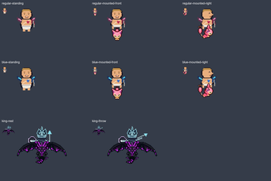
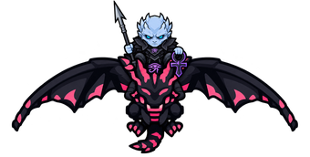
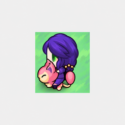
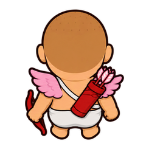
Latest paused candidate · review pending · 256 × 256
costume-mount-collage-20261028\outputs\bobby-reset-r1\frames\back-up.pngLatest paused candidate · review pending · 528 × 600
costume-mount-collage-20261028\outputs\bobby-reset-r1\frames\christmas-milo-source-rebuild-r2-back-up.pngLatest paused candidate · review pending · 528 × 600
costume-mount-collage-20261028\outputs\bobby-reset-r1\frames\christmas-milo-source-rebuild-r2-front-down.pngLatest paused candidate · review pending · 528 × 600
costume-mount-collage-20261028\outputs\bobby-reset-r1\frames\christmas-milo-source-rebuild-r2-left.png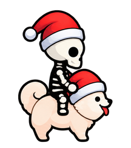
Latest paused candidate · review pending · 528 × 600
costume-mount-collage-20261028\outputs\bobby-reset-r1\frames\christmas-milo-source-rebuild-r2-right.pngLatest paused candidate · review pending · 256 × 256
costume-mount-collage-20261028\outputs\bobby-reset-r1\frames\front-down.png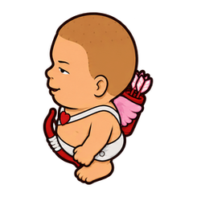
Latest paused candidate · review pending · 256 × 256
costume-mount-collage-20261028\outputs\bobby-reset-r1\frames\left.png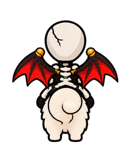
Latest paused candidate · review pending · 528 × 600
costume-mount-collage-20261028\outputs\bobby-reset-r1\frames\milo-source-rebuild-r2-back-up.png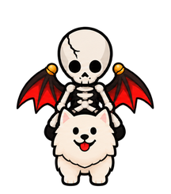
Latest paused candidate · review pending · 528 × 600
costume-mount-collage-20261028\outputs\bobby-reset-r1\frames\milo-source-rebuild-r2-front-down.png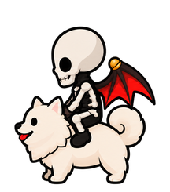
Latest paused candidate · review pending · 528 × 600
costume-mount-collage-20261028\outputs\bobby-reset-r1\frames\milo-source-rebuild-r2-left.png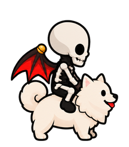
Latest paused candidate · review pending · 528 × 600
costume-mount-collage-20261028\outputs\bobby-reset-r1\frames\milo-source-rebuild-r2-right.png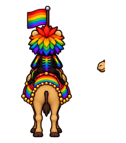
Latest paused candidate · review pending · 528 × 600
costume-mount-collage-20261028\outputs\bobby-reset-r1\frames\pride-camel-four-r1-back-up.png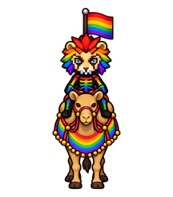
Latest paused candidate · review pending · 528 × 600
costume-mount-collage-20261028\outputs\bobby-reset-r1\frames\pride-camel-four-r1-front-down.png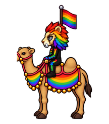
Latest paused candidate · review pending · 528 × 600
costume-mount-collage-20261028\outputs\bobby-reset-r1\frames\pride-camel-four-r1-left.png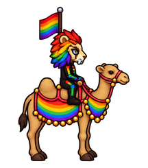
Latest paused candidate · review pending · 528 × 600
costume-mount-collage-20261028\outputs\bobby-reset-r1\frames\pride-camel-four-r1-right.png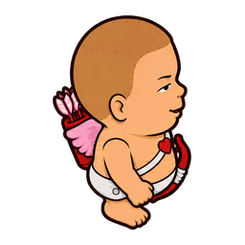
Latest paused candidate · review pending · 256 × 256
costume-mount-collage-20261028\outputs\bobby-reset-r1\frames\right.pngLatest paused candidate · review pending · 256 × 1024
costume-mount-collage-20261028\outputs\bobby-reset-r1\results\BOBBY-FOUR-DIRECTIONS.pngLatest paused candidate · review pending · 528 × 2400
costume-mount-collage-20261028\outputs\bobby-reset-r1\results\christmas-milo-source-rebuild-r2-DIRECTION-SHEET.png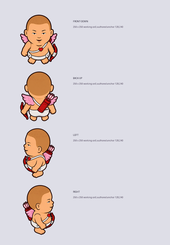
Latest paused candidate · review pending · 768 × 1104
costume-mount-collage-20261028\outputs\bobby-reset-r1\results\DIRECTION-REVIEW.png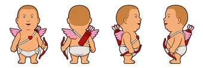
Latest paused candidate · review pending · 2170 × 725
costume-mount-collage-20261028\outputs\bobby-reset-r1\results\fresh-four-directions-r1.pngDraw BOBBY HILL CUPID FROM SCRATCH as a FOUR-DIRECTION OVERWORLD GAME COSTUME SHEET. Image1 original game BODY GEOMETRY and top-down camera guide only; image2 actual Bobby Hill likeness/costume authority; image3 approved C SMOOTH CONTOUR/CEL SHADING FINISH ONLY, not its rider identity or hair. Do not reproduce any prior generated Bobby. ONE horizontal row EXACTLY FOUR isolated sprites front/down, back/up, LEFT, RIGHT. Every sprite same height/proportions and foot baseline; clean transparent gutters, equal-width cells. Original game apparent scale: big but NOT huge infant head, short compact stocky torso/belly and small legs, visible top of head/shoulders like original body; no portrait camera or tall illustrated body. BOBBY FACE: short light-brown flat buzzcut following rounded scalp (NO styled fringe/spikes), short broad cheeks, small narrow half-lidded eyes with pupils/upper lids, short nose, characteristic little open smirk and subtle chin line. Do not replace face with big black oval chibi eyes or generic baby. Cupid details from show: simple white diaper/garment, diagonal white strap/red heart, pink small wings, red bow held low in hand, red quiver with pale arrow feathers. Back view has no face/chest heart; direction-specific strap/quiver placement, not careless mirroring. Same recognizable Bobby anatomy in each view. Smooth simple matte outlined game art, few broad cel shades, no skin gradients/muscles/gloss, no pixel block edges or painterly portrait, no sandals. Transparent background, no map/mount, no labels/grid/text. FOUR full-body sides only; no extra phases yet.
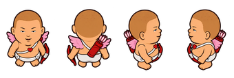
Latest paused candidate · review pending · 2170 × 725
costume-mount-collage-20261028\outputs\bobby-reset-r1\results\fresh-four-directions-r2.pngCorrect CAMERA AND PROPORTIONS of all FOUR Bobby Cupid views in image1 to OVERWORLD GAME FORMAT. Image2 is actual game geometry/camera guide. Keep the newly established Bobby face (half-lidded small almond eyes, smirk, buzzcut, broad cheeks) and exact costume design. Current image1 is too tall and eye-level/portrait-like. REDRAW ALL FOUR with short compact game body: HEAD including skull/chin must be about55% of total sprite height; torso/garment about30%; short feet/legs15%. Widen stocky torso slightly, shorten arms and legs, not realistic anatomy or muscular body. Camera elevated about35degrees looking down: show crown/scalp and tops of shoulders, foreshortened torso/feet and slight top surface of quiver/bow; side views also elevated, not eye-level cartoon turnaround. Preserve Bobby's facial features rather than generic big black eye baby. Four directions in ONE row EXACT order FRONT/DOWN, BACK/UP, LEFT, RIGHT. Same exact size, head/body proportions, foot baseline and equal-width cells. Back view no face/heart on chest, outfit/equipment keep anatomical handedness. Simple matte C smooth contours few broad cel shades, no gradients/gloss, transparent background, no text no scenery no mounts. This must read as GAME SPRITES, not character illustration turnarounds.
Latest paused candidate · review pending · 528 × 2400
costume-mount-collage-20261028\outputs\bobby-reset-r1\results\milo-source-rebuild-r2-DIRECTION-SHEET.pngLatest paused candidate · review pending · 528 × 2400
costume-mount-collage-20261028\outputs\bobby-reset-r1\results\pride-camel-four-r1-DIRECTION-SHEET.pngStatic working revision · review pending · 64 × 64
costume-mount-collage-20261028\outputs\native-build\bobby-king-r1\blue-mounted-front-rider.png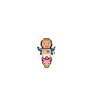
Static working revision · review pending · 160 × 160
costume-mount-collage-20261028\outputs\native-build\bobby-king-r1\blue-mounted-front.png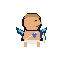
Static working revision · review pending · 64 × 64
costume-mount-collage-20261028\outputs\native-build\bobby-king-r1\blue-mounted-right-rider.pngStatic working revision · review pending · 160 × 160
costume-mount-collage-20261028\outputs\native-build\bobby-king-r1\blue-mounted-right.pngStatic working revision · review pending · 64 × 64
costume-mount-collage-20261028\outputs\native-build\bobby-king-r1\blue-standing-rider.png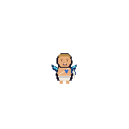
Static working revision · review pending · 160 × 160
costume-mount-collage-20261028\outputs\native-build\bobby-king-r1\blue-standing.pngStatic working revision · review pending · 1800 × 1200
costume-mount-collage-20261028\outputs\native-build\bobby-king-r1\BOBBY-KING-BOARD.png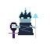
Static working revision · review pending · 64 × 64
costume-mount-collage-20261028\outputs\native-build\bobby-king-r1\king-rest-rider.png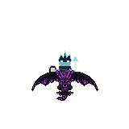
Static working revision · review pending · 160 × 160
costume-mount-collage-20261028\outputs\native-build\bobby-king-r1\king-rest.png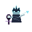
Static working revision · review pending · 64 × 64
costume-mount-collage-20261028\outputs\native-build\bobby-king-r1\king-throw-rider.png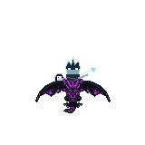
Static working revision · review pending · 160 × 160
costume-mount-collage-20261028\outputs\native-build\bobby-king-r1\king-throw.png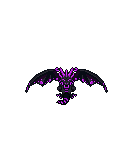
Static working revision · review pending · 132 × 150
costume-mount-collage-20261028\outputs\native-build\bobby-king-r1\pink-Flance-0-_Front.pngStatic working revision · review pending · 132 × 150
costume-mount-collage-20261028\outputs\native-build\bobby-king-r1\pink-Flance-0-base.pngStatic working revision · review pending · 64 × 64
costume-mount-collage-20261028\outputs\native-build\bobby-king-r1\regular-mounted-front-rider.pngStatic working revision · review pending · 160 × 160
costume-mount-collage-20261028\outputs\native-build\bobby-king-r1\regular-mounted-front.pngStatic working revision · review pending · 64 × 64
costume-mount-collage-20261028\outputs\native-build\bobby-king-r1\regular-mounted-right-rider.pngStatic working revision · review pending · 160 × 160
costume-mount-collage-20261028\outputs\native-build\bobby-king-r1\regular-mounted-right.pngStatic working revision · review pending · 64 × 64
costume-mount-collage-20261028\outputs\native-build\bobby-king-r1\regular-standing-rider.png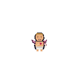
Static working revision · review pending · 160 × 160
costume-mount-collage-20261028\outputs\native-build\bobby-king-r1\regular-standing.png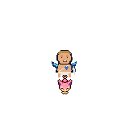
Static working revision · review pending · 160 × 160
costume-mount-collage-20261028\outputs\native-build\bobby-king-r2\blue-mounted-front.pngStatic working revision · review pending · 1800 × 1200
costume-mount-collage-20261028\outputs\native-build\bobby-king-r2\BOBBY-KING-BOARD.pngStatic working revision · review pending · 64 × 64
costume-mount-collage-20261028\outputs\native-build\bobby-king-r2\king-rest-rider.png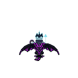
Static working revision · review pending · 160 × 160
costume-mount-collage-20261028\outputs\native-build\bobby-king-r2\king-rest.pngStatic working revision · review pending · 64 × 64
costume-mount-collage-20261028\outputs\native-build\bobby-king-r2\king-throw-rider.pngStatic working revision · review pending · 160 × 160
costume-mount-collage-20261028\outputs\native-build\bobby-king-r2\king-throw.pngStatic working revision · review pending · 160 × 160
costume-mount-collage-20261028\outputs\native-build\bobby-king-r2\regular-mounted-front.pngStatic working revision · review pending · 160 × 160
costume-mount-collage-20261028\outputs\native-build\bobby-king-r3\blue-mounted-front.png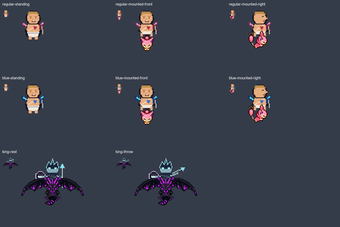
Static working revision · review pending · 1800 × 1200
costume-mount-collage-20261028\outputs\native-build\bobby-king-r3\BOBBY-KING-BOARD.png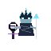
Static working revision · review pending · 64 × 64
costume-mount-collage-20261028\outputs\native-build\bobby-king-r3\king-rest-rider.png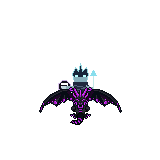
Static working revision · review pending · 160 × 160
costume-mount-collage-20261028\outputs\native-build\bobby-king-r3\king-rest.png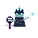
Static working revision · review pending · 64 × 64
costume-mount-collage-20261028\outputs\native-build\bobby-king-r3\king-throw-rider.png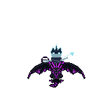
Static working revision · review pending · 160 × 160
costume-mount-collage-20261028\outputs\native-build\bobby-king-r3\king-throw.pngStatic working revision · review pending · 160 × 160
costume-mount-collage-20261028\outputs\native-build\bobby-king-r3\regular-mounted-front.pngStatic working revision · review pending · 64 × 64
costume-mount-collage-20261028\outputs\native-build\bobby-king-r4\blue-mounted-front-rider.pngStatic working revision · review pending · 160 × 160
costume-mount-collage-20261028\outputs\native-build\bobby-king-r4\blue-mounted-front.pngStatic working revision · review pending · 64 × 64
costume-mount-collage-20261028\outputs\native-build\bobby-king-r4\blue-mounted-right-rider.png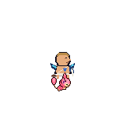
Static working revision · review pending · 160 × 160
costume-mount-collage-20261028\outputs\native-build\bobby-king-r4\blue-mounted-right.pngStatic working revision · review pending · 1800 × 1200
costume-mount-collage-20261028\outputs\native-build\bobby-king-r4\BOBBY-KING-BOARD.png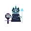
Static working revision · review pending · 64 × 64
costume-mount-collage-20261028\outputs\native-build\bobby-king-r4\king-rest-rider.pngStatic working revision · review pending · 160 × 160
costume-mount-collage-20261028\outputs\native-build\bobby-king-r4\king-rest.png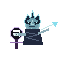
Static working revision · review pending · 64 × 64
costume-mount-collage-20261028\outputs\native-build\bobby-king-r4\king-throw-rider.png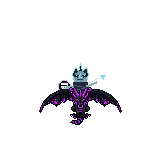
Static working revision · review pending · 160 × 160
costume-mount-collage-20261028\outputs\native-build\bobby-king-r4\king-throw.pngStatic working revision · review pending · 64 × 64
costume-mount-collage-20261028\outputs\native-build\bobby-king-r4\regular-mounted-front-rider.png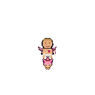
Static working revision · review pending · 160 × 160
costume-mount-collage-20261028\outputs\native-build\bobby-king-r4\regular-mounted-front.png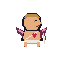
Static working revision · review pending · 64 × 64
costume-mount-collage-20261028\outputs\native-build\bobby-king-r4\regular-mounted-right-rider.pngStatic working revision · review pending · 160 × 160
costume-mount-collage-20261028\outputs\native-build\bobby-king-r4\regular-mounted-right.png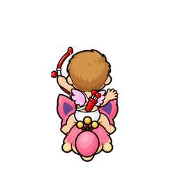
Rejected historical draft · 512 × 512
costume-mount-collage-20261028\outputs\production-C-r1\frames\back-follow-through.png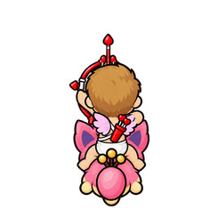
Rejected historical draft · 512 × 512
costume-mount-collage-20261028\outputs\production-C-r1\frames\back-full-draw.png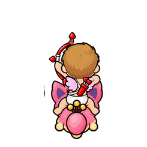
Rejected historical draft · 512 × 512
costume-mount-collage-20261028\outputs\production-C-r1\frames\back-half-draw.png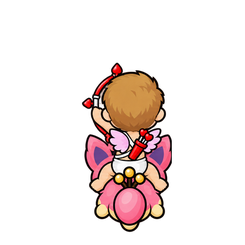
Rejected historical draft · 512 × 512
costume-mount-collage-20261028\outputs\production-C-r1\frames\back-nock.png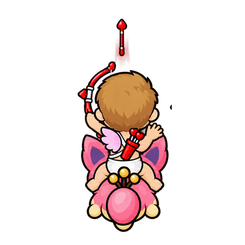
Rejected historical draft · 512 × 512
costume-mount-collage-20261028\outputs\production-C-r1\frames\back-release.png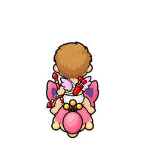
Rejected historical draft · 512 × 512
costume-mount-collage-20261028\outputs\production-C-r1\frames\back-reset.png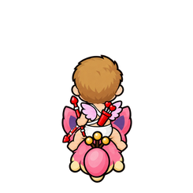
Rejected historical draft · 512 × 512
costume-mount-collage-20261028\outputs\production-C-r1\frames\back-rest.png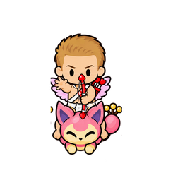
Rejected historical draft · 512 × 512
costume-mount-collage-20261028\outputs\production-C-r1\frames\front-follow-through.png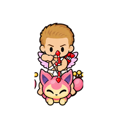
Rejected historical draft · 512 × 512
costume-mount-collage-20261028\outputs\production-C-r1\frames\front-full-draw.png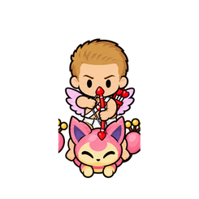
Rejected historical draft · 512 × 512
costume-mount-collage-20261028\outputs\production-C-r1\frames\front-half-draw.pngRejected historical draft · 512 × 512
costume-mount-collage-20261028\outputs\production-C-r1\frames\front-nock.pngRejected historical draft · 512 × 512
costume-mount-collage-20261028\outputs\production-C-r1\frames\front-release.pngRejected historical draft · 512 × 512
costume-mount-collage-20261028\outputs\production-C-r1\frames\front-reset.pngRejected historical draft · 512 × 512
costume-mount-collage-20261028\outputs\production-C-r1\frames\front-rest.pngRejected historical draft · 512 × 512
costume-mount-collage-20261028\outputs\production-C-r1\frames\left-follow-through.pngRejected historical draft · 512 × 512
costume-mount-collage-20261028\outputs\production-C-r1\frames\left-full-draw.pngRejected historical draft · 512 × 512
costume-mount-collage-20261028\outputs\production-C-r1\frames\left-half-draw.pngRejected historical draft · 512 × 512
costume-mount-collage-20261028\outputs\production-C-r1\frames\left-nock.pngRejected historical draft · 512 × 512
costume-mount-collage-20261028\outputs\production-C-r1\frames\left-release.pngRejected historical draft · 512 × 512
costume-mount-collage-20261028\outputs\production-C-r1\frames\left-reset.pngRejected historical draft · 512 × 512
costume-mount-collage-20261028\outputs\production-C-r1\frames\left-rest.pngRejected historical draft · 512 × 512
costume-mount-collage-20261028\outputs\production-C-r1\frames\right-follow-through.pngRejected historical draft · 512 × 512
costume-mount-collage-20261028\outputs\production-C-r1\frames\right-full-draw.pngRejected historical draft · 512 × 512
costume-mount-collage-20261028\outputs\production-C-r1\frames\right-half-draw.pngRejected historical draft · 512 × 512
costume-mount-collage-20261028\outputs\production-C-r1\frames\right-nock.pngRejected historical draft · 512 × 512
costume-mount-collage-20261028\outputs\production-C-r1\frames\right-release.pngRejected historical draft · 512 × 512
costume-mount-collage-20261028\outputs\production-C-r1\frames\right-reset.pngRejected historical draft · 512 × 512
costume-mount-collage-20261028\outputs\production-C-r1\frames\right-rest.pngRejected historical draft · 2172 × 724
costume-mount-collage-20261028\outputs\production-C-r1\results\action-back-r1.pngCreate a 7-column ONE ROW animation working strip of exact same mounted Bobby Cupid on Skitty from reference, all sprites facing back. Same smooth C finish, anatomy, costume, scale, mount silhouette and fixed feet/seat anchor in every cell. Seven phases in order: 1 rest bow low, 2 nock/raise bow, 3 half draw bowstring, 4 full draw bowstring hand pulled back toward cheek, 5 RELEASE string snaps forward hand opens ONE arrow starts forward, 6 follow-through extended bow arm, 7 reset bow lowers. Genuine hand/bow changes; mount/rider/head must not drift between cells. Bow aims up toward screen top. Arrow shaft aligned with aim, not diagonal wrongway. Keep bowstring visible and taut in draw poses. Exactly seven equally spaced cells each full sprite with clear transparent gutter, no overlaps, no text no grid no background. Preserve body/creature design; do not substitute unrelated characters. This is authored 7-phase strip, not game-native packing.
Rejected historical draft · 2172 × 724
costume-mount-collage-20261028\outputs\production-C-r1\results\action-back-r2.pngPreserve this exact seven-column Bobby/Skitty draw animation strip, all anatomy, poses, positions and colors. REMOVE every detached/free-flying projectile, arrow streak and trail from release/follow-through cells; transparency there. Keep arrow nocked only in nock/half/full draw poses, no projectile embedded across Skitty face in release/followthrough. Release arrow will be a separate runtime layer beyond mount silhouette. Keep hand release visible. Do not change rest/nock/draw/reset pose geometry. Exactly7separate full sprites sameequalcells no text no background, transparent.
Rejected historical draft · 2200 × 715
costume-mount-collage-20261028\outputs\production-C-r1\results\action-front-r1.pngCreate a 7-column ONE ROW animation working strip of exact same mounted Bobby Cupid on Skitty from reference, all sprites facing front. Same smooth C finish, anatomy, costume, scale, mount silhouette and fixed feet/seat anchor in every cell. Seven phases in order: 1 rest bow low, 2 nock/raise bow, 3 half draw bowstring, 4 full draw bowstring hand pulled back toward cheek, 5 RELEASE string snaps forward hand opens ONE arrow starts forward, 6 follow-through extended bow arm, 7 reset bow lowers. Genuine hand/bow changes; mount/rider/head must not drift between cells. Bow aims down toward screen bottom. Arrow shaft aligned with aim, not diagonal wrongway. Keep bowstring visible and taut in draw poses. Exactly seven equally spaced cells each full sprite with clear transparent gutter, no overlaps, no text no grid no background. Preserve body/creature design; do not substitute unrelated characters. This is authored 7-phase strip, not game-native packing.
Rejected historical draft · 2170 × 725
costume-mount-collage-20261028\outputs\production-C-r1\results\action-front-r2.pngPreserve this exact seven-column Bobby/Skitty draw animation strip, all anatomy, poses, positions and colors. REMOVE every detached/free-flying projectile, arrow streak and trail from release/follow-through cells; transparency there. Keep arrow nocked only in nock/half/full draw poses, no projectile embedded across Skitty face in release/followthrough. Release arrow will be a separate runtime layer beyond mount silhouette. Keep hand release visible. Do not change rest/nock/draw/reset pose geometry. Exactly7separate full sprites sameequalcells no text no background, transparent.
Rejected historical draft · 2172 × 724
costume-mount-collage-20261028\outputs\production-C-r1\results\action-left-r1.pngCreate a 7-column ONE ROW animation working strip of exact same mounted Bobby Cupid on Skitty from reference, all sprites facing left. Same smooth C finish, anatomy, costume, scale, mount silhouette and fixed feet/seat anchor in every cell. Seven phases in order: 1 rest bow low, 2 nock/raise bow, 3 half draw bowstring, 4 full draw bowstring hand pulled back toward cheek, 5 RELEASE string snaps forward hand opens ONE arrow starts forward, 6 follow-through extended bow arm, 7 reset bow lowers. Genuine hand/bow changes; mount/rider/head must not drift between cells. Bow aims left. Arrow shaft aligned with aim, not diagonal wrongway. Keep bowstring visible and taut in draw poses. Exactly seven equally spaced cells each full sprite with clear transparent gutter, no overlaps, no text no grid no background. Preserve body/creature design; do not substitute unrelated characters. This is authored 7-phase strip, not game-native packing.
Rejected historical draft · 2172 × 724
costume-mount-collage-20261028\outputs\production-C-r1\results\action-right-r1.pngCreate a 7-column ONE ROW animation working strip of exact same mounted Bobby Cupid on Skitty from reference, all sprites facing right. Same smooth C finish, anatomy, costume, scale, mount silhouette and fixed feet/seat anchor in every cell. Seven phases in order: 1 rest bow low, 2 nock/raise bow, 3 half draw bowstring, 4 full draw bowstring hand pulled back toward cheek, 5 RELEASE string snaps forward hand opens ONE arrow starts forward, 6 follow-through extended bow arm, 7 reset bow lowers. Genuine hand/bow changes; mount/rider/head must not drift between cells. Bow aims right. Arrow shaft aligned with aim, not diagonal wrongway. Keep bowstring visible and taut in draw poses. Exactly seven equally spaced cells each full sprite with clear transparent gutter, no overlaps, no text no grid no background. Preserve body/creature design; do not substitute unrelated characters. This is authored 7-phase strip, not game-native packing.
Rejected historical draft · 3584 × 2048
costume-mount-collage-20261028\outputs\production-C-r1\results\BOBBY-ACTION-4x7-DRAFT.pngRejected historical draft · 2172 × 724
costume-mount-collage-20261028\outputs\production-C-r1\results\bobby-blue-static.pngRecolor ONLY Cupid COSTUME/EQUIPMENT on this exact four-view sprite sheet to shiny alternate BLUE/CYAN: rider pink wings become pale cyan/blue, red bow/quiver/hearts become royal blue/cyan, white garment slightly cool white. Keep Bobby skin, hair, face, poses, all silhouettes, canvas positions, anatomy and REGULAR PINK SKITTY completely unchanged. Skitty MUST remain pink including ears, face/body and tail. No effects or new pixels outside original silhouettes. Preserve exact four-direction sheet layout front,back,left,right, transparent background. This is a color-only edit, not redraw.
Rejected historical draft · 1254 × 1254
costume-mount-collage-20261028\outputs\production-C-r1\results\bobby-identity-rebase-r1.pngCreate ONE front/down facing game overworld costume sprite recognizable as BOBBY HILL in his Cupid outfit from image1. Image1 is likeness authority. Image2 smooth finish and overhead game camera ONLY. DO NOT use generic chibi boy face: Bobby distinctive very short FLAT buzzcut hugging rounded head (no swept/spiky hairstyle), short broad face, heavy rounded cheeks/double chin, small half-lidded almond eyes with little pupils (NOT large oval black eyes), short nose and small sideways knowing smirk; stocky short child body. Preserve understated original Bobby expression. Cupid white garment, diagonal strap with red heart, small pink wings, red bow held LOW clear of face, red quiver behind shoulder. Slight top-down game camera visible scalp/shoulder tops, smooth dark contour restrained simple cel shading, no polished portrait/realistic rendering. Keep overall game head/body ratio but DO NOT erase Bobby's recognizable facial geometry. Transparent background, one figure only, no mount, no text.
Rejected historical draft · 1254 × 1254
costume-mount-collage-20261028\outputs\production-C-r1\results\bobby-mounted-back-r1.pngCreate ONE BACK facing version of exact mounted Bobby Cupid character in image1. Image2 defines mount four-direction anatomy in order front, back,left,right. Preserve same Bobby haircut, stocky child identity, clothing/heart strap/pink wings/red bow/quiver, Skitty shape/colors and rider-to-mount size. Exact same overhead game-camera and smooth C finish. Face away/up, show back of short brown hair, Cupid wings, red quiver, Skitty back and tail. Do not show face or frontal chest heart. Clear seated contact and distinct leg/mount overlap, same relative scale. Transparent background, full body centered with padding, no text/panels/ground.
Rejected historical draft · 1254 × 1254
costume-mount-collage-20261028\outputs\production-C-r1\results\bobby-mounted-front-r1.pngCreate ONE FRONT facing version of exact mounted Bobby Cupid character in image1. Image2 defines mount four-direction anatomy in order front, back,left,right. Preserve same Bobby haircut, stocky child identity, clothing/heart strap/pink wings/red bow/quiver, Skitty shape/colors and rider-to-mount size. Exact same overhead game-camera and smooth C finish. Face toward viewer/down, show both cheeks and Skitty cream closed-eye face with two ears and tiny front paws. Clear seated contact and distinct leg/mount overlap, same relative scale. Transparent background, full body centered with padding, no text/panels/ground.
Rejected historical draft · 1254 × 1254
costume-mount-collage-20261028\outputs\production-C-r1\results\bobby-mounted-left-r1.pngEdit image1's mounted rider ONLY to Bobby Hill Cupid, in the exact same game OVERHEAD left-facing sprite pose, silhouette scale and seated placement. Keep Skitty identical in camera, silhouette, small size, tail, ears, face, feet and position. Image2 is Bobby identity/outfit only. Image3 original game pose registration. Replace purple hair with Bobby short flat sandy-brown haircut following head silhouette, round cheeks, small game eye, stocky proportions. Keep rider head dominant like image1, body compact and legs hugging mount at exactly same seat/contact points as original rider. Cupid white garment, diagonal white strap/red heart, small pink wings behind shoulders, red quiver, red bow held low clear of Skitty face. NO standalone Bobby, no realistic cartoon face, no side-on enlarged cat, no enlarged mount. Smooth C finish dark contours and simple restrained cel shading. ONE LEFT-FACING mounted sprite only, on truly transparent background, no ground no labels no panels. Subject fills canvas with transparent padding.
Rejected historical draft · 1254 × 1254
costume-mount-collage-20261028\outputs\production-C-r1\results\bobby-mounted-left-r2.pngCorrect mounted pose ONLY. Preserve exact Skitty design, size, face, ears, tail and feet. Reduce Bobby TORSO and leg size by about 30 percent, head by 12 percent, and shift his seated pelvis slightly backward onto Skitty back so clearly straddling. Bend visible thigh forward along upper back, knee then short calf down flank; foot should be visibly separate from Skitty feet. Expose more Skitty back/body between neck and tail. Keep child stocky build and short flat light brown haircut with broad round cheeks, small simple half-lidded eye, recognizable Bobby Hill. Simplify shiny highlights, quiver and wings. Bow held ahead of torso without crossing mount face or rider leg. C smooth clean illustrated game finish. Transparent background same LEFT-facing overhead game view. Do not add a saddle or change creature anatomy.
Rejected historical draft · 1254 × 1254
costume-mount-collage-20261028\outputs\production-C-r1\results\bobby-mounted-left-r3.pngFinal tiny pose cleanup of exact sprite, no redesign. Keep face, proportions, smooth C finish and Skitty anatomy. Move bow forward left a little to create clear transparent gap from Skitty ear and leg; keep held in near hand. Reduce quiver bulk, clear wing/tail overlap. Define seated pelvis on top of Skitty back with a short readable contact boundary, bent visible leg down flank and far foot subtly on far side. Do not enlarge or distort mount, do not add saddle. Transparent background, same left-facing overhead game pose.
Rejected historical draft · 1254 × 1254
costume-mount-collage-20261028\outputs\production-C-r1\results\bobby-mounted-right-r1.pngCreate ONE RIGHT facing version of exact mounted Bobby Cupid character in image1. Image2 defines mount four-direction anatomy in order front, back,left,right. Preserve same Bobby haircut, stocky child identity, clothing/heart strap/pink wings/red bow/quiver, Skitty shape/colors and rider-to-mount size. Exact same overhead game-camera and smooth C finish. Face right with right-specific visible leg, bow held in correct hand, equipment remains anatomically placed, do not reverse outfit indiscriminately. Clear seated contact and distinct leg/mount overlap, same relative scale. Transparent background, full body centered with padding, no text/panels/ground.
Rejected historical draft · 1254 × 1254
costume-mount-collage-20261028\outputs\production-C-r1\results\bobby-mounted-source-rebase.pngCreate ONE LEFT facing overhead game mounted pose. KEEP EXACT BOBBY HILL facial identity from image1: flat short buzzcut, small half-lidded almond eyes with pupils, broad cheek/double chin, small knowing smirk. Never substitute big black oval eyes or spiky hair. Image2 Skitty and seated pose/camera/scale authority, C smooth finish. Replace original purple-haired rider ONLY with this Bobby, seated compactly in same position with legs down mount sides, preserving Skitty design, small size, head/body/tail proportions. Condense Bobby torso as needed to fit game camera but keep stocky build and correct face geometry. White Cupid garment, heart strap, small pink wings, red quiver and red bow held clear of Skitty ears/face. Preserve believable seat contact and visible mount back. No oversized side-on cat or pasted portrait. Transparent background one sprite no text.
Rejected historical draft · 2172 × 724
costume-mount-collage-20261028\outputs\production-C-r1\results\bobby-standing-four-r1.pngSame Bobby Cupid game character, STANDING without mount. One consistent four-direction sheet, four equally spaced isolated sprites in a single horizontal row front/down, back/up,left,right. Same head/body ratio, sandy short flat haircut, round cheeks, compact stocky body, white garment, heart strap, pink wings, red bow/quiver. Smooth C illustrated remaster overhead viewpoint, simple clean shading. Keep proportions/anatomy identical across directions and clear equipment positions. Transparent background no text no lines no mount. Each sprite centered within equal-width cell with padding.
Rejected historical draft · 2048 × 512
costume-mount-collage-20261028\outputs\production-C-r1\results\BOBBY-STATIC-FOUR.pngRejected historical draft · 512 × 512
costume-mount-collage-20261028\outputs\production-C-r1\results\motion-back-DRAFT.gifRejected historical draft · 512 × 512
costume-mount-collage-20261028\outputs\production-C-r1\results\motion-front-DRAFT.gifRejected historical draft · 512 × 512
costume-mount-collage-20261028\outputs\production-C-r1\results\motion-left-DRAFT.gifRejected historical draft · 512 × 512
costume-mount-collage-20261028\outputs\production-C-r1\results\motion-right-DRAFT.gifWorking study · review pending · 2172 × 724
costume-mount-collage-20261028\outputs\production-C-r1\results\collection-flance-skeleton.pngOriginal compact black/navy Flance dragon mount with CYAN/BLUE highlights and tiny blunt horned head, original bat wing silhouette from first source. Skeleton-costume game rider seated compactly between shoulders, black bodysuit pale bones/skull same as second source. FOUR separate equal-size directions in ONE row front/down,back/up,left,right. Preserve original creature proportions, no huge skeletal dragon skull or armor redesign, no pink shiny variant here. Smooth C illustrated finish dark contours simple cel shading slight overhead game camera. All objects full with transparent padding, no text no environment.
Working study · review pending · 1765 × 891
costume-mount-collage-20261028\outputs\production-C-r1\results\flance-pink-front-r2.pngRemaster image1 EXACT compact Flance dragon mount FRONT OVERHEAD pose; image2 finish reference only. Keep source silhouette and proportions precisely: compact black/navy body, small blunt horned head between broad but SIMPLE dark bat wings, visible top surface, small feet below, short narrow tail below. Source head is NOT long skeletal dragon skull. Smooth dark contours, restrained C cel shading, 2-3 broad shades, NO elaborate armor scales or glowing cracks. Change only electric blue/cyan accent markings to deep rose/PINK. Maintain original wing joints and horn positions. No rider, no spear, no symbols, no effects, no environment. Transparent background, full sprite with padding. Faithful game shape translated to smooth contours, not reinvented.
Working study · review pending · 1536 × 1024
costume-mount-collage-20261028\outputs\production-C-r1\results\king-flance-front-r1.pngONE front-facing overhead game sprite: Night King from image1 seated believably on Flance dragon from FIRST view image2. Creature must preserve original Flance long dark dragon, wide bat wings, horns and pointed muzzle; recolor original electric CYAN accents to opposite PINK, keep dark body, not generic fluffy dragon. Smooth C illustrated remaster, simplified contours/shading. Rider compact enough to reveal dragon face/wings, both legs straddle mount. Left hand maintains top-rim obsidian-violet ankh grip with fingers underneath rim opening visible. Right hand holds long simple harpoon upright clear of body. Small Eye of Horus radiates separately above dragon brow, do not replace eyes. Transparent background no labels no panels no environment.
Working study · review pending · 1764 × 892
costume-mount-collage-20261028\outputs\production-C-r1\results\king-flance-r2.pngCreate ONE mounted Night King game sprite facing front/down in overhead viewpoint. Image1 EXACT Flance mount shape/colors and smooth simple finish; preserve its compact blunt head, original wing silhouette and small feet/tail. Image2 exact rider identity/costume; seat rider compactly on upper back between wing joints, do not enlarge/redesign dragon. Rider head width about one-quarter mount wingspan; clear seated thighs/feet flank dragon without covering face. Left hand grips TOP RIM obsidian-violet ankh fingers underneath upper rim opening visible. Right hand holds simple silver-gray straight HARPOON upright (not magic staff), no crystals. Small violet Eye of Horus symbol floating above mount brow separate from dragon anatomy. Transparent background, generous padding, no glows or environment, no portrait.
Working study · review pending · 1254 × 1254
costume-mount-collage-20261028\outputs\production-C-r1\results\king-front-r1.pngSimplify image1 Night King for game overworld sprite in image2 C finish/camera. ONE front-facing full body sprite only, transparent background. Preserve bald ridged icy face, blue eyes, dark charcoal armor, small Eye of Horus chest glyph. Reduce faceted skin and armor to a few clean shapes, short compact body and large head like game rider reference. Holds obsidian ankh with muted violet edge beside left hip: hand OVER TOP of oval loop, three clearly separated fingers hook underneath upper rim, visible loop opening underneath fingers. No gem ornaments, no hair. Keep ankh simple cross with oval loop. Smooth contours restrained cel shading, no portrait study or inset. Slight overhead viewpoint visible top scalp/shoulders and feet.
Working study · review pending · 1254 × 1254
costume-mount-collage-20261028\outputs\production-C-r1\results\king-front-r2.pngSimplify this exact Night King sprite drawing while preserving identity and pose, transparent background. Smooth illustrated game remaster C finish. Remove about half small internal facial facets, keep broad brow ridge, cheek planes, scalp ridges and icy blue eyes. Reduce armor to large clean charcoal overlapping plates with little shading, no repeated tiny shoulder feathers. Keep small pale violet Eye of Horus chest glyph. Keep hand OVER TOP ankh loop, clearly separated three fingers curl UNDER upper rim with visible opening below. Muted obsidian ankh and violet edge. Preserve proportions, camera and silhouette. No pixelation, no new design.
Style study · C selected as character finish · 1536 × 1024
costume-mount-collage-20261028\outputs\remaster-comparison\A-clean-illustrated-r1.pngCreate a controlled faithful game REMASTER STYLE COMPARISON SAMPLE, smooth modern 2D art, NOT pixel art. Landscape review board with identical prescribed layout: top-left panel familiar purple-haired game rider on REGULAR SKITTY facing diagonally right, top-middle Bobby Hill Cupid STANDING facing diagonally right, top-right SAME Bobby SEATED riding regular Skitty facing diagonally right. Bottom-left a close detail of icy gaunt crowned Night King's face and left hand physically gripping THROUGH the OPEN LOOP of an obsidian dark-violet ankh with pale violet edge, not a pendant, not gold. Bottom-right occupying remaining lower two-thirds width: Fright Town's exact central pumpkin-house and path crop from reference3, same overhead camera/map structure, not a new generic haunted scene. Plain light neutral board margins, clear panel separation. Small panel labels only 'Game rider', 'Bobby standing', 'Bobby mounted', 'King / loop grip', 'Fright Town'. Smooth carefully REDRAWN contours rather than blur or vectorizing jagged pixels. Reference1 is absolute game shape/camera/scale guide: preserve regular Skitty pink body, cream face, CLOSED slitted eyes, very narrow top-down head, two triangular ears, thin curl tail with ROUND BULB TIP not a fluffy tail or fan, tiny legs. Mount remains small compared to seated large-head tiny-body rider exactly as original. Familiar rider has purple side-swept hair and purple outfit. Reference2 ONLY character/costume identity: recognizable Bobby Hill, short light-brown/blond buzzcut, round clean-shaven face, small eyes, playful open-mouth expression, rounded torso, ordinary nonsexual comedic Cupid costume with white diaper-style lower garment, ivory diagonal strap and red heart, small pink feather wings, compact red quiver and red bow. No beard, no helmet, no generic infant. Standing and mounted SAME head/body ratios/colors; mounted pelvis rests on creature back, legs bend around saddle area, hand rests naturally on bow. Reference3 actual game Fright Town, preserve pumpkin-house shape with glowing round windows and tall central lit entrance, curved stem and foreheadflame motif, straight central dirt path, purple/deep-orange forest and witch/lantern markers positions; keep top-down orthographic game viewpoint, not low-angle cinematic perspective, no castle, no additional characters. Reference4 is equipment/layout cue ONLY, not required drawing quality; king should have blue icy exposed gaunt face not helmet visor, dark cold armor and cyan crown, holding the ankh ring with visible finger overlap and empty opening above hand. Do not include Thoth, ibis characters, Lugia, Aerodactyl, observercast, textprovenance over art. All regular mount shapes must closely follow source; do not invent a new cute round Skitty. Source-resolution target is a 4x working redraw: for original ~24x36 character use roughly96x144 character design budget, then present large enough to assess; preserve proportions and avoid huge portrait heads. This is a STYLE STUDY, not a recovered map or layered game-ready export. Maintain original palettes/designs/overhead gamefeel while replacing pixel stair-steps with deliberate clean contours. STYLE FOR THIS SAMPLE ONLY: CLEAN ILLUSTRATED 2D: precise smooth dark contour lines, restrained two/three-tone CEL SHADING, crisp controlled shapes and facial landmarks, flat clean materials; no painterly texture, no bloom, no visible square pixels. Small title 'A — Clean illustrated 2D'.
Style study · C selected as character finish · 1536 × 1024
costume-mount-collage-20261028\outputs\remaster-comparison\B-soft-painted-r1.pngCreate a controlled faithful game REMASTER STYLE COMPARISON SAMPLE, smooth modern 2D art, NOT pixel art. Landscape review board with identical prescribed layout: top-left panel familiar purple-haired game rider on REGULAR SKITTY facing diagonally right, top-middle Bobby Hill Cupid STANDING facing diagonally right, top-right SAME Bobby SEATED riding regular Skitty facing diagonally right. Bottom-left a close detail of icy gaunt crowned Night King's face and left hand physically gripping THROUGH the OPEN LOOP of an obsidian dark-violet ankh with pale violet edge, not a pendant, not gold. Bottom-right occupying remaining lower two-thirds width: Fright Town's exact central pumpkin-house and path crop from reference3, same overhead camera/map structure, not a new generic haunted scene. Plain light neutral board margins, clear panel separation. Small panel labels only 'Game rider', 'Bobby standing', 'Bobby mounted', 'King / loop grip', 'Fright Town'. Smooth carefully REDRAWN contours rather than blur or vectorizing jagged pixels. Reference1 is absolute game shape/camera/scale guide: preserve regular Skitty pink body, cream face, CLOSED slitted eyes, very narrow top-down head, two triangular ears, thin curl tail with ROUND BULB TIP not a fluffy tail or fan, tiny legs. Mount remains small compared to seated large-head tiny-body rider exactly as original. Familiar rider has purple side-swept hair and purple outfit. Reference2 ONLY character/costume identity: recognizable Bobby Hill, short light-brown/blond buzzcut, round clean-shaven face, small eyes, playful open-mouth expression, rounded torso, ordinary nonsexual comedic Cupid costume with white diaper-style lower garment, ivory diagonal strap and red heart, small pink feather wings, compact red quiver and red bow. No beard, no helmet, no generic infant. Standing and mounted SAME head/body ratios/colors; mounted pelvis rests on creature back, legs bend around saddle area, hand rests naturally on bow. Reference3 actual game Fright Town, preserve pumpkin-house shape with glowing round windows and tall central lit entrance, curved stem and foreheadflame motif, straight central dirt path, purple/deep-orange forest and witch/lantern markers positions; keep top-down orthographic game viewpoint, not low-angle cinematic perspective, no castle, no additional characters. Reference4 is equipment/layout cue ONLY, not required drawing quality; king should have blue icy exposed gaunt face not helmet visor, dark cold armor and cyan crown, holding the ankh ring with visible finger overlap and empty opening above hand. Do not include Thoth, ibis characters, Lugia, Aerodactyl, observercast, textprovenance over art. All regular mount shapes must closely follow source; do not invent a new cute round Skitty. Source-resolution target is a 4x working redraw: for original ~24x36 character use roughly96x144 character design budget, then present large enough to assess; preserve proportions and avoid huge portrait heads. This is a STYLE STUDY, not a recovered map or layered game-ready export. Maintain original palettes/designs/overhead gamefeel while replacing pixel stair-steps with deliberate clean contours. STYLE FOR THIS SAMPLE ONLY: SOFT PAINTED 2D: hand-painted storybook game art with gentle tactile brush texture, soft modeled shading and atmospheric warm/cool light, still clear silhouettes and readable eyes, no muddy blur or photorealism, no hard cel-shadow cuts. Small title 'B — Soft painted 2D'.
Style study · C selected as character finish · 1536 × 1024
costume-mount-collage-20261028\outputs\remaster-comparison\C-hybrid-r1.pngCreate a controlled faithful game REMASTER STYLE COMPARISON SAMPLE, smooth modern 2D art, NOT pixel art. Landscape review board with identical prescribed layout: top-left panel familiar purple-haired game rider on REGULAR SKITTY facing diagonally right, top-middle Bobby Hill Cupid STANDING facing diagonally right, top-right SAME Bobby SEATED riding regular Skitty facing diagonally right. Bottom-left a close detail of icy gaunt crowned Night King's face and left hand physically gripping THROUGH the OPEN LOOP of an obsidian dark-violet ankh with pale violet edge, not a pendant, not gold. Bottom-right occupying remaining lower two-thirds width: Fright Town's exact central pumpkin-house and path crop from reference3, same overhead camera/map structure, not a new generic haunted scene. Plain light neutral board margins, clear panel separation. Small panel labels only 'Game rider', 'Bobby standing', 'Bobby mounted', 'King / loop grip', 'Fright Town'. Smooth carefully REDRAWN contours rather than blur or vectorizing jagged pixels. Reference1 is absolute game shape/camera/scale guide: preserve regular Skitty pink body, cream face, CLOSED slitted eyes, very narrow top-down head, two triangular ears, thin curl tail with ROUND BULB TIP not a fluffy tail or fan, tiny legs. Mount remains small compared to seated large-head tiny-body rider exactly as original. Familiar rider has purple side-swept hair and purple outfit. Reference2 ONLY character/costume identity: recognizable Bobby Hill, short light-brown/blond buzzcut, round clean-shaven face, small eyes, playful open-mouth expression, rounded torso, ordinary nonsexual comedic Cupid costume with white diaper-style lower garment, ivory diagonal strap and red heart, small pink feather wings, compact red quiver and red bow. No beard, no helmet, no generic infant. Standing and mounted SAME head/body ratios/colors; mounted pelvis rests on creature back, legs bend around saddle area, hand rests naturally on bow. Reference3 actual game Fright Town, preserve pumpkin-house shape with glowing round windows and tall central lit entrance, curved stem and foreheadflame motif, straight central dirt path, purple/deep-orange forest and witch/lantern markers positions; keep top-down orthographic game viewpoint, not low-angle cinematic perspective, no castle, no additional characters. Reference4 is equipment/layout cue ONLY, not required drawing quality; king should have blue icy exposed gaunt face not helmet visor, dark cold armor and cyan crown, holding the ankh ring with visible finger overlap and empty opening above hand. Do not include Thoth, ibis characters, Lugia, Aerodactyl, observercast, textprovenance over art. All regular mount shapes must closely follow source; do not invent a new cute round Skitty. Source-resolution target is a 4x working redraw: for original ~24x36 character use roughly96x144 character design budget, then present large enough to assess; preserve proportions and avoid huge portrait heads. This is a STYLE STUDY, not a recovered map or layered game-ready export. Maintain original palettes/designs/overhead gamefeel while replacing pixel stair-steps with deliberate clean contours. STYLE FOR THIS SAMPLE ONLY: ILLUSTRATED WITH PAINTED LIGHTING: crisp smooth inked character/creature silhouettes and readable cel-shaded faces, softly painted Fright Town surfaces and atmospheric warm lantern/cool dusk light. Characters remain crisp while environment light is gently painted; subtle shared reflected light, no painterly smear on faces. Small title 'C — Illustrated + painted lighting'.
Style study · C selected as character finish · 1254 × 1254
costume-mount-collage-20261028\outputs\remaster-registered\A-registered-r1.pngEDIT THE PROVIDED IMAGE IN PLACE, not a new composition. SAME1024x1024canvas, SAME occupied image rectangle x288..735 y264..759, SAME light-gray margins, SAME high overhead LEFT-facing rider/cat pose. This is an image-registered remaster experiment: TRACE EXISTING SILHOUETTE and retain the EXACT footprint, head size, posture, obscured rider face, ear corners, feet and tail tip centers. Do not move, rotate, enlarge or reimagine anything. The purple hair occupies most of the upper silhouette, very large relative to the tiny squeezed rider torso; keep it that way. Face is narrow LEFT-facing sliver with one green eye, NO front face. Rider hunched on tiny regular pink/cream Skitty facing LEFT; cat face at lowerLEFT, small slit eye, narrow head partly hidden behind rider; tail round pink bulb at lowerRIGHT, tiny legs along bottom, keep original occlusion. Do NOT make a round chibi big-headedcat with enlarged ears or extra eyes, no fluffy tail. Maintain sourcecamera and characterproportions rigorously. Only convert stair-step pixel edges and color patches into smoothly drawn corresponding contours and shading within the same boundaries; no new anatomy, no realistic texture, no pose correction, no addedaccessories. Retain green grassrectangle, graymargins, originalsourcepalette. Output no text, no labels, no panelborder, no portraits, no companion. Preserve reference registration so opacity overlay aligns directly, no arbitrary inset/resizing. No visible large pixelblocks, but no blur: deliberate drawn outlines and short shading transitions. The source's unusual compressed spriteproportions are INTENTIONAL and must not be aesthetically redesigned. Finish A: Smooth dark contour tracing, clean restrained2-3tone CEL shading; flat illustrated2D, no paint texture.
Style study · C selected as character finish · 1254 × 1254
costume-mount-collage-20261028\outputs\remaster-registered\A-registered-r2.pngCORRECTION EDIT. Image1 is controlling geometry source, image2 is failed remaster needing correction. Return same square registration, graymarginandgreenrectangleandLEFTfacing subject footprint as image1. Do not add text. Correct image2 to EXACT source smaller ear/muzzle proportions, narrow sliverface, flattened irregular haircrown not inflateddome, small tailbulb centeranddiameter, partiallyoccludedfeet clustered underbody not separatedtoes. Sourcefoot positions and overlap must remain, do not prettifyanatomy. Trace source's unusual compactsprite silhouette into smoothcontours at highres. Followimage1outerboundaryandallfeaturepositions, use image2ONLY surfacefinish. Image2reinterpretedshapes mustbe discarded. Fourkeylockedlandmarks: hairtopsameheight, leftmostcreamcatmuzzlesamex, lowerfootsamebaseline, righttailtipnotlargerorhigherthanoriginal. Match exactsourcehairbraid/neckandcatheadocclusion. No enlargedcathead, no shoulderexpansion, no longcatbody. Style A: clean illustrated celshaded2D smoothcontinuouscontours with restrainedoriginalpalette. Do not blend away originalsource landmarks. Output only registeredassetimage, not newcomposition, no extra panels.
Style study · C selected as character finish · 1254 × 1254
costume-mount-collage-20261028\outputs\remaster-registered\B-registered-r1.pngEDIT THE PROVIDED IMAGE IN PLACE, not a new composition. SAME1024x1024canvas, SAME occupied image rectangle x288..735 y264..759, SAME light-gray margins, SAME high overhead LEFT-facing rider/cat pose. This is an image-registered remaster experiment: TRACE EXISTING SILHOUETTE and retain the EXACT footprint, head size, posture, obscured rider face, ear corners, feet and tail tip centers. Do not move, rotate, enlarge or reimagine anything. The purple hair occupies most of the upper silhouette, very large relative to the tiny squeezed rider torso; keep it that way. Face is narrow LEFT-facing sliver with one green eye, NO front face. Rider hunched on tiny regular pink/cream Skitty facing LEFT; cat face at lowerLEFT, small slit eye, narrow head partly hidden behind rider; tail round pink bulb at lowerRIGHT, tiny legs along bottom, keep original occlusion. Do NOT make a round chibi big-headedcat with enlarged ears or extra eyes, no fluffy tail. Maintain sourcecamera and characterproportions rigorously. Only convert stair-step pixel edges and color patches into smoothly drawn corresponding contours and shading within the same boundaries; no new anatomy, no realistic texture, no pose correction, no addedaccessories. Retain green grassrectangle, graymargins, originalsourcepalette. Output no text, no labels, no panelborder, no portraits, no companion. Preserve reference registration so opacity overlay aligns directly, no arbitrary inset/resizing. No visible large pixelblocks, but no blur: deliberate drawn outlines and short shading transitions. The source's unusual compressed spriteproportions are INTENTIONAL and must not be aesthetically redesigned. Finish B: Soft handpainted2D surface shading confined to source colorregions, delicate painterly texture, still sharp silhouette and preserved landmarks; no blur or realisticform remodeling.
Style study · C selected as character finish · 1254 × 1254
costume-mount-collage-20261028\outputs\remaster-registered\B-registered-r2.pngCORRECTION EDIT. Image1 is controlling geometry source, image2 is failed remaster needing correction. Return same square registration, graymarginandgreenrectangleandLEFTfacing subject footprint as image1. Do not add text. Correct image2 to EXACT source smaller ear/muzzle proportions, narrow sliverface, flattened irregular haircrown not inflateddome, small tailbulb centeranddiameter, partiallyoccludedfeet clustered underbody not separatedtoes. Sourcefoot positions and overlap must remain, do not prettifyanatomy. Trace source's unusual compactsprite silhouette into smoothcontours at highres. Followimage1outerboundaryandallfeaturepositions, use image2ONLY surfacefinish. Image2reinterpretedshapes mustbe discarded. Fourkeylockedlandmarks: hairtopsameheight, leftmostcreamcatmuzzlesamex, lowerfootsamebaseline, righttailtipnotlargerorhigherthanoriginal. Match exactsourcehairbraid/neckandcatheadocclusion. No enlargedcathead, no shoulderexpansion, no longcatbody. Style B: soft smoothly painted tones INSIDE originalshape, clean refined continuous outsideedge not scalloped brushlumps; subtle fine painted shading, no coarse visible dabs. Do not blend away originalsource landmarks. Output only registeredassetimage, not newcomposition, no extra panels.
Style study · C selected as character finish · 1254 × 1254
costume-mount-collage-20261028\outputs\remaster-registered\C-registered-r1.pngEDIT THE PROVIDED IMAGE IN PLACE, not a new composition. SAME1024x1024canvas, SAME occupied image rectangle x288..735 y264..759, SAME light-gray margins, SAME high overhead LEFT-facing rider/cat pose. This is an image-registered remaster experiment: TRACE EXISTING SILHOUETTE and retain the EXACT footprint, head size, posture, obscured rider face, ear corners, feet and tail tip centers. Do not move, rotate, enlarge or reimagine anything. The purple hair occupies most of the upper silhouette, very large relative to the tiny squeezed rider torso; keep it that way. Face is narrow LEFT-facing sliver with one green eye, NO front face. Rider hunched on tiny regular pink/cream Skitty facing LEFT; cat face at lowerLEFT, small slit eye, narrow head partly hidden behind rider; tail round pink bulb at lowerRIGHT, tiny legs along bottom, keep original occlusion. Do NOT make a round chibi big-headedcat with enlarged ears or extra eyes, no fluffy tail. Maintain sourcecamera and characterproportions rigorously. Only convert stair-step pixel edges and color patches into smoothly drawn corresponding contours and shading within the same boundaries; no new anatomy, no realistic texture, no pose correction, no addedaccessories. Retain green grassrectangle, graymargins, originalsourcepalette. Output no text, no labels, no panelborder, no portraits, no companion. Preserve reference registration so opacity overlay aligns directly, no arbitrary inset/resizing. No visible large pixelblocks, but no blur: deliberate drawn outlines and short shading transitions. The source's unusual compressed spriteproportions are INTENTIONAL and must not be aesthetically redesigned. Finish C: Clean illustrated contours with gently painted reflected light within same sourcepalette and same silhouettes; no dramatic relighting, no saturationdrift.
Style study · C selected as character finish · 1254 × 1254
costume-mount-collage-20261028\outputs\remaster-registered\C-registered-r2.pngCORRECTION EDIT. Image1 is controlling geometry source, image2 is failed remaster needing correction. Return same square registration, graymarginandgreenrectangleandLEFTfacing subject footprint as image1. Do not add text. Correct image2 to EXACT source smaller ear/muzzle proportions, narrow sliverface, flattened irregular haircrown not inflateddome, small tailbulb centeranddiameter, partiallyoccludedfeet clustered underbody not separatedtoes. Sourcefoot positions and overlap must remain, do not prettifyanatomy. Trace source's unusual compactsprite silhouette into smoothcontours at highres. Followimage1outerboundaryandallfeaturepositions, use image2ONLY surfacefinish. Image2reinterpretedshapes mustbe discarded. Fourkeylockedlandmarks: hairtopsameheight, leftmostcreamcatmuzzlesamex, lowerfootsamebaseline, righttailtipnotlargerorhigherthanoriginal. Match exactsourcehairbraid/neckandcatheadocclusion. No enlargedcathead, no shoulderexpansion, no longcatbody. Style C: soft smoothly painted tones INSIDE originalshape, clean refined continuous outsideedge not scalloped brushlumps; crisp drawn boundary plus gentle painted lighting. Do not blend away originalsource landmarks. Output only registeredassetimage, not newcomposition, no extra panels.
Style study · C selected as character finish · 1024 × 1024
costume-mount-collage-20261028\outputs\remaster-registered\REGISTERED-TARGET-4X.pngStyle study · C selected as character finish · 112 × 124
costume-mount-collage-20261028\outputs\remaster-registered\SOURCE-POSE-CROP.pngStyle study · C selected as character finish · 1774 × 887
costume-mount-collage-20261028\outputs\whole-game-pilot-r1\results\bobby-A.pngCreate a controlled game-art study of Bobby Hill Cupid, TWO equally sized separated poses: standing front and mounted facing left on regular Skitty. Image1 Bobby likeness/outfit reference, image2 approved game finish and Skitty shape/rider overhead proportions, image3 directional costume reference only. Smooth thick dark contours restrained cel shading. Bobby short light brown flat haircut, rounded cheeks and stocky build, recognizable expression, white Cupid garment pink wings diagonal white strap with red heart, red bow and quiver. Believable seated contact with legs at Skitty sides. Match image2 overhead chibi GAME camera and scale, not cinematic illustration. Light gray background. No text. No anatomy from original purple hair rider.
Style study · C selected as character finish · 1254 × 1254
costume-mount-collage-20261028\outputs\whole-game-pilot-r1\results\king-A-correction1.pngCorrect THIS game character study. It mistakenly depicts a long white haired fantasy boy. Replace head identity in BOTH poses with recognizable NIGHT KING: absolutely bald/hairless, elongated angular gaunt blue-gray face, strong brow ridges, weathered carved icy skin furrows, pointed bony ice projections growing backward from scalp, intense small glowing icy BLUE eyes, severe closed mouth. Retain smooth illustrated overhead game style, dark armor, compact game proportions, not realistic portrait. Remove long hair and decorative gemstone crown entirely. Simplify overly ornate fur/armor. Add small pale violet Eye of Horus glyph on upper chest plate, distinct from the ANKH. Keep both FRONT and SIDE poses and grip closeup, preserve hand resting OVER TOP RIM ankh with fingers curling UNDER its upper edge, loop opening visible underneath. Ankh obsidian with violet rim not bright purple gem. No text. No new panels/background scenery.
Style study · C selected as character finish · 1254 × 1254
costume-mount-collage-20261028\outputs\whole-game-pilot-r1\results\king-A.pngGame overworld character study in EXACT smooth illustrated cel shaded game finish of reference, same overhead chibi proportions. Two separated views FRONT and SIDE of icy undead king with modest spiked ice crown, blue gray face, dark charcoal medieval coat; stylized game NPC, not realistic portrait. Holds obsidian/violet ANKH in left hand: hand rests OVER TOP of oval loop, fingers hook underneath UPPER rim, center opening clearly visible below fingers. Ankh hangs vertically beside torso, not chest emblem. Include third separate enlarged detail of that same top-rim grip. Maintain readable silhouette and simple shading, pale icy fingers contrast with violet rim. Neutral gray background. No text.
Style study · C selected as character finish · 1254 × 1254
costume-mount-collage-20261028\outputs\whole-game-pilot-r1\results\skitty-A-repeat1.pngFaithful remaster control A. Image1 exact pose/composition target; image2 preferred style. Redraw image1 with smooth dark contours, restrained cel shading, crisp cartoon game features. Preserve LEFT facing purple-haired rider on regular Skitty, camera, silhouette, feature placement, overlap, green ground rectangle and gray margins. No changes to design or perspective. No pixel blocks, blur or text.
Style study · C selected as character finish · 1254 × 1254
costume-mount-collage-20261028\outputs\whole-game-pilot-r1\results\skitty-A-repeat2.pngFaithful remaster control A. Image1 exact pose/composition target; image2 preferred style. Redraw image1 with smooth dark contours, restrained cel shading, crisp cartoon game features. Preserve LEFT facing purple-haired rider on regular Skitty, camera, silhouette, feature placement, overlap, green ground rectangle and gray margins. No changes to design or perspective. No pixel blocks, blur or text.
Style study · C selected as character finish · 1254 × 1254
costume-mount-collage-20261028\outputs\whole-game-pilot-r1\results\skitty-B.pngFaithful remaster variant B. Image1 is exact pose and composition target; Image2 preferred smooth finish reference. Redraw image1 at same relative placement/camera/proportions: purple-haired game rider seated on REGULAR SKITTY facing LEFT, preserve closed-eye cream muzzle, pink ears/body, oval tail and three tips, rider hair/eye/legs/overlap. Keep green rectangular ground and gray margins matching target. Treatment: Soft painted 2D: gentle painterly shading and slight texture, with clear smooth contours and unchanged silhouettes. No new costume, anatomy or perspective, no pixel blocks/blur, no text.
Style study · C selected as character finish · 1254 × 1254
costume-mount-collage-20261028\outputs\whole-game-pilot-r1\results\skitty-C.pngFaithful remaster variant C. Image1 is exact pose and composition target; Image2 preferred smooth finish reference. Redraw image1 at same relative placement/camera/proportions: purple-haired game rider seated on REGULAR SKITTY facing LEFT, preserve closed-eye cream muzzle, pink ears/body, oval tail and three tips, rider hair/eye/legs/overlap. Keep green rectangular ground and gray margins matching target. Treatment: Hybrid illustrated: crisp character/object contours and simple cel shading, with gently painted atmospheric lighting. No new costume, anatomy or perspective, no pixel blocks/blur, no text.
Style study · C selected as character finish · 1254 × 1254
costume-mount-collage-20261028\outputs\whole-game-pilot-r1\results\skitty-D.pngFaithful remaster variant D. Image1 is exact pose and composition target; Image2 preferred smooth finish reference. Redraw image1 at same relative placement/camera/proportions: purple-haired game rider seated on REGULAR SKITTY facing LEFT, preserve closed-eye cream muzzle, pink ears/body, oval tail and three tips, rider hair/eye/legs/overlap. Keep green rectangular ground and gray margins matching target. Treatment: Lighter finer dark outlines and simpler flatter shading than the style reference. Smooth polished cartoon game finish. No new costume, anatomy or perspective, no pixel blocks/blur, no text.
Style study · C selected as character finish · 1254 × 1254
costume-mount-collage-20261028\outputs\whole-game-pilot-r1\results\skitty-E-repeat1.pngFaithful remaster variant E. Image1 is exact pose and composition target; Image2 preferred smooth finish reference. Redraw image1 at same relative placement/camera/proportions: purple-haired game rider seated on REGULAR SKITTY facing LEFT, preserve closed-eye cream muzzle, pink ears/body, oval tail and three tips, rider hair/eye/legs/overlap. Keep green rectangular ground and gray margins matching target. Treatment: Clean illustrated cel shading exactly like style reference, plus restrained depth, soft reflected light and subtle material highlights. Avoid glossy 3D. No new costume, anatomy or perspective, no pixel blocks/blur, no text.
Style study · C selected as character finish · 1254 × 1254
costume-mount-collage-20261028\outputs\whole-game-pilot-r1\results\skitty-E-repeat2.pngFaithful remaster variant E. Image1 is exact pose and composition target; Image2 preferred smooth finish reference. Redraw image1 at same relative placement/camera/proportions: purple-haired game rider seated on REGULAR SKITTY facing LEFT, preserve closed-eye cream muzzle, pink ears/body, oval tail and three tips, rider hair/eye/legs/overlap. Keep green rectangular ground and gray margins matching target. Treatment: Clean illustrated cel shading exactly like style reference, plus restrained depth, soft reflected light and subtle material highlights. Avoid glossy 3D. No new costume, anatomy or perspective, no pixel blocks/blur, no text.
Style study · C selected as character finish · 1254 × 1254
costume-mount-collage-20261028\outputs\whole-game-pilot-r1\results\skitty-E.pngFaithful remaster variant E. Image1 is exact pose and composition target; Image2 preferred smooth finish reference. Redraw image1 at same relative placement/camera/proportions: purple-haired game rider seated on REGULAR SKITTY facing LEFT, preserve closed-eye cream muzzle, pink ears/body, oval tail and three tips, rider hair/eye/legs/overlap. Keep green rectangular ground and gray margins matching target. Treatment: Clean illustrated cel shading exactly like style reference, plus restrained depth, soft reflected light and subtle material highlights. Avoid glossy 3D. No new costume, anatomy or perspective, no pixel blocks/blur, no text.
Style study · C selected as character finish · 1448 × 1086
costume-mount-collage-20261028\outputs\whole-game-pilot-r1\results\town-A-enhanced.pngEnhance this EXACT Fright Town illustrated game map crop with COLOR and restrained fine detail. Preserve every object's location, building outline, path layout, camera and crop exactly. Shift deepest shadows toward cool indigo/violet, let pumpkin building retain rich muted burgundy with warm amber lights; add subtle cool rimlight on top-facing roots and foliage. Reduce busy repeating plant contrast so walkable center reads clearly. Small fine details only: delicate spiderwebs between existing fence posts, tiny cracks on the existing pumpkin rind, a few violet mushrooms at existing tree bases, restrained ground leaf accents. No added buildings, no new trees, no relocated props or paths. Match smooth illustrated contours and simple cel shading, no photorealism or painted blur. Atmospheric but readable for gameplay. No text.
Style study · C selected as character finish · 1448 × 1086
costume-mount-collage-20261028\outputs\whole-game-pilot-r1\results\town-A.pngFaithful game remaster pilot A. Image 1 is the exact EDIT TARGET map crop. Image 2 is STYLE ONLY: smooth dark contours, clean illustrated cel shading and game-like simplicity. Redraw the ENTIRE image 1 into smooth polished illustrated 2D, keeping its overhead camera, exact crop/framing and ALL landmark positions and proportions. Preserve huge dark pumpkin building, curved stem, glowing round eyes and triangle nose and doorway, paths, bare trees, witch decorations, fences, lanterns and vegetation rows. Keep subdued purple/brown Halloween palette with warm lights. Improve contour quality, material separation and readability without moving anything. NO perspective/cinematic camera, no added creatures, no text, no panels, no gray margins. Same 4:3 framing as map source. Actual map image only. Do not render pixel blocks or blur; redraw contours.
Style study · C selected as character finish · 1448 × 1086
costume-mount-collage-20261028\outputs\whole-game-pilot-r1\results\town-B.pngFaithful Fright Town remaster variant B. Image1 exact map crop target; Image2 finish reference only. Redraw full map crop retaining exact overhead geometry, pumpkin building size/position, stem, glowing circular eyes triangular nose and door, paths, fence segments, all trees, witch decorations, lanterns, vegetation rows. Treatment: Soft painted 2D: gentle painterly shading and slight texture, with clear smooth contours and unchanged silhouettes. Preserve purple/brown palette and warm lights. No map redesign or moved landmarks, no cinematic perspective, no text, no margins. Same4:3 framing.
Style study · C selected as character finish · 1448 × 1086
costume-mount-collage-20261028\outputs\whole-game-pilot-r1\results\town-C.pngFaithful Fright Town remaster variant C. Image1 exact map crop target; Image2 finish reference only. Redraw full map crop retaining exact overhead geometry, pumpkin building size/position, stem, glowing circular eyes triangular nose and door, paths, fence segments, all trees, witch decorations, lanterns, vegetation rows. Treatment: Hybrid illustrated: crisp character/object contours and simple cel shading, with gently painted atmospheric lighting. Preserve purple/brown palette and warm lights. No map redesign or moved landmarks, no cinematic perspective, no text, no margins. Same4:3 framing.
Style study · C selected as character finish · 1448 × 1086
costume-mount-collage-20261028\outputs\whole-game-pilot-r1\results\town-D.pngFaithful Fright Town remaster variant D. Image1 exact map crop target; Image2 finish reference only. Redraw full map crop retaining exact overhead geometry, pumpkin building size/position, stem, glowing circular eyes triangular nose and door, paths, fence segments, all trees, witch decorations, lanterns, vegetation rows. Treatment: Lighter finer dark outlines and simpler flatter shading than the style reference. Smooth polished cartoon game finish. Preserve purple/brown palette and warm lights. No map redesign or moved landmarks, no cinematic perspective, no text, no margins. Same4:3 framing.
Style study · C selected as character finish · 1448 × 1086
costume-mount-collage-20261028\outputs\whole-game-pilot-r1\results\town-E.pngFaithful Fright Town remaster variant E. Image1 exact map crop target; Image2 finish reference only. Redraw full map crop retaining exact overhead geometry, pumpkin building size/position, stem, glowing circular eyes triangular nose and door, paths, fence segments, all trees, witch decorations, lanterns, vegetation rows. Treatment: Clean illustrated cel shading exactly like style reference, plus restrained depth, soft reflected light and subtle material highlights. Avoid glossy 3D. Preserve purple/brown palette and warm lights. No map redesign or moved landmarks, no cinematic perspective, no text, no margins. Same4:3 framing.
Style study · C selected as character finish · 1254 × 1254
costume-mount-collage-20261028\outputs\whole-game-pilot-r1\results\wailord-A.pngImage 1 is exact pose/design target: shiny Wailord seen OVERHEAD facing down, purple oval whale body, small side fins, forked tail above, pale ventral ridges below, small eyes and pale segmented dorsal stripe. Preserve exact camera, silhouette and small placement on gray canvas. Image2 STYLE ONLY. Smooth illustrated dark contours, restrained cel shading like selected game remaster. Do not change to side view, realistic whale or generic creature. No text.
Historical concept · 1536 × 1024
costume-mount-collage-20261028\outputs\BOBBY-CUPID-CONCEPT-01.pngCreate the actual missing DRAFT CONCEPT BOARD of Bobby Hill dressed as Cupid translated into the tiny top-down RPG pixel-art style of supplied game references. Reference 1 is character and costume identity: recognizable Bobby Hill round face, short light-brown/blond hair, rounded torso, ordinary humorous Cupid costume with white diaper-style lower garment fully covering lower body, ivory diagonal strap and red heart clasp, small pink feather wings, red bow, compact red quiver. Nonsexual cartoon costume. References 2 and 3 establish the GAME PIXEL ART proportions, sprite scale, outlines, simple clustered shading and regular pink-and-cream Skitty mount identity. Replace purple-haired rider with Bobby Cupid. DO NOT reproduce backgrounds, companions, UI or skeleton outfit. Output one polished but explicitly draft review board on plain warm-gray background, three generously separated panels: STANDING FRONT, MOUNTED FRONT, MOUNTED SIDE. Place small readable headings outside art; top title 'BOBBY CUPID — CONCEPT 01', footer 'Draft concept • not a game-ready sprite sheet'. Each panel contains one crisp pixel sprite enlarged at uniform integer-looking pixel scale, dark outlines, minimal color ramps, square pixel clusters, no antialiasing or vector curves. Stay close to reference game sprite proportions, large head/small body, not a large detailed portrait. Bobby's face should remain recognizable and cheerful. Compact pink wings clear mount ears/tail, red heart visible, bow carried resting at side not drawn across face. Keep Skitty pink with cream face, recognizable ears and curled tail and matching shapes between front and side. Standing sprite and mounted rider must show same costume, face, hair and accessories. Prioritize legible actual new artwork over explanatory text. No grass scenes, no additional characters, no texture or soft shading. This is new concept art, do not imply recovered original or verified runtime alignment.
Historical concept · 1536 × 1024
costume-mount-collage-20261028\outputs\BOBBY-CUPID-CONCEPT-02.pngGenerate ONE corrected Bobby Hill Cupid on regular Skitty pixel-art design study. Highest priority is exact visual language of reference 1's GAME SCREENSHOT, not the television style. Reference 1 shows the exact regular Skitty mount and seated rider proportions in four directions. References 2/3 are native Skitty partial-layer atlases: use them to preserve the small pink mount's actual narrow head, cream muzzle, closed slitted eyes, little ears, tiny feet and THIN CURLING TAIL WITH ROUND BULB TIP, never broad fan tail. Reference 4 establishes native character sprite dimensions/overhead camera. Reference 5 establishes only Bobby costume/identity. New design: Bobby's short blond/light-brown hair, round face, white diaper-style Cupid garment, ivory diagonal strap/red heart, small pink wings, compact red quiver and resting red bow. Ordinary nonsexual cartoon costume. Produce a small-sprite study with precisely TWO views: mounted facing down/front and mounted facing right, same rider scale and design. Top-down 3/4 overhead RPG view with substantial top of head visible and tiny torso/legs, NOT eye-level portrait, NOT standing on mount, NOT big bobblehead illustration. Each complete ensemble should look like a sprite drawn at about 32-40 pixels wide by 48-56 pixels tall then enlarged uniformly by nearest-neighbor. Visible character has only about 12-18 pixel wide head and about 2 pixel facial eyes; do not invent detailed cheeks, nose or rendered anatomy. Use native-sized deliberate square pixel clusters, short 2-3 tone ramps, flat fills, dark selective 1-native-pixel outlines, absolutely no gradients, painterly texture, lighting effects, shadows on backdrop, soft interpolation or high-detail pixel illustration. Mount should remain the SAME regular Skitty design shown in screenshot rather than a new cute cat. Face/ears need not dominate full body. Bobby outfit readable through a few pixels; simplify accessories instead of enlarging rider. Pink wings must not merge with mount ears. Place two sprites on plain solid light gray backdrop with ample margin; identical uniform pixel enlargement, no elaborate layout or typography. Only small labels below sprites 'Front' and 'Right' and title 'Cupid draft 02'. This is corrected concept art for visual review, not proof of native game-ready layers. Prioritize screenshot fidelity, fixed mount geometry, overhead viewpoint and small pixel budget over polished illustration.
Historical concept · 1254 × 1254
costume-mount-collage-20261028\outputs\CUPID-ACTION-ATLAS-01.pngGenerate transparent animation ATLAS ONLY, no title/text/borders/background. Exact 4 columns by 4 rows uniform grid, 16 poses, evenly spaced cell centers and identical baseline per row. Rows top-to-bottom: facing DOWN toward viewer in top-down RPG overhead perspective; facing UP away; facing LEFT; facing RIGHT. Columns left-to-right: REST holding red bow; DRAW pulling nocked arrow back on bowstring with hand near cheek; FULL DRAW with bent red bow and taut string; RELEASE with bowstring returned and hand extended, arrow has left bow (do not draw projectile in atlas). Every cell contains SAME Bobby Hill Cupid RIDER ONLY, no mount. References 1/2 establish recognizable Bobby's short blond/light brown buzz haircut with receding temples, broad rounded cheeks and tiny eyes, playful smirk, rounded belly, white diaper-style Cupid garment, diagonal white strap with red heart, small pink feather wings, compact red quiver. Ordinary comedic cartoon costume. Preserve Bobby identity, do not make generic baby/blank face. Reference 3 sets GAME sprite rendering and overhead head/body ratios: visible sprite occupies roughly 24x36 native pixels, with a large but not enormous head, readable top of head, minimal torso. Pixel art drawn at a deliberately SMALL native pixel budget then uniformly nearest-neighbor enlarged; 2-3 shades per material, tiny eyes and smirk several pixels only, hard opaque pixel edges, no gradients, soft light, textures, anti-aliasing or high-detail illustration. Mount screenshot reference 4 is ONLY camera angle/scale guide; DO NOT include Skitty or other character. Seated rider posture consistent across all cells; torso, head and feet remain locked relative to cell, arms and bow actually change pose. One hand grips red bow, other visibly pulls arrow/string toward face at draw; bow faces the row direction. Keep complete bow and hands within each cell, no clipping or neighboring overlap. Total atlas square, each of the 16 equal cells has sprite centrally placed with ample transparent padding. Aim for 1024x1024 atlas with 256x256 cells containing ~96x144 enlarged sprite, not oversized faces. Rear view must show back hair, pink wings, strap and red quiver; side views must preserve identical costume and body. Left/right bow handedness is anatomically consistent, not arbitrary accessory swaps. This atlas will drive a browser animation, so four genuinely different arm/bow phases matter more than decorative detail.
Historical concept · 1254 × 1254
costume-mount-collage-20261028\outputs\CUPID-ACTION-ATLAS-BLUE-01.pngEdit this action atlas into SHINY BLUE Cupid variant. Preserve EXACT same 4x4 uniform grid, each pose position and anatomy/face/hair/costume silhouette and native sprite pixel clusters. Change ONLY pink wings to icy cyan/blue, red heart clasp and red bow/quiver to deep cobalt with bright cyan highlights; keep skin, short light brown hair, white garment and strap unchanged. No glow, particles, projectiles or bloom baked into atlas; special blue bow-release effects will be rendered separately in animation. Preserve transparent background, same image dimensions as reference, clean alpha without colored fringe. Do not change facing row order: front/down, back/up, right-facing side, left-facing side. Four action columns rest, draw, held draw, release. Do not smooth or add texture. This is new blue costume concept, not a recovered official shiny asset.
Historical concept · 1774 × 887
costume-mount-collage-20261028\outputs\EVENT-ACTORS-01.pngCreate a small native-budget overhead RPG EVENT ACTOR sprite atlas with transparent background, no text or labels. Exactly four columns and two rows of evenly spaced cells. TOP ROW four views of SAME small blue round whale inspired by game Wailmer reference, NO RIDERS: front/down, back/up, left, right. Compact dark-blue body and fins, cream underside, small simple face; game-native appearance, visible whale occupies only ~26x22 logical pixels uniformly nearest-neighbor enlarged. BOTTOM ROW same icy undead crowned king, viewed facing down in all four cells, tiny overhead humanoid comparable to costume reference ~24x36 logical pixels, dark frost-blue armor, icy cyan crown/eyes, pale blue face. Four king arm/harpoon phases: holding, pulling spear/harpoon back, throwing forward, recovering. Clearly visible long thin harpoon. Child-friendly fantasy spooky, no gore or impalement; harpoon contact effect will be animated separately. No environment, no extra creatures. Preserve equal 4x2 grid, complete figures within cells with ample padding. Very limited palette and 2-3 tones, hard pixel clusters and dark selective outlines, no illustration detail or gradients; match game's monster-collecting overhead sprite proportions, not pixel painting. Top whales fit26x22 pixels and bottom king24x36 pixels at logical resolution. New concept sprites to be adapted into engine later, not official recovered art.
Cancelled direction · historical · 1292 × 1218
costume-mount-collage-20261028\outputs\EVENT-LAYERS-SUPERSEDED-THOTH-01.pngCreate ONE transparent event actor layer sheet, EXACT four rows and four columns of equal square cells, no text/labels/grid. Top-down 3/4 RPG tiny native pixel-art style, match reference screenshot silhouettes, NOT elaborate pixel painting. Row1 four views of the EXACT Flance dragon from reference1, NO RIDER, newly recolored shiny contrasting PINK: near-black plum body and rose/pink glowing markings replacing cyan, preserve narrow snout, horns, wing outline, tail. Columns front/down, back/up, left, right. Row2 four views of shiny Aerodactyl from reference2, NO RIDER, preserve purple/lilac body blue wing membranes and exact game silhouette; same direction columns, wings extended mid-flight. Row3 Thoth character ONLY, seated rider posture, same direction columns; recognizable ibis-headed Egyptian deity with long curved black beak, white feather head, teal/gold headcloth and ivory/gold short kilt, modest covered costume, holding small moon disk, tiny readable overhead game character proportions matching ref3, no mount. Row4 icy undead Night King character ONLY as in reference4 but tiny sprite scaled like reference3, seated, clearly holding golden ANKH in left hand and harpoon spear in right; columns REST, DRAW BACK spear, THROW spear forward, RECOVER, all facing left; no dragon, no eye effect baked in. Keep characters and mounts as disjoint layers. Figure centers fixed across equal cells; ample margins so wings, spear, beak do not cross neighbors. Relative sizes realistic for game sprites, characters ~24x36 logical pixels, dragon ~55x42, Aerodactyl~40x40 at same pixel scale. Few color tones per material, deliberate hard pixel clusters, opaque clean edge pixels on transparent, absolutely no smooth gradients, soft alpha, fringe halos, texture or detailed faces. This is a concept layer study for a browser scene and later sprite refinement, not recovered production art. Background fully transparent.
Historical concept · 1122 × 1402
costume-mount-collage-20261028\outputs\EVENT-SPECIES-CONCEPT-01.pngCreate a sprite atlas of exactly FIVE ROWS and FOUR COLUMNS on transparent background, no labels/text/gridlines. Each row is one creature based closely on matching numbered game reference, without the purple-haired human riders or companion creatures or water scenery. Four columns are down/front, up/back, left, right directions, overhead RPG perspective. Row 1 shiny Wailmer purple/lavender body cream underside, simple toothy smile and small fins (reference1). Row2 shiny Wailord long purple whale cream-white underside, flat small fins and tail (reference2; omit rider and summer accessories). Row3 REGULAR Spheal blue/cyan round seal cream belly small flippers (reference3). Row4 SHINY Spheal pink/lilac round seal pale yellow underside (reference4). Row5 SHINY Starmie dark desaturated blue-gray 10-point overlapping star body with RED structural jewel surround and blue central gem (reference5, do not use default purple/red-gem Starmie). All views consistent within species; no new palette inventions. Match supplied actual game's tiny simplified pixel clusters and overhead shapes, not modern detailed pixel illustrations. Visible logical pixel budgets: Wailmer~26x22, Wailord~34x50, Spheal~20x18, Starmie~28x24; scale all by same nearest-neighbor factor into equal cells, don't enlarge small species to fill cells. Use dark selective one-logical-pixel outlines and 2-3 tone ramps per material, no smooth gradients, no soft shadows, no textures, sharp opaque pixels. Figures centered consistently, ample transparent padding, all fins and tail contained. Maintain exact 4columns x5rows and direction order, square transparent cells across atlas. These are new concept recreations from game references for event prototype, not exact extracted native assets.
Placeholder motion study ·
costume-mount-collage-20261028\outputs\media-copies\Cupid-motion-DRAFT-placeholder-art.webmHistorical concept · 1536 × 1024
costume-mount-collage-20261028\outputs\SPOOKY-BACKDROP-CONCEPT-01.pngCreate ONE spooky top-down 2D pixel-art RPG map backdrop for a tiny player movement/archery animation demo. Landscape 3:2 canvas. Native-look 320x~214 pixel design enlarged nearest-neighbor, hard square pixel clusters, limited palette, no soft painted gradients. No player, no rider, no labels, text, UI or arrows. A haunted forest clearing at midnight with a wide unobstructed oval gray dirt path filling central 60 percent; path simple midvalue blue-gray, low visual noise so tiny sprites and pink arrows readable. Frame edges dense black-purple dead trees, readable spiderwebs between branches, several small spooky spiders at edge only, crooked witch hut with purple roof and glowing amber windows upper left, bubbling tiny green cauldron nearby, abandoned sinister cabin upper right with a small red-and-dark striped nightmare slasher silhouette and glinting claw hand in doorway (non-graphic, no victim). Deep background top center an icy blue crowned undead king silhouette behind misty dead trees, distant and subtle. Scattered jack-o-lanterns, crooked gravestones, bats, moonlit frost along distant edge. Atmosphere threatening enchanted Halloween, cold indigo/teal moonlight, isolated sickly green magic and red-orange window/pumpkin accents. Keep all figures as tiny background motifs and central movement loop completely clear, no jumpscares or gore. Tiles visually consistent with classic overhead monster-collecting RPG map art: small simple pixel clusters, crisp selective outlines, clear ground plane. This is NEW concept backdrop, not a recovered official map.
Static composition study · 960 × 640
costume-mount-collage-20261028\outputs\native-build\scene-layout-r1\authored-effects-layout.pngStatic composition study · 1920 × 1280
costume-mount-collage-20261028\outputs\native-build\scene-layout-r1\SCENE-2X.pngStatic composition study · 960 × 640
costume-mount-collage-20261028\outputs\native-build\scene-layout-r1\SCENE-NATIVE.pngStatic composition study · 1920 × 1280
costume-mount-collage-20261028\outputs\native-build\scene-layout-r2\SCENE-2X.pngStatic composition study · 960 × 640
costume-mount-collage-20261028\outputs\native-build\scene-layout-r2\SCENE-NATIVE.pngStatic composition study · 1920 × 1280
costume-mount-collage-20261028\outputs\native-build\scene-layout-r3\SCENE-2X.pngStatic composition study · 960 × 640
costume-mount-collage-20261028\outputs\native-build\scene-layout-r3\SCENE-NATIVE.pngCancelled direction · historical · 64 × 64
costume-mount-collage-20261028\outputs\native-build\candidate-r1\black-x-mounted-front-rider.pngCancelled direction · historical · 160 × 160
costume-mount-collage-20261028\outputs\native-build\candidate-r1\black-x-mounted-front.pngCancelled direction · historical · 64 × 64
costume-mount-collage-20261028\outputs\native-build\candidate-r1\black-x-mounted-right-rider.pngCancelled direction · historical · 160 × 160
costume-mount-collage-20261028\outputs\native-build\candidate-r1\black-x-mounted-right.pngCancelled direction · historical · 160 × 160
costume-mount-collage-20261028\outputs\native-build\candidate-r1\black-x-standing-front.pngWorking or superseded study · 64 × 64
costume-mount-collage-20261028\outputs\native-build\candidate-r1\bobby-mounted-front-rider.pngWorking or superseded study · 160 × 160
costume-mount-collage-20261028\outputs\native-build\candidate-r1\bobby-mounted-front.pngWorking or superseded study · 64 × 64
costume-mount-collage-20261028\outputs\native-build\candidate-r1\bobby-mounted-right-rider.pngWorking or superseded study · 160 × 160
costume-mount-collage-20261028\outputs\native-build\candidate-r1\bobby-mounted-right.pngWorking or superseded study · 160 × 160
costume-mount-collage-20261028\outputs\native-build\candidate-r1\bobby-standing-front.pngWorking or superseded study · 1920 × 1200
costume-mount-collage-20261028\outputs\native-build\candidate-r1\FIDELITY-BOARD-R1.pngWorking or superseded study · 640 × 300
costume-mount-collage-20261028\outputs\native-build\candidate-r1\KING-GRIP-STUDY-R1.pngWorking or superseded study · 64 × 64
costume-mount-collage-20261028\outputs\native-build\candidate-r1\king-loop-grip-rest.pngWorking or superseded study · 64 × 64
costume-mount-collage-20261028\outputs\native-build\candidate-r1\king-loop-grip-throw.pngWorking or superseded study · 64 × 64
costume-mount-collage-20261028\outputs\native-build\candidate-r1\pink-x-mounted-front-rider.pngWorking or superseded study · 160 × 160
costume-mount-collage-20261028\outputs\native-build\candidate-r1\pink-x-mounted-front.pngWorking or superseded study · 64 × 64
costume-mount-collage-20261028\outputs\native-build\candidate-r1\pink-x-mounted-right-rider.pngWorking or superseded study · 160 × 160
costume-mount-collage-20261028\outputs\native-build\candidate-r1\pink-x-mounted-right.pngWorking or superseded study · 160 × 160
costume-mount-collage-20261028\outputs\native-build\candidate-r1\pink-x-standing-front.pngCancelled direction · historical · 64 × 64
costume-mount-collage-20261028\outputs\native-build\candidate-r2\black-x-mounted-front-rider.pngCancelled direction · historical · 160 × 160
costume-mount-collage-20261028\outputs\native-build\candidate-r2\black-x-mounted-front.pngCancelled direction · historical · 64 × 64
costume-mount-collage-20261028\outputs\native-build\candidate-r2\black-x-mounted-right-rider.pngCancelled direction · historical · 160 × 160
costume-mount-collage-20261028\outputs\native-build\candidate-r2\black-x-mounted-right.pngCancelled direction · historical · 64 × 64
costume-mount-collage-20261028\outputs\native-build\candidate-r2\black-x-standing-front-rider.pngCancelled direction · historical · 160 × 160
costume-mount-collage-20261028\outputs\native-build\candidate-r2\black-x-standing-front.pngWorking or superseded study · 64 × 64
costume-mount-collage-20261028\outputs\native-build\candidate-r2\bobby-mounted-front-rider.pngWorking or superseded study · 160 × 160
costume-mount-collage-20261028\outputs\native-build\candidate-r2\bobby-mounted-front.pngWorking or superseded study · 64 × 64
costume-mount-collage-20261028\outputs\native-build\candidate-r2\bobby-mounted-right-rider.pngWorking or superseded study · 160 × 160
costume-mount-collage-20261028\outputs\native-build\candidate-r2\bobby-mounted-right.pngWorking or superseded study · 160 × 160
costume-mount-collage-20261028\outputs\native-build\candidate-r2\bobby-standing-front.pngWorking or superseded study · 1920 × 1200
costume-mount-collage-20261028\outputs\native-build\candidate-r2\FIDELITY-BOARD-R1.pngWorking or superseded study · 64 × 64
costume-mount-collage-20261028\outputs\native-build\candidate-r2\pink-x-mounted-front-rider.pngWorking or superseded study · 160 × 160
costume-mount-collage-20261028\outputs\native-build\candidate-r2\pink-x-mounted-front.pngWorking or superseded study · 64 × 64
costume-mount-collage-20261028\outputs\native-build\candidate-r2\pink-x-mounted-right-rider.pngWorking or superseded study · 160 × 160
costume-mount-collage-20261028\outputs\native-build\candidate-r2\pink-x-mounted-right.pngWorking or superseded study · 64 × 64
costume-mount-collage-20261028\outputs\native-build\candidate-r2\pink-x-standing-front-rider.pngWorking or superseded study · 160 × 160
costume-mount-collage-20261028\outputs\native-build\candidate-r2\pink-x-standing-front.pngCancelled direction · historical · 64 × 64
costume-mount-collage-20261028\outputs\native-build\candidate-r3\black-x-mounted-front-rider.pngCancelled direction · historical · 160 × 160
costume-mount-collage-20261028\outputs\native-build\candidate-r3\black-x-mounted-front.pngCancelled direction · historical · 160 × 160
costume-mount-collage-20261028\outputs\native-build\candidate-r3\black-x-mounted-right.pngCancelled direction · historical · 64 × 64
costume-mount-collage-20261028\outputs\native-build\candidate-r3\black-x-standing-front-rider.pngCancelled direction · historical · 160 × 160
costume-mount-collage-20261028\outputs\native-build\candidate-r3\black-x-standing-front.pngWorking or superseded study · 160 × 160
costume-mount-collage-20261028\outputs\native-build\candidate-r3\bobby-mounted-front.pngWorking or superseded study · 160 × 160
costume-mount-collage-20261028\outputs\native-build\candidate-r3\bobby-mounted-right.pngWorking or superseded study · 1920 × 1350
costume-mount-collage-20261028\outputs\native-build\candidate-r3\FIDELITY-BOARD-R3.pngWorking or superseded study · 64 × 64
costume-mount-collage-20261028\outputs\native-build\candidate-r3\pink-x-mounted-front-rider.pngWorking or superseded study · 160 × 160
costume-mount-collage-20261028\outputs\native-build\candidate-r3\pink-x-mounted-front.pngWorking or superseded study · 160 × 160
costume-mount-collage-20261028\outputs\native-build\candidate-r3\pink-x-mounted-right.pngWorking or superseded study · 64 × 64
costume-mount-collage-20261028\outputs\native-build\candidate-r3\pink-x-standing-front-rider.pngWorking or superseded study · 160 × 160
costume-mount-collage-20261028\outputs\native-build\candidate-r3\pink-x-standing-front.pngWorking or superseded study · 1300 × 750
costume-mount-collage-20261028\outputs\native-build\candidate-r3\X-CLOSEUP-R3.pngWorking or superseded study · 512 × 512
costume-mount-collage-20261028\outputs\production-C-r1\frames\static-back.pngWorking or superseded study · 512 × 512
costume-mount-collage-20261028\outputs\production-C-r1\frames\static-front.pngWorking or superseded study · 512 × 512
costume-mount-collage-20261028\outputs\production-C-r1\frames\static-left.pngWorking or superseded study · 512 × 512
costume-mount-collage-20261028\outputs\production-C-r1\frames\static-right.pngWorking or superseded study · 2172 × 724
costume-mount-collage-20261028\outputs\production-C-r1\results\camel-pride-mount-r1.pngFaithful smooth C remaster of EXACT ORIGINAL CAMEL mount in image1. Image2 style finish only. Four isolated matching directions in ONE row front/down,back/up,left,right, source positions/proportions: tawny brown slender camel with long neck, small head, rounded ears, thin long legs, two modest humps and short tail. Preserve original game camera and silhouette, do not make giant cute baby camel, realistic photo or massive head. Add tasteful six-color RAINBOW saddlecloth draped across saddle area between humps and small matching tack straps, preserving original camel brown fur. No rider yet, no flag/extra characters. Simple smooth contours restrained cel shading and source-like form, transparent background no text or ground. Exact four equal-width cells with padding, same scale across directions.
Working or superseded study · 1384 × 1136
costume-mount-collage-20261028\outputs\production-C-r1\results\cast-ho-oh-r1.pngCreate faithful smooth illustrated remaster from actual game sprite references, final image style only. One regular Ho-Oh flying right, exact source pose, red body/wings, green feather edges, golden crest/beak/tail, white belly. Preserve source overhead camera/proportions and palettes. Clean smooth contours and restrained cel shading matching approved C. Full body, no text, no background, transparent alpha. If variants, separate equally in one horizontal row with identical geometry.
Working or superseded study · 1774 × 887
costume-mount-collage-20261028\outputs\production-C-r1\results\cast-miltank-pair-r1.pngCreate faithful smooth illustrated remaster from actual game sprite references, final image style only. Two equal-size Miltank side by side: regular pink left, shiny blue right. Preserve bovine head, ears, horns, cream belly, spots, hooves. Preserve source overhead camera/proportions and palettes. Clean smooth contours and restrained cel shading matching approved C. Full body, no text, no background, transparent alpha. If variants, separate equally in one horizontal row with identical geometry.
Working or superseded study · 1774 × 887
costume-mount-collage-20261028\outputs\production-C-r1\results\cast-miltank-r2.pngCorrect these two game Miltank drawings, maintaining exact front overhead poses and regular pink vs shiny blue source colors. Remove fluffy bangs/furry collar and generic cat-like triangular noses. Miltank has smooth dark cow head cap, small short conical horns, large sideways ears, broad projecting OVAL pink or blue muzzle with TWO nostrils and small mouth, simple oval eyes. Keep rounded body, cream belly with four teats, short arms and small hooves, thin tail with dark ball. Preserve source silhouettes, no realistic cow anatomy. Smooth C remaster, restrained cel shading, transparent background. Two equal-sized separated sprites regular left shiny right.
Working or superseded study · 1774 × 887
costume-mount-collage-20261028\outputs\production-C-r1\results\cast-spheal-pair-r1.pngCreate faithful smooth illustrated remaster from actual game sprite references, final image style only. Two equal-size Spheal side by side: regular blue on left, shiny pink on right, cream belly/muzzle, tiny tusks and flippers. Preserve source overhead camera/proportions and palettes. Clean smooth contours and restrained cel shading matching approved C. Full body, no text, no background, transparent alpha. If variants, separate equally in one horizontal row with identical geometry.
Working or superseded study · 2172 × 724
costume-mount-collage-20261028\outputs\production-C-r1\results\christmas-milo-source-rebuild-r1.pngOriginal Christmas Milo white dog wearing red Santa hat, curly tail, source camera/proportions. Skeleton rider MUST exactly preserve second reference original-game skeleton: tall egg skull narrowing jaw, hollow black eye sockets NO pupils/highlights, sparse thin bone bars black suit, no cute rounded glowing-eyed skull. Add original red Santa Hat on rider's skull too, keeping skull face visible. Compact credible seated legs on sides, dog visible. FOUR directions in EXACT order front/down, back/up, LEFT, RIGHT, one horizontal row with 4 equal-width cells and clear gutters/padding, all same scale and foot baseline. SMOOTH C remaster simple matte cel shading, original game overhead viewpoint, no portrait, no realistic fur/details, no extra views/labels/grid, true transparent background. This is a new source-faithful revision, do not copy rejected cute skeleton design.
Working or superseded study · 2172 × 724
costume-mount-collage-20261028\outputs\production-C-r1\results\christmas-milo-source-rebuild-r2.pngSMOOTH FINISH ONLY correction of exact four-view mounted sheet image1, using image2 smooth C contour/cel shading. Image1 has pixel staircases; replace them with continuous clean CURVES following same overall shape envelope, not rounded pixel blocks. Preserve exact original-design skeleton elongated egg skull, narrow jaw, hollow black sockets WITHOUT pupils/gloss, thin sparse bone bars and thin black suit. Preserve dog silhouette, curly tail, proportions, seated pose and existing accessories (original Santa Hats on dog and rider). Four equal-width views front,back,left,right unchanged. No cute round skull, no extra details, no realistic fur, no shiny eyes. Simple matte cel shading 2-3 broad regions per material. Transparent background no text or labels. Art must be smooth illustrated GAME sprites, not pixel art or large portraits.
Working or superseded study · 2172 × 724
costume-mount-collage-20261028\outputs\production-C-r1\results\collection-christmas-milo-skeleton-r1.pngFaithful C smooth illustrated game remaster. Source images define designs, last reference finish only. Original Christmas Milo with red Santa hat white fluffy dog mount with curled tail, ridden by skeleton-costume game character. Preserve dog original face, fluffy silhouette, short legs and curl tail. Rider black bodysuit pale bone markings and skull, compact credible seated pose, show dog shape clearly. Santa hat belongs to dog as source. FOUR consistent separate views in one horizontal row front/down,back/up,left,right, exactly 4 equal-width cells with gutters and padding. Slight overhead game camera, clean contours restrained cel shading, full body, true transparent background. No labels, no text, no environment. Preserve creature/costume identities and equipment across directions. Newly interpreted artwork, not source recovery.
Working or superseded study · 2170 × 725
costume-mount-collage-20261028\outputs\production-C-r1\results\collection-lion-skeleton-r1.pngFaithful C smooth illustrated game remaster. Source images define design and direction, last reference finish only. Skeleton costume wearing original lion mask: black fitted costume with pale bones, orange-red lion mane and cream lion face mask. Preserve mask shape/eyes/mane from source, no realistic lion head or generic skull mask. FOUR separate equal-sized views in ONE horizontal row front/down,back/up,left,right, each centered in equal-width cell, full object with transparent padding. Camera slight overhead, clean smooth contours restrained cel shading, no pixel blocks, no text no labels no grid lines, true transparent background. Directions mutually consistent, do not mirror asymmetrical details carelessly.
Working or superseded study · 2172 × 724
costume-mount-collage-20261028\outputs\production-C-r1\results\collection-milo-skeleton-r1.pngFaithful C smooth illustrated game remaster. Source images define designs, last reference finish only. Original ordinary Milo white fluffy dog mount with curled tail, ridden by skeleton-costume game character. Preserve dog original face, fluffy silhouette, short legs and curl tail. Rider black bodysuit pale bone markings and skull, compact credible seated pose, show dog shape clearly. FOUR consistent separate views in one horizontal row front/down,back/up,left,right, exactly 4 equal-width cells with gutters and padding. Slight overhead game camera, clean contours restrained cel shading, full body, true transparent background. No labels, no text, no environment. Preserve creature/costume identities and equipment across directions. Newly interpreted artwork, not source recovery.
Working or superseded study · 2170 × 725
costume-mount-collage-20261028\outputs\production-C-r1\results\collection-pumpkin-white-r1.pngFaithful C smooth illustrated game remaster. Source images define design and direction, last reference finish only. White recolor of original Pumpkin Head decoration only, no body: same lobed pumpkin head silhouette, olive stem, carved glowing amber eyes and jagged smile visible only appropriate directions. White/ivory rind with light gray shading. Back has no face. FOUR separate equal-sized views in ONE horizontal row front/down,back/up,left,right, each centered in equal-width cell, full object with transparent padding. Camera slight overhead, clean smooth contours restrained cel shading, no pixel blocks, no text no labels no grid lines, true transparent background. Directions mutually consistent, do not mirror asymmetrical details carelessly.
Working or superseded study · 2172 × 724
costume-mount-collage-20261028\outputs\production-C-r1\results\collection-shiny-jynx-black-r1.pngFaithful C smooth illustrated game remaster. Source images define designs, last reference finish only. Original shiny Jynx with peach-pink hair mount in source pose, purple face, red/pink dress, ridden by black/dark chocolate dyed gingerbread-costume character with recognizable icing trim and blue candy eyes. Rider seated compactly atop mount, same camera/proportions and original Jynx hair/face shape. No redesign to human blonde woman. FOUR consistent separate views in one horizontal row front/down,back/up,left,right, exactly 4 equal-width cells with gutters and padding. Slight overhead game camera, clean contours restrained cel shading, full body, true transparent background. No labels, no text, no environment. Preserve creature/costume identities and equipment across directions. Newly interpreted artwork, not source recovery.
Working or superseded study · 2172 × 724
costume-mount-collage-20261028\outputs\production-C-r1\results\collection-shiny-jynx-black-r2.pngRecolor ONLY the GINGERBREAD RIDER from orange/brown to unmistakable deep BLACK/dark chocolate with white icing contrast. JYNX MOUNT MUST STAY COMPLETELY UNCHANGED: purple face, pink dress, pale peach shiny hair. Do NOT recolor Jynx gown/hair/skin. Keep exact four-direction poses/layout/size, blue candy eyes and icing design of rider. This is costume dye correction on RIDER only, not Jynx dye. Transparent background.
Working or superseded study · 2172 × 724
costume-mount-collage-20261028\outputs\production-C-r1\results\collection-shiny-jynx-white-r1.pngFaithful C smooth illustrated game remaster. Source images define designs, last reference finish only. Original shiny Jynx with peach-pink hair mount in source pose, purple face, red/pink dress, ridden by white/ivory dyed gingerbread-costume character with recognizable icing trim and blue candy eyes. Rider seated compactly atop mount, same camera/proportions and original Jynx hair/face shape. No redesign to human blonde woman. FOUR consistent separate views in one horizontal row front/down,back/up,left,right, exactly 4 equal-width cells with gutters and padding. Slight overhead game camera, clean contours restrained cel shading, full body, true transparent background. No labels, no text, no environment. Preserve creature/costume identities and equipment across directions. Newly interpreted artwork, not source recovery.
Working or superseded study · 2170 × 725
costume-mount-collage-20261028\outputs\production-C-r1\results\collection-skeleton-devil-r1.pngFaithful C smooth illustrated game remaster. Source images define design and direction, last reference finish only. Enhanced skeleton costume and Devil Wings, recognizable original pale skull/black bodysuit/bone markings and black-red bat wings with small warm gold tips. Refine shape readability and smooth finish without new armor or extra anatomy. Front wings behind shoulders, back wing membranes fully visible. FOUR separate equal-sized views in ONE horizontal row front/down,back/up,left,right, each centered in equal-width cell, full object with transparent padding. Camera slight overhead, clean smooth contours restrained cel shading, no pixel blocks, no text no labels no grid lines, true transparent background. Directions mutually consistent, do not mirror asymmetrical details carelessly.
Working or superseded study · 2172 × 724
costume-mount-collage-20261028\outputs\production-C-r1\results\collection-skitty-gingerbread-r1.pngFaithful C smooth illustrated game remaster. Source images define designs, last reference finish only. Original shiny warm reddish-orange Skitty mount with cream face, tail and ear design preserved. Green/yellow gingerbread-costume rider wearing original red Santa Hat with pale trim. Keep seated contact and legs on sides, do not recolor mount to regular pink. FOUR consistent separate views in one horizontal row front/down,back/up,left,right, exactly 4 equal-width cells with gutters and padding. Slight overhead game camera, clean contours restrained cel shading, full body, true transparent background. No labels, no text, no environment. Preserve creature/costume identities and equipment across directions. Newly interpreted artwork, not source recovery.
Working or superseded study · 2172 × 724
costume-mount-collage-20261028\outputs\production-C-r1\results\milo-source-rebuild-r1.pngOrdinary original white fluffy Milo dog, curly tail, source camera/proportions. Skeleton rider MUST exactly preserve second reference original-game skeleton: tall egg skull narrowing jaw, hollow black eye sockets NO pupils/highlights, sparse thin bone bars and black suit, no cute rounded glowing-eyed skull. Seat slim rider with bent legs on sides, preserve dog silhouette. Add source original black/red Devil Wings behind rider shoulders, no new hat. FOUR directions in EXACT order front/down, back/up, LEFT, RIGHT, one horizontal row with 4 equal-width cells and clear gutters/padding, all same scale and foot baseline. SMOOTH C remaster simple matte cel shading, original game overhead viewpoint, no portrait, no realistic fur/details, no extra views/labels/grid, true transparent background. This is a new source-faithful revision, do not copy rejected cute skeleton design.
Working or superseded study · 2172 × 724
costume-mount-collage-20261028\outputs\production-C-r1\results\milo-source-rebuild-r2.pngSMOOTH FINISH ONLY correction of exact four-view mounted sheet image1, using image2 smooth C contour/cel shading. Image1 has pixel staircases; replace them with continuous clean CURVES following same overall shape envelope, not rounded pixel blocks. Preserve exact original-design skeleton elongated egg skull, narrow jaw, hollow black sockets WITHOUT pupils/gloss, thin sparse bone bars and thin black suit. Preserve dog silhouette, curly tail, proportions, seated pose and existing accessories (original black/red Devil Wings). Four equal-width views front,back,left,right unchanged. No cute round skull, no extra details, no realistic fur, no shiny eyes. Simple matte cel shading 2-3 broad regions per material. Transparent background no text or labels. Art must be smooth illustrated GAME sprites, not pixel art or large portraits.
Working or superseded study · 2172 × 724
costume-mount-collage-20261028\outputs\production-C-r1\results\pride-camel-four-r1.pngComplete exact front ensemble image1 into all FOUR directions. Preserve ORIGINAL CAMEL proportions/camera from image2 and original Lion MASK sharp mane/face from image3, original flag shape fromimage4. Rainbow mane and rainbow sparse original skeleton markings on BLACK suit; rainbow saddlecloth/tack. Small six-stripe Rainbow Flag HEAD DECO mounted above/behind mask, not hand-held. Same rider mask/black suit/body and camel shape in all views. Convert blocky mask edges to clean SMOOTH contours without changing original shape or gray eyes, cream lion face; do not invent cute lion head. Rider sits between two humps with legs down sides, camel long neck/small head/thin legs stays visible. Back shows rear mane/flag/skeleton spine, not front lion face. No tattoos/numbers. FOUR directions in EXACT order front/down, back/up, LEFT, RIGHT, one horizontal row with 4 equal-width cells and clear gutters/padding, all same scale and foot baseline. SMOOTH C remaster simple matte cel shading, original game overhead viewpoint, no portrait, no realistic fur/details, no extra views/labels/grid, true transparent background. This is a new source-faithful revision, do not copy rejected cute skeleton design.
Working or superseded study · 1254 × 1254
costume-mount-collage-20261028\outputs\production-C-r1\results\pride-camel-lion-skeleton-front-r1.pngONE FRONT/DOWN mounted game ensemble. Originals govern design: image1 skeleton costume, image2 Lion MASK (a wearable mask, not living lion head), image3 original camel remaster with rainbow saddlecloth/tack, image4 actual Rainbow Flag HEAD DECO, image5 smooth C finish only. Seat skeleton-costume rider believably between camel humps with slim black legs down sides; camel neck/head remains visible and original brown body/proportions preserved. Preserve original skeleton sparse narrow BONE MARKS and thin black suit proportions, recolor bone markings in vivid six-color RAINBOW bands, keep black suit black. Wear original lion mask with exact sharp mane spikes, ears, cheek shape, gray eyes and angular cream lion face—NO cute plush lion redesign. Recolor MANE in vivid rainbow bands inspired by bold rainbow hair; keep mask facial features readable, no tattoos/numbers or human rapper face. Add actual small rectangular six-stripe Rainbow Flag head deco on slim pole fixed just above/behind mask, as source—not a hat, not hand-held. Match source game overhead camera, compact rider scale, C smooth dark contours and restrained cel shading. Transparent background, one complete mounted sprite, full flag and camel feet with padding, no labels, no scenery. Do not replace lion mask or skeleton with generic rainbow lion creature.
Working or superseded study · 2172 × 724
costume-mount-collage-20261028\outputs\production-C-r1\results\pumpkin-christmas.pngThree CHRISTMAS Pumpkin Head design variants, each as its own horizontal row of FOUR directions front/back/left/right. Total3rows4columns. Row1 original orange pumpkin with red Santa hat and white trim. Row2 ivory pumpkin with green holly leaves/red berries around original stem and warm amber carved face. Row3 pale icy blue pumpkin with restrained snowcap and gold ribbon around stem, warm carved face. Preserve original lobed silhouette, stem placement and carved eyes/jagged smile; no faces on backs. Smooth C game remaster dark contours simple cel shading overhead. Transparent background no text labels or grid.
Working or superseded study · 1254 × 1254
costume-mount-collage-20261028\outputs\production-C-r1\results\skeleton-source-rebuild-front-r1.pngFaithful smooth remaster of EXACT skeleton costume sprite image1. Image2 finish ONLY, not character proportions or cute face. Preserve source silhouette: tall irregular egg-shaped cranium narrowing sharply into skeletal cheek/jaw, small asymmetrical hollow BLACK eye sockets with NO pupils/no glossy highlights, small black triangular nose and dark segmented skeletal mouth. Keep original thin black costume body with sparse pale gray/ivory bone marks in EXACT source arrangement: narrow central ribs, small shoulder caps, pelvis and short thin separated legs. Do not make round baby skull or thick white cartoon bones, no shiny eyes, no broad smile, no new wings/decos. Source skull crack remains simple. Same front overhead camera/pose/source proportions. Smooth contours and restrained flat shading, 3 tones per material. ONE standalone full sprite transparent background padding. Preserve design rather than inventing a cute skeleton.
Working or superseded study · 1254 × 1254
costume-mount-collage-20261028\outputs\production-C-r1\results\skeleton-source-rebuild-front-r2.pngSmooth-contour correction ONLY, not redesign. Image1 preserves source design but retained stair-stepped pixel edges. Redraw those stair-step edges into continuous smooth natural CURVES at same silhouette envelope, camera/proportions and bone layout. Tall egg-shaped skull narrows to skeletal jaw, hollow black eyes with no pupils/highlights, small nose and segmented dark mouth; thin black costume with sparse pale marks, not thick glossy bones. Original design image2 governs shapes, image3 governs clean C contour finish. NO pixel block edges, no rounded-corner square mosaic, no blur, no cute round skull, no new anatomy. Simple matte 2-3 broad shade regions. One complete figure transparent background.
Working or superseded study · 1254 × 1254
costume-mount-collage-20261028\outputs\production-C-r1\results\town-clean-r1.pngRedraw this exact 256square game map cluster at higher resolution with smooth clean contours, simple restrained shading. Preserve EVERY existing shape, crop, prop location and path geometry including partial pumpkin building on upper right, two red striped devices, bare trees, witch figures, fence posts and lanterns. Preserve subdued source burgundy/plum palette, keep plant/ground contrast low. NO extra props, no new texture, no black-heavy outlines, no cinematic perspective. This is source-faithful cleanup only. Full square crop no margins no text.
Working or superseded study · 1254 × 1254
costume-mount-collage-20261028\outputs\production-C-r1\results\town-cool-r1.pngRedraw exact game map crop as smooth simple illustrated overhead game art. Preserve every shape, crop, prop location, partial building and path precisely. Restrained cooler violet/indigo shadows with localized warm amber light ONLY around existing lantern and door/glow. Low contrast background and readable path; clean thin contours, minimal texture, no added props or leaves or mushrooms. Avoid heavy black outlines, noisy detail and cinematic perspective. Full square crop no margins no text.
Working or superseded study · 1774 × 887
costume-mount-collage-20261028\outputs\production-C-r1\results\wailord-left-r1.pngImage1 actual game Wailord mount GIF samples defines anatomy, image2 smooth C finish only. Produce ONE shiny purple Wailord without rider facing LEFT in exact overhead side direction of FOURTH sample image1. Preserve long horizontal whale body, broad blunt head, white ventral bands and mouth shape, low eyes, TWO pectoral fins total (only appropriate visible one on near side), forked tail on right. The blue dolphin in source is a separate decoration: OMIT it and rider. Do not invent extra fins or eyes or a row of blue bumps. Simple smooth illustrated contour restrained cel shading matching game. Transparent background, no ocean, no text, no additional views.
Working or superseded study · 1536 × 1024
costume-mount-collage-20261028\outputs\production-C-r1\results\wailord-left-r2.pngCorrect ONLY source likeness of standalone shiny Wailord in image1 using LEFT side pose in fourth source sample image2. Shorten torso about20%, round belly/body into compact bean rather than long thin whale. Reduce tail fork and near fin about35%, reduce eye/spot gloss and size, keep four pale dorsal spots tapering smaller to tail. Source short tail stalk with small angled two-lobed fork, not upright huge tail. Preserve left facing overhead camera, purple/white source palette and smooth C illustrated finish. ONE standalone whale, no rider or dolphin, transparent background.
Working or superseded study · 2172 × 724
costume-mount-collage-20261028\outputs\production-C-r1\results\water-to-wine-props-r1.pngGame event prop animation study in smooth C finish from reference: FOUR equally spaced horizontal cells, identical camera/scale and registered bases. Each cell has same small clear glass goblet next to same simple water pitcher on ground, overhead game perspective. Cell1 pitcher filled with visibly CLEAR WATER beside empty transparent goblet. Cell2 pitcher tilts pouring clear stream into goblet now clear water. Cell3 tiny warm star sparkle creates a visible transformation wave inside goblet from clear to deep RED WINE, pitcher no longer pouring. Cell4 goblet filled red wine held beside upright pitcher with remaining clear water. Make the transformation visually direct, do not show red liquid pouring from pitcher, no grapes or religious figures. Transparent background, no text/labels, no scene or characters, keep simple readable glass shapes and clean dark contours restrained cel shading. Exact four equal cells with gutters.
Working or superseded study · review pending · 1086 × 1448
vermilion-first-build-comparison-20261102\outputs\character\c-finish-trial-01\character-source-design-c-finish-a.pngCreate a first C-finish character treatment study by editing reference image 1. Reference image 1 is the authoritative Vermilion NPC design and full sprite sheet. Reference image 2 is finish guidance only, not a character design reference. Preserve the male tourist's identity, exact overhead-game camera, silhouette, body proportions, palette relationships, apparent height, feet alignment, and pose differences from image 1. Preserve its four directional rows, three animation-frame columns, ordering, relative spacing, and transparent margins. Render all twelve cells consistently with smooth dark contours, simple clean cel shading, and restrained softly painted light guided by image 2. Avoid realistic facial detail, glossy 3D, ornament, noisy backgrounds, added objects, labels, shadows behind the sheet, and scene scenery. Keep this as a tidy orthographic sprite-sheet comparison study, with empty transparent background and no outer frame. Do not replace the human with the Skitty character from image 2. This is a style test, not a claim of a validated game-ready sprite.
Working or superseded study · review pending · 1086 × 1448
vermilion-first-build-comparison-20261102\outputs\character\c-finish-trial-01\character-source-design-c-finish-b.pngCreate a first C-finish character treatment study by editing reference image 1. Reference image 1 is the authoritative Vermilion NPC design and full sprite sheet. Reference image 2 is finish guidance only, not a character design reference. Preserve the male tourist's identity, exact overhead-game camera, silhouette, body proportions, palette relationships, apparent height, feet alignment, and pose differences from image 1. Preserve its four directional rows, three animation-frame columns, ordering, relative spacing, and transparent margins. Render all twelve cells consistently with smooth dark contours, simple clean cel shading, and restrained softly painted light guided by image 2. Avoid realistic facial detail, glossy 3D, ornament, noisy backgrounds, added objects, labels, shadows behind the sheet, and scene scenery. Keep this as a tidy orthographic sprite-sheet comparison study, with empty transparent background and no outer frame. Do not replace the human with the Skitty character from image 2. This is a style test, not a claim of a validated game-ready sprite.
Working or superseded study · review pending · 1086 × 1448
vermilion-first-build-comparison-20261102\outputs\character\c-finish-trial-01\character-source-design-c-finish-repeat-02.pngCreate a first C-finish character treatment study by editing reference image 1. Reference image 1 is the authoritative Vermilion NPC design and full sprite sheet. Reference image 2 is finish guidance only, not a character design reference. Preserve the male tourist's identity, exact overhead-game camera, silhouette, body proportions, palette relationships, apparent height, feet alignment, and pose differences from image 1. Preserve its four directional rows, three animation-frame columns, ordering, relative spacing, and transparent margins. Render all twelve cells consistently with smooth dark contours, simple clean cel shading, and restrained softly painted light guided by image 2. Avoid realistic facial detail, glossy 3D, ornament, noisy backgrounds, added objects, labels, shadows behind the sheet, and scene scenery. Keep this as a tidy orthographic sprite-sheet comparison study, with empty transparent background and no outer frame. Do not replace the human with the Skitty character from image 2. This is a style test, not a claim of a validated game-ready sprite.
Working or superseded study · review pending · 1086 × 1448
vermilion-first-build-comparison-20261102\outputs\character\c-finish-trial-02\character-source-registered-c-finish-a.pngMake a restrained C-finish repaint of only the twelve human character sprites in reference image 1. Image 1 is the Vermilion design, silhouette and pose authority. Image 2 provides finish guidance only. Keep the original four facing directions in their existing row order and the three walking frames in each row in their existing column order. The rows in image 1 are front-facing, back-facing, left-facing, and right-facing. Keep the 3-column by 4-row transparent sprite-sheet layout, the same per-cell placement, foot contact line, apparent height, width and silhouette proportions as each corresponding source cell. Keep the small source head-to-body ratio, green shirt and brown hair palette. Smooth only the dark contour and shading. Apply simple cel shading with just a little soft painted light. Make little outfit change and preserve the original anatomy and movement. No enlarged head, no enlarged shoes, no scene objects, no ground shadow, no glow or halo, no cell overlap, no added detail, no text, no frame, and no background. Image 2 is not a source for character identity, pose, anatomy or scale. Output a clean transparent sprite-sheet treatment study.
Working or superseded study · review pending · 1086 × 1448
vermilion-first-build-comparison-20261102\outputs\character\c-finish-trial-03\c-finish-matched-01.pngApply the owner-selected C finish to the supplied Unity Hoenn Male 4 NPC sprite sheet. Treat the 192×256 source atlas as twelve already positioned sprites in a 3-column by 4-row arrangement. Keep each sprite in its original row and column, with the same facing pose, silhouette bounds, height, width, foot baseline, and frame spacing as its corresponding source slice. Preserve the character identity: brown hair, green top, white collar, dark trousers and shoes. Do not change anatomy, head-to-body ratio, limb length, direction, or frame action. Do not enlarge side profiles. Use the second image only for the finish: smooth dark contours, simple clean cel shading, restrained softly painted light, original overhead camera and palette relationships. Avoid realistic faces, glossy 3D, ornamental detail and noisy backgrounds. Remove the source's atlas backdrop completely and leave only the twelve characters on a fully transparent background. No text, props, extra frames, duplicated cells or cast shadows. This is a visual finish study; do not claim Unity slice metadata, pivots, animation timing or game integration from the output.
Working or superseded study · review pending · 1086 × 1448
vermilion-first-build-comparison-20261102\outputs\character\c-finish-trial-03\c-finish-matched-02.pngApply the owner-selected C finish to the supplied Unity Hoenn Male 4 NPC sprite sheet. Treat the 192×256 source atlas as twelve already positioned sprites in a 3-column by 4-row arrangement. Keep each sprite in its original row and column, with the same facing pose, silhouette bounds, height, width, foot baseline, and frame spacing as its corresponding source slice. Preserve the character identity: brown hair, green top, white collar, dark trousers and shoes. Do not change anatomy, head-to-body ratio, limb length, direction, or frame action. Do not enlarge side profiles. Use the second image only for the finish: smooth dark contours, simple clean cel shading, restrained softly painted light, original overhead camera and palette relationships. Avoid realistic faces, glossy 3D, ornamental detail and noisy backgrounds. Remove the source's atlas backdrop completely and leave only the twelve characters on a fully transparent background. No text, props, extra frames, duplicated cells or cast shadows. This is a visual finish study; do not claim Unity slice metadata, pivots, animation timing or game integration from the output.
Working or superseded study · review pending · 1086 × 1448
vermilion-first-build-comparison-20261102\outputs\character\c-finish-trial-03\c-finish-matched-03.pngApply the owner-selected C finish to the supplied Unity Hoenn Male 4 NPC sprite sheet. Treat the 192×256 source atlas as twelve already positioned sprites in a 3-column by 4-row arrangement. Keep each sprite in its original row and column, with the same facing pose, silhouette bounds, height, width, foot baseline, and frame spacing as its corresponding source slice. Preserve the character identity: brown hair, green top, white collar, dark trousers and shoes. Do not change anatomy, head-to-body ratio, limb length, direction, or frame action. Do not enlarge side profiles. Use the second image only for the finish: smooth dark contours, simple clean cel shading, restrained softly painted light, original overhead camera and palette relationships. Avoid realistic faces, glossy 3D, ornamental detail and noisy backgrounds. Remove the source's atlas backdrop completely and leave only the twelve characters on a fully transparent background. No text, props, extra frames, duplicated cells or cast shadows. This is a visual finish study; do not claim Unity slice metadata, pivots, animation timing or game integration from the output.
Working or superseded study · review pending · 1086 × 1448
vermilion-first-build-comparison-20261102\outputs\character\c-finish-trial-04\c-finish-bound-01.pngCreate one corrected C-finish comparison sheet using the same 3-column by 4-row sprite arrangement and poses as the Unity Hoenn Male 4 source. Use the Unity source as the authority for geometry and the selected C-finish picture only for shading/contours. The attached previous sample is a style continuity cue only; its characters are too large and too wide, so shrink them. Each source cell is 64×64. Preserve each source frame's center, foot baseline, pose, facing direction, head-to-body ratio, and silhouette bounds. Keep front/back sprites within about 27 pixels wide and 42 pixels high in each 64×64 cell; keep side-facing sprites within about 22 pixels wide and 42 pixels high. Preserve transparent margins around every figure. Do not enlarge hair, heads, hands, feet, outlines, or bodies; do not let any sprite approach or cross its cell boundary. Uniformly reduce the previous finished figures around their original foot pivots where needed, especially the side-facing rows, while keeping the same clean dark contours and restrained cel shading. Keep the original brown hair, green top, white collar, dark trousers and shoes. Retain the original 3×4 row/column positions and the source's overhead game camera. Transparent background, no text, no shadows, no extra frames, no glow, no props. This is a visual size-correction study only, not a Unity-ready atlas.
Working or superseded study · review pending · 1086 × 1448
vermilion-first-build-comparison-20261102\outputs\character\c-finish-trial-04\c-finish-bound-02.pngProduce one C-finish sprite-sheet candidate whose figure size matches the Unity source footprint. The first source-aware correction is too small in the front/back rows, so enlarge only enough to match the source. Use the Unity Hoenn Male 4 sheet as the strict layout and geometry authority, and the separate C-finish reference only for surface finish. Keep the exact 3 columns × 4 rows, original per-cell pose and facing, original foot-pivot positions and transparent margins. Match the source alpha extents approximately: front/back figures should occupy about 0.41–0.42 of a 64px cell width and 0.58–0.62 of cell height; side-facing figures should occupy about 0.34 of cell width and 0.59–0.61 of cell height. Center each figure within its corresponding source alpha footprint and preserve the original baseline. The previous corrected sample is a style guide, but its front/back figures are undersized; increase those widths about 12–15% and heights about 7–10%, while increasing side-facing widths only a few percent and heights about 7–10%. Do not exceed the source silhouette bounds. Keep anatomy, poses, head-to-body ratio, brown hair, green top, white collar, dark trousers and shoes. Preserve clean dark contours and restrained cel shading. Transparent background, no text, no cast shadow, no glow, no extra frames or props. Visual study only, not a Unity-ready atlas.
Working or superseded study · review pending · 192 × 256
vermilion-first-build-comparison-20261102\outputs\character\c-finish-trial-04\c-finish-bound-03-source-size-alpha16-r1.pngWorking or superseded study · review pending · 192 × 256
vermilion-first-build-comparison-20261102\outputs\character\c-finish-trial-04\c-finish-bound-03-source-size-r1.pngWorking or superseded study · review pending · 1086 × 1448
vermilion-first-build-comparison-20261102\outputs\character\c-finish-trial-04\c-finish-bound-03.pngMake one final size-correction study for this 3×4 Unity NPC sheet. Preserve the candidate's finish, poses, cell order and foot pivots. Use the original Unity source as exact geometry authority and the C-finish reference only for colors and shading. Alpha-bound comparison shows this candidate's front/back figures are about 5–9% too narrow, its side figures about 7–8% too wide, and its lowest-row side figures slightly too short. Correct only those proportions: enlarge front/back silhouettes about 6% in width, narrow side-facing silhouettes about 8% in width, and add about 5% height to the lowest row while keeping its feet on their same baselines. Match each source cell's original centered footprint without crossing its alpha bounds. Keep head-to-body ratio, brown hair, green top, white collar, dark pants and shoes exactly as in the candidate. Maintain 3 columns × 4 rows, overhead RPG camera and transparent margins. Use clean dark outlines without colored fringe/halo, no new details, no props, no shadows or glow, no labels. This is an iterative visual study only, not an imported or accepted Unity atlas.
Working or superseded study · review pending · 1086 × 1448
vermilion-first-build-comparison-20261102\outputs\character\c-finish-trial-04\c-finish-bound-04.pngCreate one cleaned concept sprite sheet for the same green-shirted, brown-haired NPC in the 192×256 Unity source sheet. Use the Unity sheet for character identity, pose order, clothing, palette and proportions. Use the Skitty image only as a rendering-finish reference (bold clean outlines, controlled soft shading); use the previous C-finish draft only to preserve the already-selected finish direction. Output exactly a 3-column by 4-row grid of 12 separate figures on a transparent background, same 3:4 overall layout, one figure centered in each equal square cell, no labels or grid lines. Keep each figure fully inside its cell with visible margins. Fit the source bounds: front/back figures about 0.41 of cell width and 0.60 of cell height; side figures about 0.34 of cell width and 0.60 of cell height. Keep the side views narrow and do not enlarge the head or body. Preserve the source poses rather than inventing new ones. Remove colored edge fringe, stray pixels and any shadow outside the character silhouette. Do not add props, costume changes, background, glow, or text. The result is a finish study, not an integrated or accepted replacement.
Working or superseded study · review pending · 96 × 32
vermilion-first-build-comparison-20261102\outputs\scenery\grass-candidates-native-r1\grass-native-candidate-a-r1.pngWorking or superseded study · review pending · 96 × 32
vermilion-first-build-comparison-20261102\outputs\scenery\grass-candidates-native-r1\grass-native-candidate-b-r1.pngWorking or superseded study · review pending · 96 × 32
vermilion-first-build-comparison-20261102\outputs\scenery\grass-candidates-native-r1\grass-native-candidate-c-r1.pngWorking or superseded study · review pending · 29 × 37
vermilion-first-build-comparison-20261102\outputs\scenery\tree-candidates-native-r1\tree-native-candidate-a-r1.pngWorking or superseded study · review pending · 29 × 37
vermilion-first-build-comparison-20261102\outputs\scenery\tree-candidates-native-r1\tree-native-candidate-b-r1.pngWorking or superseded study · review pending · 29 × 37
vermilion-first-build-comparison-20261102\outputs\scenery\tree-candidates-native-r1\tree-native-candidate-c-r1.pngWorking or superseded study · review pending · 1915 × 821
vermilion-first-build-comparison-20261102\outputs\scenery\unity-tree-candidate-studies-r1.pngCreate a three-option pixel-art scenery study based on the single retained Unity tree reference. The reference establishes the compact Kanto-style deciduous tree, green two-lobed canopy and small tan trunk; use it only as a source/style reference and do not copy its exact pixels. This is candidate concept art, not a replacement file. Make one transparent horizontal comparison strip with three distinct candidate trees from left to right, same orientation, height and approximate footprint as the source's 29x37 sprite. Use crisp square pixel clusters, clean pixel-art edges, limited warm greens and brown/tan trunk colors; no anti-aliasing, gradients, background, text, extra objects, ground tiles, flowers, fence or props. Keep each tree isolated with transparent margin. No glows or large shadows. A: fuller rounded two-lobed crown, clustered leaf shading and a sturdy trunk, keeping the source silhouette. B: slightly wider canopy with layered darker lower leaves and a lighter upper rim for small-scale contrast. C: more compact crown and a gently branching trunk for a cleaner unobstructed silhouette. Keep all three plausibly belonging to the same game art set. Prioritize clarity and readable shape at the original tiny sprite scale.
Working or superseded study · review pending · 2172 × 724
vermilion-first-build-comparison-20261102\outputs\scenery\vermilion-street-direction-r1.pngUse case: stylized-concept. Asset type: three-panel pixel-art environment direction board for reviewing a possible Vermilion City first-build art treatment. Primary request: create three closely related alternatives of the same compact top-down/three-quarter tile-based coastal town street vignette, arranged side by side with clean gutters. Each panel should show a readable small paved street/plaza, a modest building frontage, a tree, and one tiny human NPC. Keep the same composition and camera in all three panels so palette and silhouette differences are easy to compare. Input images: Image 1 is the retained Unity tree sprite; use only as pixel-scale and foliage-shape context. Image 2 is the retained Unity Hoenn Male 4 NPC sheet; use only for small game-sprite proportions and palette. Image 3 is the owner's C-finish reference; use only for finish cleanliness, edge control, and color separation, not its subject. Scene/backdrop: a generic, restrained coastal-town street with a small harbor-side cue, without asserting any specific map layout. Style/medium: crisp, readable small-scale pixel art; limited palette, sharp clusters, clean silhouettes, no painterly or 3D rendering. Composition/framing: three equal panels, matched layout, no labels, no borders inside the scene, enough scale for the paving, tree canopy, facade, and NPC to read. Lighting/mood: bright daytime, calm and inviting. Color palette: coordinate the green foliage, muted warm pavement, brick/red accents, cream building details, and the retained NPC's simple green/red clothing; each variant may shift one palette relationship slightly while keeping the overall family coherent. Materials/textures: restrained pixel clusters for stone, roof, leaves, and wood; keep texture density low. Constraints: these are concept alternatives only, not a reconstruction of map 137 and not a Unity tile sheet. Do not reproduce any existing game's named characters, logos, exact map geometry, signs, UI, or text. No ketchup, food, pumpkin, Santa or costume motifs. No gradients, soft glow, blur, painterly shading, photorealism, watermarks, or tiny illegible signage.
Working or superseded study · review pending · 2172 × 724
vermilion-first-build-comparison-20261102\outputs\scenery\vermilion-street-direction-r2-pixel.pngUse case: stylized-concept. Asset type: revised three-panel pixel-art environment direction board. Primary request: edit the first reference board to keep its three matched alternatives and identical street composition, but bring the rendering much closer to the retained small Unity pixel sprites. Input images: Image 1 is the edit target, the current three-panel town board; preserve the same panel divisions and scene layout. Image 2 is the retained Unity tree sprite; use as a guide to foliage clusters, pixel edge rhythm, and modest detail. Image 3 is the retained Unity Hoenn Male 4 NPC sheet; use as the guide for character size and small-pixel rendering. Scene/backdrop: preserve the same generic coastal-town street idea and the three existing warm / cool / greener-bright palette directions. Subject: the same building facade, tree, pavement, small NPC, and minimal harbor-edge cue in each panel. Style/medium: crisp low-resolution pixel art, deliberate chunky pixel clusters, limited palette, sharp hard-edged silhouettes, no anti-aliasing, no gradients, no painterly texture, no vector smoothness. Composition/framing: preserve the three panels and the same viewpoint, relative object positions, and overall proportions; keep the NPC small and consistent with the reference sheet. Constraints: change rendering style only; do not alter the three palette relationships or add objects. Keep the panels matched for direct visual comparison. The image remains concept art, not an exact map, tile sheet, or source asset. No words, labels, logos, watermark, glow, blur, photorealism, 3D rendering, or soft brush shading.
Working or superseded study · review pending · 1448 × 1086
vermilion-first-build-comparison-20261102\outputs\scenery\vermilion-town-scene-options-r1\vermilion-town-scene-option-a-r1.pngUse case: stylized-concept Asset type: review-only 2D RPG town environment concept Primary request: Create scene option A, a compact coastal-town main street for Vermilion. Make a clear walkable path from the lower edge toward a small harbor glimpse at the upper edge. Put one modest shop facing the path with a plainly readable doorway, two recognizable round-canopy trees, simple grass patches, and three small NPC sprites spaced along the path. This is a whole environment composition, not a character or item study. Input images: Image 1 is a retained Unity tree sprite reference for palette and pixel-cluster scale; Image 2 is a retained grass texture reference for foliage color and mark scale; Image 3 is a retained generic floor texture reference for the game's restrained surface treatment; Image 4 is a retained map-matched NPC sheet reference for sprite proportions and pixel finish. Treat them as visual references only, not pieces to copy or composite. Scene/backdrop: Top-down 2D coastal RPG town block, with street, building fronts, patches of grass, trees, and a narrow water/harbor cue. Keep a clean unobstructed walking route and a highly visible shop entrance. Style/medium: Crisp hand-authored-looking pixel art consistent with the small-scale Unity references, hard pixel clusters, no blur, no painterly gradients. Composition/framing: 4:3 overhead game-scene view; readable whole scene. Main route runs from bottom-center toward a compact harbor opening near the top. Keep the scene distinct and larger-scale than an individual sprite sheet. Lighting/mood: Clear daytime, calm lived-in town. Color palette: Restrained greens and tan/brown from the supplied Unity sprite references; coherent muted coastal blues. Materials/textures: Simple readable tile-like paving, grass, water edge, roof/wall planes, and door. Use consistent chunky pixel scale; trees about 29x37 source-pixel proportions, NPCs about 30x42. Text (verbatim): none. Constraints: Scene option A must emphasize a straightforward central route. Keep the shop and doorway legible at review scale. No map grid, no UI, no labels, no logos, no extra focal characters. Avoid: realistic 3D, anti-aliased vector art, photo textures, huge character closeups, illegible tiny noise, copied map layout, any claim this is the actual Unity map.
Working or superseded study · review pending · 1448 × 1086
vermilion-first-build-comparison-20261102\outputs\scenery\vermilion-town-scene-options-r1\vermilion-town-scene-option-b-r1.pngUse case: stylized-concept Asset type: review-only 2D RPG town environment concept Primary request: Create scene option B, a broad open waterfront square for Vermilion. The square is a playable town environment with a large simple paved public space, one modest shop along the upper-left edge facing the square with a plainly readable doorway, a sheltered harbor edge along the right, three small NPC sprites placed apart, and two trees tucked into grassy corners. This is a whole environment composition, not a character or item study. Input images: Image 1 is a retained Unity tree sprite reference for silhouette, palette and pixel cluster size; Image 2 is retained grass texture reference for palette and mark size; Image 3 is a retained generic floor texture reference for restrained surfaces; Image 4 is a retained map-matched NPC sheet reference for character proportions. Visual references only; do not copy or composite. Scene/backdrop: Overhead 2D coastal RPG town square. Broad pale-stone plaza dominates the center. A shop fronts it from the upper-left, a short quay and blue water line the right edge, and grass/tree pockets frame the margins. Make the shop door easy to see from the square. Style/medium: Restrained crisp pixel art with visibly chunky pixels, a limited palette, clean silhouettes, simple repeated tile marks, and little surface noise. Keep sprite silhouettes small relative to the environment, about 30-42 source pixels high against 16-pixel tile-like ground units. Composition/framing: 4:3 overhead gameplay scene, with the open plaza as the focus. Route options connect lower, left and harbor edges; do not use the centered north-south street from another option. Clearly distinct spatial layout. Lighting/mood: Clear daytime, quiet coastal public square. Color palette: Muted stone tan/gray, restrained Unity-reference greens and brown outlines, calm blue water. Avoid glowing saturated grass. Materials/textures: Flat readable paving, simple grass patches, water edge, small roof and wall masses, one doorway. Use pixel clusters instead of fine antialiasing or gradients. Text (verbatim): none. Constraints: Three distinct small NPC sprites, no repeated duplicate pose; each remains around one game-character scale. Broad overall scene composition is the subject. No UI, grid, labels or logos. Concept only, not the actual map. Avoid: glossy high-detail texture, tiny random noise, close-ups, extra props dominating the scene, thick outlines everywhere, 3D lighting, copied layout from the other options.
Working or superseded study · review pending · 1448 × 1086
vermilion-first-build-comparison-20261102\outputs\scenery\vermilion-town-scene-options-r1\vermilion-town-scene-option-c-r1.pngUse case: stylized-concept Asset type: review-only 2D RPG town environment concept Primary request: Create scene option C, a lived-in Vermilion harbor lane. Make a gently bending diagonal pedestrian street connect a lower-right town entrance to a small ferry quay at upper-left. Put a row of modest buildings on one side of the lane, with one clearly visible front doorway; place one tree and small grass beds on the opposite side; show three small separated NPC sprites. Keep the whole playable environment composition clear. Input images: Image 1 is the retained Unity tree sprite for silhouette and pixel palette; Image 2 is the retained grass patch texture for restrained foliage marks; Image 3 is the retained generic floor texture for surface palette; Image 4 is a map-matched NPC sheet for small character proportions and pixel finish. Use only as visual references, not copied or composited. Scene/backdrop: Top-down 2D coastal RPG town environment, a bending lane between building fronts and landscaped path edge, with a small glimpse of harbor water and quay at upper-left. Style/medium: Restrained crisp pixel art, chunky coherent pixel clusters, a limited palette, clear simple surfaces. Consistent with small-scale 2D game sprites, not a polished high-detail modern illustration. Composition/framing: Overhead 4:3 gameplay-scene view, spatially different from a centered street or large open square. A curved diagonal route is the main organizing shape. Include one prominent front-facing shop doorway; no centered north-south road. Lighting/mood: Bright overcast daytime, calm town atmosphere. Color palette: Muted stone and warm neutral building walls; restrained greens and dark outlines from the source tree; muted harbor blue. Materials/textures: Readable paving, grass, modest low buildings and clear entrance; simple tile-repeat texture with low noise. Keep trees and people appropriately small. Text (verbatim): none. Constraints: Three small NPCs with distinct placements, roughly one 30-by-42-pixel sprite against 16-pixel tile-like surface units. No UI, no grid, no labels, no logo. Concept only and not the actual Unity map. Avoid: high-detail glossy rendering, oversized people, excessive props, repeated copies of one NPC pose, noisy textures, photorealism, painterly blur, copying either other concept layout.
Working or superseded study · review pending · 1536 × 512
vermilion-first-build-comparison-20261102\outputs\costumes\purple-girl-hotdog-ride-claude-r1\sparkle\shiny-sparkle-12frames-gengar-r6.pngWorking or superseded study · review pending · 512 × 512
vermilion-first-build-comparison-20261102\outputs\costumes\purple-girl-hotdog-ride-claude-r1\sparkle\shiny-sparkle-frame2-8x-r1.pngWorking or superseded study · review pending · 512 × 512
vermilion-first-build-comparison-20261102\outputs\costumes\purple-girl-hotdog-ride-claude-r1\sparkle\shiny-sparkle-frame2-8x-r2.pngWorking or superseded study · review pending · 1536 × 768
vermilion-first-build-comparison-20261102\outputs\costumes\purple-girl-hotdog-ride-claude-r1\sparkle\shiny-sparkle-preview-4bg-r1.pngWorking or superseded study · review pending · 1536 × 768
vermilion-first-build-comparison-20261102\outputs\costumes\purple-girl-hotdog-ride-claude-r1\sparkle\shiny-sparkle-preview-4bg-r2.pngWorking or superseded study · review pending · 768 × 1344
vermilion-first-build-comparison-20261102\outputs\costumes\purple-girl-hotdog-ride-claude-r1\sparkle\shiny-sparkle-sprites-test-r2.pngWorking or superseded study · review pending · 768 × 1344
vermilion-first-build-comparison-20261102\outputs\costumes\purple-girl-hotdog-ride-claude-r1\sparkle\shiny-sparkle-sprites-test-r3.pngWorking or superseded study · review pending · 768 × 1344
vermilion-first-build-comparison-20261102\outputs\costumes\purple-girl-hotdog-ride-claude-r1\sparkle\shiny-sparkle-sprites-test-r5.pngWorking or superseded study · review pending · 1024 × 1792
vermilion-first-build-comparison-20261102\outputs\costumes\purple-girl-hotdog-ride-claude-r1\sparkle\shiny-sparkle-sprites-test-r6.pngWorking or superseded study · review pending · 1536 × 128
vermilion-first-build-comparison-20261102\outputs\costumes\purple-girl-hotdog-ride-claude-r1\sparkle\shiny-sparkle-strip-12f-r6.pngWorking or superseded study · review pending · 1024 × 128
vermilion-first-build-comparison-20261102\outputs\costumes\purple-girl-hotdog-ride-claude-r1\sparkle\shiny-sparkle-strip-2x-r5.pngWorking or superseded study · review pending · 512 × 64
vermilion-first-build-comparison-20261102\outputs\costumes\purple-girl-hotdog-ride-claude-r1\sparkle\shiny-sparkle-strip-native-r1.pngWorking or superseded study · review pending · 512 × 64
vermilion-first-build-comparison-20261102\outputs\costumes\purple-girl-hotdog-ride-claude-r1\sparkle\shiny-sparkle-strip-native-r2.pngWorking or superseded study · review pending · 512 × 64
vermilion-first-build-comparison-20261102\outputs\costumes\purple-girl-hotdog-ride-claude-r1\sparkle\shiny-sparkle-strip-native-r3.pngWorking or superseded study · review pending · 1700 × 340
vermilion-first-build-comparison-20261102\outputs\costumes\purple-girl-hotdog-ride-claude-r1\sparkle\shiny-sparkle-vs-original-r3.pngWorking or superseded study · review pending · 680 × 330
vermilion-first-build-comparison-20261102\outputs\costumes\purple-girl-hotdog-ride-claude-r1\sparkle\shiny-sparkle-vs-recording-r5.pngWorking or superseded study · review pending · 700 × 330
vermilion-first-build-comparison-20261102\outputs\costumes\purple-girl-hotdog-ride-claude-r1\sparkle\shiny-sparkle-vs-recording-r6.pngWorking or superseded study · review pending · 2387 × 917
vermilion-first-build-comparison-20261102\outputs\costumes\purple-girl-hotdog-ride-claude-r1\references-recording\tail-poses-polished-claude-r1-onwhite.pngWorking or superseded study · review pending · 2387 × 917
vermilion-first-build-comparison-20261102\outputs\costumes\purple-girl-hotdog-ride-claude-r1\references-recording\tail-poses-polished-claude-r1.pngWorking or superseded study · review pending · 2387 × 917
vermilion-first-build-comparison-20261102\outputs\costumes\purple-girl-hotdog-ride-claude-r1\references-recording\tail-poses-textured-claude-r1-onwhite.pngWorking or superseded study · review pending · 2387 × 917
vermilion-first-build-comparison-20261102\outputs\costumes\purple-girl-hotdog-ride-claude-r1\references-recording\tail-poses-textured-claude-r1.pngWorking or superseded study · review pending · 2387 × 1774
vermilion-first-build-comparison-20261102\outputs\costumes\purple-girl-hotdog-ride-claude-r1\references-recording\tail-textured-vs-original-claude-r1.pngWorking or superseded study · review pending · 1316 × 1195
vermilion-first-build-comparison-20261102\outputs\costumes\hot-dog-alternates\hotdog-alternative-a-main-study.pngCreate one deliberately improved alternative treatment of the Hot Dog Mount's main layer by editing reference image 1. Image 1 is the authoritative design and exact source animation sheet. Image 2 is finish guidance only. Retain the 5-column by 4-row atlas arrangement and all ten active source frames in the top two rows, in exactly the same order and cell centers. Leave the bottom two rows fully transparent because they are empty in this main-layer source. Preserve the clear hotdog silhouette and source overhead view. Make the bun shape cleaner and more generously readable inside each cell, with a toasted golden bread edge and a distinct reddish frankfurter in the center. Add a narrow yellow mustard stripe, a fine red ketchup stripe, and a few small bright green relish pieces on the frankfurter. The three condiments must remain separate and legible as small accents, with none spilling onto the bun edge. Add restrained dark outlines and simple clean cel shading guided by image 2. Keep the sprite contents horizontally centered in their existing cells, preserve their foot/baseline registration, and retain enough transparent margin. Do not add faces, labels, garnish, plates, cast shadows, backgrounds, text, or decorations. This is an alternate study, not a validated build asset.
Working or superseded study · review pending · 1536 × 1024
vermilion-first-build-comparison-20261102\outputs\costumes\hot-dog-variant-options\hotdog-a-refinement-r4.pngUse case: game-sprite concept refinement. Asset type: one optional visual-selection study for the hotdog mount; not an approved or source-registered replacement. Input images: Image 1 is a three-option study. Use only panel A as the design starting point; ignore panels B and C. Primary request: Make a more appetizing, clearly improved version of A while retaining its warm diagonal hotdog composition and paired ketchup-and-mustard idea. Toppings must look physically placed by a person. Subject: one classic hotdog; split-top bun cradles one sausage. Style: crisp 16-bit pixel-art game sprite, restrained palette, deliberate pixel clusters, no gradients or painterly blur. Composition: three-quarter top view, sausage centered in the bun. Show its top-facing crown. Lay exactly two narrow, continuous condiment ribbons directly on that crown: red ketchup and yellow mustard. Each follows the sausage length in a gentle natural parallel curve, touches the sausage surface, stays inside its top-facing silhouette, and stops before the rounded ends. No sauce on the bun, floating sauce, or side-face sauce. Bun split and inner lip visibly cradle the sausage. Add restrained toasted scoring and subtle grill color for a more crafted, appetizing read; preserve a crisp isolated silhouette. Palette: toasted golden bun, warm amber highlights, browned reddish sausage, clean ketchup red and mustard yellow. Constraints: transparent background; no panel, lettering, labels, frame, plate, hands, wrapper, feet, or props. No relish or green flecks. No extra condiments. Do not reproduce the three-panel board.
Working or superseded study · review pending · 1536 × 1024
vermilion-first-build-comparison-20261102\outputs\costumes\hot-dog-variant-options\hotdog-a-refinement-r5.pngUse case: precise-object-edit for a game sprite concept. Asset type: provisional hotdog mount concept study, not a final or source-registered asset. Input image: Image 1 is the edit target. Primary request: Keep the bun, sausage, camera angle, silhouette, colors, and overall diagonal composition essentially unchanged. Refine only the two toppings and clean the outside background. Change the toppings so they look squeezed onto a real hotdog by hand: one thin red ketchup ribbon and one thin yellow mustard ribbon resting directly on the sausage's visible top-facing crown. Use two different, naturally imperfect paths with slight unevenness and bends, not matching repeated zigzags, not mathematical parallels, and not equal repeated loops. Keep both narrow, with small natural width variation and short tapered ends. They must visibly follow the sausage surface and perspective, sit on top of it, stay completely within its top-facing silhouette, and stop before the rounded sausage ends. Nothing on the bun or hanging off the sides. Remove the dark vignette, shadow field, and glow. Everything outside the hotdog silhouette must be fully transparent. Style: crisp, restrained pixel-art clusters and matte colors. Preserve the current pixel-art look; no photorealism, soft blur, or extra texture. Constraints: do not add relish, green bits, onions, seeds, other sauces, plate, hands, wrapper, text, labels, border, or props. Do not redesign the bun or sausage.
Working or superseded study · review pending · 2172 × 724
vermilion-first-build-comparison-20261102\outputs\costumes\hot-dog-variant-options\hotdog-condiment-options-board-r2.pngMake a three-option concept board for a better Hot Dog Mount, using the attached first-build Unity mount sheets only as the source for the hotdog identity and overall sprite feel. Show exactly three separate, matching hotdog mount icons in one row, same shape, scale, bun, frankfurter, outline and lighting; only the condiment placement should vary. These are concept icons for owner choice, not animation sheets. Make the toppings look like a person would actually dress a hotdog: thin, restrained ketchup and mustard drizzles laid lengthwise on the sausage, with a small amount of finely chopped green relish sprinkled naturally on the sausage. The relish must be tiny bits, not cubes, beads, chunks, piles or a garnish crown. Keep all sauce marks narrow and lightly applied, following the sausage surface; never place toppings on empty bun or in big geometric shapes. Ensure ketchup, yellow mustard and green relish are all discernible at small game scale. Option A: two fine parallel drizzles, with relish lightly sprinkled in one small patch. Option B: a narrow ketchup zigzag and a gentler mustard line, with a few relish flecks along the center. Option C: a fine mustard zigzag and a short ketchup stripe, with sparse relish flecks toward one end. Use a clean 2D game sprite look with crisp dark outlines and modest shading, no glossy 3D appearance. Place them on a plain neutral background for comparison with ample space between. No text, no labels, no scenery, no extra objects, no rider.
Working or superseded study · review pending · 2172 × 724
vermilion-first-build-comparison-20261102\outputs\costumes\hot-dog-variant-options\hotdog-condiment-options-board.pngCreate a visual comparison board with EXACTLY three separate hotdog mount art concepts arranged in three equal columns, each as one large clear sprite/icon of the same cute hotdog mount design. No animation grid, no text or labels, no other objects. Give every hotdog a lightly toasted golden bun, dark brick-red frankfurter, bright distinct tomato-red ketchup, yellow mustard and small diced green relish. Keep the silhouette, size, framing, outline weight and shading style identical across the three options; differ only in subtle topping layout. Left option: one thin ketchup ribbon down one side, mustard S-curve centered, relish clustered at the ends. Middle option: two short ketchup dashes, mustard zigzag, relish clustered across the middle. Right option: three tiny ketchup dots, mustard shallow curve, relish grouped near the top. Ensure ketchup is visibly separate from the darker frankfurter; mustard and relish are also clearly distinct. Polished hand-painted game sprite style, clean crisp edges. Arrange with generous whitespace, fully transparent background, no checkerboard or scenery. This is a concept comparison, not a game-ready sheet.
Working or superseded study · review pending · 1774 × 887
vermilion-first-build-comparison-20261102\outputs\costumes\hot-dog-variant-options\hotdog-food-placement-r10-board.pngCreate a clean three-option pixel-art comparison board for a better hot-dog mount concept. Use the first reference only for the bun/sausage silhouette direction; use the two retained sprite sheets only to guide pixel scale, restrained palette, and the game's overhead three-quarter camera. Do not copy their unrelated saddle-like details. Show three separate hot dogs side by side, all the same body silhouette, angle, size, and lighting, on a flat warm light-gray background. Crisp deliberate pixel clusters and hard pixel edges, no airbrush, no glossy plastic shine, no cast shadow, no napkin, no plate, no props. Each hot dog must read instantly at 48x48 pixels: plump matte reddish-brown sausage sitting inside a split toasted golden bun with pale inner crumb and a little darker crust at the outer edge. Keep highlights sparse and pixel-sized. The topping design is the subject: sauces are squeezed directly onto the exposed curved top of the sausage, centered in its edible top surface, following the lengthwise axis and its curvature, fully attached to the sausage with visible contact, stopping before rounded ends. Never float, hover, run across the bun, hang off the sides, form sharp unnatural hooks, or make decorative crossing ribbons. No relish, onions, herbs, or extra condiments. Three deliberately subtle variants of the user-liked ketchup-and-mustard paired-drizzle idea: A has one thin uneven ketchup zigzag down the middle and one shorter, thinner mustard zigzag parallel beside it; B has a single ketchup zigzag plus three small mustard squeeze marks following the same longitudinal lane; C has two short, gently curving parallel squeezes with clear bare sausage near both ends. Keep ketchup muted tomato red and mustard warm ochre yellow, matte and naturally dispensed, thinner than the previous study. Label only A, B, C below each image in small simple dark pixel lettering. No title, no other text, no panel borders. The same food and composition across all three, only sauce placement changes.
Working or superseded study · review pending · 1536 × 1024
vermilion-first-build-comparison-20261102\outputs\costumes\hot-dog-variant-options\hotdog-food-placement-r11-two-views.pngMake a new pixel-art hot-dog topping comparison that fixes the previous too-thick raised-sauce look and lets us judge placement from relevant views. Board has three columns A, B, C and two rows: direct overhead view above and overhead three-quarter game-camera view below. Each column shows the same exact hot dog and matching sauces in both views, with labels only A/B/C. Shared design: simple split-top bun with a thin golden toasted rim, pale crumb, compact matte reddish-brown sausage seated in the bun, no side toppings. Restraint: crisp small pixel clusters, hard clean pixel edges, low contrast shading, very sparse highlights, no glossy shine, no airbrush, no shadows, neutral flat light-gray background. Make the silhouette believable at 48x48 pixels and keep it close to a top-down game sprite, not a food photograph or huge isometric illustration. Toppings must look like actual squeezed condiment placed on top: low flat matte sauce marks, only 1 or 2 pixels thick at target size, attached to the sausage upper surface with no gap, stay in its central top area, follow its long axis, taper naturally at start and stop, never touch bun or float off the sausage. Human-made tracks can wobble slightly but should be continuous and purposeful. No relish, herbs, onions, plate, paper, props, or extra garnish. A: two thin lengthwise squeeze tracks, ketchup and mustard side by side with slight natural irregularity, similar length, no crossing, not raised tubes. B: one longer ketchup squeeze down the middle and one shorter mustard squeeze on a neighboring lane across only the middle half. C: one longer mustard squeeze and one short ketchup accent on its neighboring lane, both still lengthwise and fully on the sausage. Change only the sauce length/position across A, B, C; keep food silhouette, camera, scale, and palette identical. For the bottom row, preserve the overhead placement as seen from the overhead three-quarter game angle. No extra text, title, or panel borders.
Working or superseded study · review pending · 1536 × 1024
vermilion-first-build-comparison-20261102\outputs\costumes\hot-dog-variant-options\hotdog-food-placement-r12-board.pngCreate a polished comparison board refining the hotdog topping layout from the first reference. The retained Unity sheets are visual style and palette references only; do not copy them or claim source pixels. Keep one consistent appetizing 2D pixel-art hotdog body with a split pale toasted bun and matte red sausage, identical across A, B, and C. Show two matching camera views per option: directly overhead in the top row and the same readable three-quarter game camera in the bottom row. Label the three columns A, B, C clearly and simply. Solve the issue that the sauces looked like raised glossy piping. Ketchup and mustard must read as thin, matte, bottle-applied surface marks lying on the sausage crown: no highlights, thick cords, bevel, raised shadow, drops, or sauce on the bun. Use only red ketchup and yellow mustard; no relish, herbs, cheese, or other toppings. Keep strokes sparse and irregular, with naturally tapered ends and slight differences in squeeze pressure, not perfect symmetric rails. A refines the promising paired-drizzle idea: two fine, low-profile, gently wavy lengthwise trails, close but not mechanically parallel, tapering at different points. B shows one loose thin ketchup wave with a short mustard squeeze crossing or joining it just once near the middle, as if applied separately by hand. C shows two shorter asymmetrical applications, one thin ketchup trail and one mustard accent with a visible bare gap between them. All variants remain simple, appetizing, and readable at small sprite size. Pixel-art edges, limited warm palette, neutral flat light-gray background, no shadows, props, packaging, or text beyond A/B/C. Align top and bottom views within each column so the food placement can be compared.
Working or superseded study · review pending · 2172 × 724
vermilion-first-build-comparison-20261102\outputs\costumes\hot-dog-variant-options\hotdog-food-placement-r13-pixel-study.pngCreate a small-scale pixel-art concept sheet for a hotdog mount, using the reference sheets only for sprite scale, palette discipline and crisp pixel-art style. Do not copy the existing source pixels. This is a fresh concept study, not a replacement sheet. Compose exactly three equal transparent cells in a horizontal strip, left to right A, B, C, each cell 128x128 pixels on a 384x128 canvas. Center the same isolated hotdog sprite in each cell, with identical 3/4 game-camera pose, silhouette, toasted split-bun colors, sausage size, outline and pixels. Each hotdog should be about 80 pixels long and 48 pixels tall inside its cell, with clear empty margins. Crisp nearest-neighbor pixel clusters, limited palette, no anti-aliasing, no gradients, no lighting, no shadows, no glossy highlights. No letters or labels; the left-to-right ordering is A, B, C. Make the condiments physically simple and extremely low-profile: one-color flat pixel marks exactly 1 or 2 pixels thick, lying on the sausage crown, never on the bun. No highlight edge, bevel, raised cord, shine, drops, dots, herbs, relish, cheese or other toppings. Use red ketchup and yellow mustard only. A keeps the promising paired-drizzle direction with two gently uneven, slightly nonparallel, tapered lengthwise strokes. B uses one short ketchup zigzag crossed exactly once by a shorter mustard stroke. C uses two short separate irregular strokes with a bare gap. Keep the sauces sparse and naturally squeezed by hand. The three variants differ only in sauce placement.
Working or superseded study · review pending · 2172 × 724
vermilion-first-build-comparison-20261102\outputs\costumes\hot-dog-variant-options\hotdog-option-a-enhanced-concept.pngCreate an enhanced single-icon concept based only on the LEFTMOST design (Option A) on the comparison board. Treat A as the chosen sauce layout, but refine the art before sheet production. Preserve a compact, simple hotdog silhouette that fits the first-build Unity mount identity. Make the bun warmer golden-brown with a subtle toasted edge, a soft bread groove and a few restrained toast marks; improve the sausage with a clear deep-red casing and one small natural highlight so it reads distinctly from the bun. Apply thin ketchup and mustard drizzles lengthwise along the sausage, close together and lightly irregular like a person actually dressed it. Use only a small amount of very finely chopped green relish, sprinkled loosely in a modest patch on the sausage. No cube-shaped relish, garnish piles, sauces on bare bun, thick geometric ribbons, or extra toppings. Use crisp dark game-sprite outlines, restrained shading and clean small-scale readability; avoid glossy 3D. Keep the original simple silhouette and overhead view. Plain neutral review background, one icon only, no text, labels, rider, feet, props or scenery.
Working or superseded study · review pending · 1536 × 1024
vermilion-first-build-comparison-20261102\outputs\costumes\hot-dog-variant-options\hotdog-option-a-human-applied-r14.pngUse case: stylized-concept. Asset type: one improved owner-review candidate for the existing Unity Hot Dog Mount. Input images: Image 1 shows the selected A direction as the concept reference; Images 2 and 3 are the original first-build Unity mount layers for pixel-scale and palette context only. Primary request: create one substantially cleaner and more appealing pixel-art hotdog mount icon, retaining A's ketchup-and-mustard paired-drizzle idea while correcting the overly matched, artificial placement. Subject: one appetizing hotdog, single three-quarter overhead game-camera view, whole bun and sausage fully visible. Keep an oval split-top toasted bun with a pale crumb, restrained golden-brown edges, and a matte brick-red sausage sitting snugly in the groove. Sauce: only ketchup and yellow mustard; absolutely no relish, green flecks, herbs, onions, or other garnish. Place both sauces directly on the sausage's crown, following its length and perspective. Make them look hand-squeezed by a person: ketchup is one loose, gently irregular zigzag that spans most but not all of the sausage; mustard is thinner and shorter, offset to one side, with a different rhythm and endpoints. Keep the two paths loosely parallel overall but clearly not mirrored or evenly spaced. Sauce should lie flat against the sausage, with small natural width variation, tapered starts/stops, no drips off the sausage, no raised tubes, and very little shine. Style/medium: crisp limited-palette pixel art that belongs beside the Unity reference sprites; visible intentional pixel clusters, restrained shading, clear silhouette at small scale. Composition/framing: single centered icon on a transparent background, ample transparent padding, no panel or border. Avoid: exact duplicated parallel rails, crossing lines, floating toppings, glossy 3D food rendering, shadows/halos, text, labels, watermark, extra food or props. The Unity sheets are only references; do not reproduce their 3-by-4 layout or claim exact frame registration.
Working or superseded study · review pending · 1536 × 1024
vermilion-first-build-comparison-20261102\outputs\costumes\hot-dog-variant-options\hotdog-option-a-natural-r8.pngUse case: precise-object-edit. Asset type: refinement of the selected hot-dog topping concept. Primary request: change only the two sauce marks. Keep the bun, sausage, camera angle, composition, background, colors and silhouette exactly as they are. Replace the raised glossy cord-like ketchup and mustard with low-profile matte condiment strokes that sit on the sausage surface: ketchup remains one loose, slightly irregular center zigzag; mustard remains the shorter offset squeeze. Make each stroke narrow and flat, with subtle pressure variation and naturally tapered rounded starts and stops. At the intended tiny sprite scale the sauces should read as only about one or two pixels thick. Constraints: both sauces remain entirely on the exposed sausage and follow its long axis and curvature. Avoid: tube-like raised ridges, white highlights on the sauces, thick parallel rails, crossing lines, sauce on the bun, added toppings, any edits to the bun/sausage/background, text, extra objects.
Working or superseded study · review pending · 1536 × 1024
vermilion-first-build-comparison-20261102\outputs\costumes\hot-dog-variant-options\hotdog-option-b-natural-r8.pngUse case: precise-object-edit. Asset type: sibling hot-dog condiment placement concept, option B. Input image: use this exact hot dog, bun, sausage, framing, perspective, pixel-art palette and background as fixed; edit only the sauces. Primary request: create a different, more food-natural placement. Put one thin, matte ketchup zigzag down the central crown of the sausage, with three modest, uneven turns and tapered ends. Add mustard as just two short, separate, tapered squeeze marks that sit on the crown and briefly meet the ketchup near its center; leave the sausage ends visibly bare. The marks should suggest two real quick bottle squeezes, with slight hand variation, not a decorative graphic. Constraints: all sauce remains entirely on the exposed sausage, follows its long axis and surface curvature, and is flat paint-like pixel art with no raised bevel or highlights; at tiny sprite scale it should reduce to about 1–2 pixels thick. Avoid: two matched parallel rails, full-width crossbars, thick glossy ropes, loops, sauce on the bun, extra toppings, any change to the bun or sausage, any camera/composition change, text, labels, or additional objects.
Working or superseded study · review pending · 1536 × 1024
vermilion-first-build-comparison-20261102\outputs\costumes\hot-dog-variant-options\hotdog-option-c-natural-r8.pngUse case: precise-object-edit. Asset type: sibling hot-dog condiment placement concept, option C. Input image: use this exact hot dog, bun, sausage, framing, perspective, pixel-art palette and background as fixed; edit only the sauces. Primary request: show a lower-coverage, mustard-forward squeeze pattern. Place one fine, loose mustard wave along the central crown of the sausage, stopping before both ends. Add a short, low-profile ketchup curve beside the middle third that touches the mustard briefly at one point, then separates; do not make a second full-length stripe. The sauce should look like quick, imperfect bottle application to the sausage, with uneven pressure and tapered ends. Constraints: all sauce stays on the exposed sausage, follows its long axis and curvature, is matte and flat, and would reduce to about 1–2 pixels thick in a tiny sprite. Avoid: thick glossy tubes, matching parallel rails, long paired lines, geometric crossbars, blobs, sauce on bun, extra toppings, edits to bun or sausage, camera/composition changes, text, labels, or extra objects.
Working or superseded study · review pending · 1536 × 1024
vermilion-first-build-comparison-20261102\outputs\costumes\hot-dog-variant-options\hotdog-redesign-r9-a.pngUse case: precise-object-edit. Asset type: hotdog mount concept comparison. Primary request: keep the hotdog, bun, sausage, lighting, colors and pale neutral background unchanged; redraw only the two sauce marks to look naturally squeezed by a person and more readable at small sprite scale. Make the ketchup a narrow, matte, gently uneven zigzag that follows the sausage crown for roughly two thirds of its length, with variable pressure and tapered ends. Make the mustard a much shorter curved accent offset from the ketchup; let it touch the ketchup once near the middle, without forming a thick knot. Keep both condiments fully on the sausage surface, away from the bread and tips. Reduce each sauce mark's thickness by about half and remove highlights so they look flat. Constraints: preserve one hotdog and the existing diagonal pose and plain background. Avoid any other edit, relish, garnish, parallel full-length rails, thick piped tubes, round blobs, sauce on bun, glows, shadows, text, or watermark.
Working or superseded study · review pending · 1536 × 1024
vermilion-first-build-comparison-20261102\outputs\costumes\hot-dog-variant-options\hotdog-redesign-r9-b.pngUse case: precise-object-edit. Asset type: one of three sibling hotdog mount concept options. Primary request: keep the hotdog silhouette, bun, sausage, diagonal view, size, pixel style and flat light warm-gray background unchanged; change only sauce placement to make option B. Put a short, loose ketchup zigzag across the middle half of the sausage crown, with slight pressure variation and tapered stops. Add one short mustard curve that crosses the ketchup once at a shallow angle near the center, then ends quickly; leave generous bare sausage visible on both ends. The two marks should appear squeezed onto the sausage, matte and thin enough to read at small game-sprite scale. Constraints: exact same body and camera as the reference; sauce stays on sausage only. Avoid relish, other toppings, full-length parallel rails, thick glossy cords, round blobs, sauce on bun, glow, shadow, text, watermark, extra objects.
Working or superseded study · review pending · 1536 × 1024
vermilion-first-build-comparison-20261102\outputs\costumes\hot-dog-variant-options\hotdog-redesign-r9-c.pngUse case: precise-object-edit. Asset type: one of three sibling hotdog mount concept options. Primary request: keep the hotdog silhouette, bun, sausage, diagonal view, size, pixel style and flat light warm-gray background unchanged; change only sauce placement to make option C. Use one short ketchup curve near the center-left of the sausage crown and one longer but still partial mustard sweep that approaches and crosses the red once on a diagonal. Keep both strokes slender, matte and slightly uneven, with distinct tapered ends and varied pressure. Leave the front and back thirds of the sausage mostly bare so the toppings look deliberately applied rather than mechanically striped. Constraints: same body and camera as the reference; sauce stays on sausage only. Avoid relish, other toppings, full-length parallel rails, thick glossy cords, round blobs, sauce on bun, glow, shadow, text, watermark, extra objects.
Working or superseded study · review pending · 2172 × 724
vermilion-first-build-comparison-20261102\outputs\costumes\hot-dog-variant-options\hotdog-toppings-food-applied-r6.pngCreate a clean comparison board with exactly three side-by-side pixel-art hotdogs based on the attached reference. Keep each hotdog's bun, sausage silhouette, angle, scale, color palette, pixel size, and outline style consistent with the reference. This is a toppings-only redesign study. The reference's sauces look like long identical parallel rails, which is the problem to solve. Use human squeeze-bottle application: narrow matte ketchup red and mustard yellow, laid on the sausage's visible top surface, with uneven spacing and cadence, soft natural bends, modest taper at ends, no perfect repeated sine waves, no neon specular tubes, no relish, no green garnish, no extra toppings, and no glow or halo. Show three genuinely distinct but restrained choices: left uses a loose ketchup zigzag with a shorter, offset mustard accent that breaks into two small strokes; center uses one irregular ketchup zigzag and a short mustard cross-swoosh over only the middle third; right uses a compact mustard zigzag and two small ketchup dabs near the ends, leaving most sausage visible. Preserve the sausage-in-bun placement. Keep the background flat and quiet, panel dividers thin, no text or lettering. Do not add shadows beyond the subtle pixel shadows needed to attach the sauce to the sausage. This is a visual concept sheet, not a game-ready sprite sheet.
Working or superseded study · review pending · 2172 × 724
vermilion-first-build-comparison-20261102\outputs\costumes\hot-dog-variant-options\hotdog-toppings-food-applied-r7.pngCreate a new three-panel pixel-art comparison of the same hotdog in the reference. Preserve the bun and sausage silhouette, angle, size, palette, pixel-grid outline and quiet flat panel background. Change only sauce placement and appearance. The previous results still look like thick glossy tubes laid in parallel; fix that. Make ketchup and mustard roughly half as thick, matte with simple pixel highlights only where needed, and visibly resting on the sausage's top-facing ridge without crossing onto the bun or floating. Show exactly three distinct, human squeeze-bottle layouts, all with nonuniform spacing and modest coverage: left: one loose, narrow ketchup zigzag down the sausage center, plus one short mustard cross-swoosh crossing it only once in the middle; center: one compact ketchup zigzag limited to the middle half and a single small mustard dab near one end; right: two shorter offset squeezes that meet once, one red and one yellow, with most of the sausage exposed. Avoid matching parallel rails, repeated identical waves, detached marks, bead-like blobs, relish, any green garnish, glow, halo, extra ingredients, labels, lettering, or text. Keep the sauce contours subtle and edible rather than polished plastic. This is a comparison concept, not a finished game sprite.
Working or superseded study · review pending · 2172 × 724
vermilion-first-build-comparison-20261102\outputs\costumes\hot-dog-variant-options\hotdog-toppings-food-first-board-r3.pngEdit this comparison board to improve ONLY the condiment placement, preserving its three-panel layout, letters A/B/C, pixel-art rendering, and identical clear hot dog anatomy in all panels. A sausage sits in a split bun; its exposed brown top is a narrow central strip. Make every sauce mark follow natural squeeze-bottle placement on that visible sausage surface. Keep all strokes inside the sausage silhouette with clean rounded starts and stops at least a small margin before either rounded end. Never let a stroke hang over the sausage edge, drip onto bread, form a tail, or bridge a gap. Keep the zigzags shallow and modest, with visible sausage surface between lines. Panel A should retain the selected parallel-drizzle idea: one slim ketchup wave and one slim mustard wave, offset side-by-side, never crossing. Panel B: one modest ketchup zigzag and a short, fine mustard stripe beside it, both centered on the sausage. Panel C: one modest ketchup zigzag and sparse, tiny individual relish flecks lightly scattered in a narrow band on the opposite side of the sausage's exposed top, not in the bun seam, not a solid green stripe, no chunks or mound. Keep the same bun and sausage silhouette/size/color across panels, and keep toppings clearly readable at game-sprite scale. No extra sauces, no extra garnish.
Working or superseded study · review pending · 1316 × 1195
vermilion-first-build-comparison-20261102\outputs\costumes\hot-dog-variant-options\variant-b-main.pngEdit the hotdog sprite design into a sprite sheet on a fully transparent canvas. The finished canvas must contain ONLY transparent background and the hotdog sprite pixels; no scenery, no floor, no backdrop, no painted atmosphere, no checkerboard pattern, no labels. Preserve the exact wide 11:10 overall sheet proportion and an exact 5-column by 4-row grid of equal cells. Main layer only: top two rows each contain five simple successive animation poses, bottom two rows are 100% transparent. Preserve the hotdog's small footprint, center point, outline, simple sprite scale and frame rhythm from the earlier study; do not enlarge it. Maintain the same design in every frame. Make the design cleaner and more readable at game scale: toasted golden bun, clear red sausage, thin distinct yellow mustard, a narrower ketchup accent along one side, and three small clusters of finely diced green relish. This is Variant B: only the topping placement differs subtly from the classic stripe layout. Crisp clean game sprite art, restrained shading. No text, no rider, no feet, no shadow, no objects outside the cells. Flattened visual study only, not game-ready or integrated.
Working or superseded study · review pending · 1316 × 1195
vermilion-first-build-comparison-20261102\outputs\costumes\hot-dog-variant-options\variant-c-main.pngEdit the Hot Dog Mount sprite art while keeping the exact silhouette, size, center, cell layout, color palette and pose sequence from the references. Deliver ONLY the sprite sheet on full alpha transparency, no background or environmental color. Preserve an exact 5-column by 4-row grid on an 11:10 canvas. Keep the top two rows with five frames each; keep all bottom two rows fully transparent because those belong to a separate foreground sprite sheet. This is Variant C and should be a subtle topping variation: toasted bun and red sausage unchanged, thin yellow mustard curve, two short separated red ketchup ribbons on the frankfurter, and a few tiny diced green relish pieces in three spaced clusters. Make the ketchup, relish and mustard individually visible at game scale. Clean polished game sprite art with controlled shading and the same footprint as the source. No text, no rider, no feet, no shadow, no props or background. This remains a flattened visual proposal, not a final integrated asset.
Working or superseded study · review pending · 2172 × 724
vermilion-first-build-comparison-20261102\outputs\costumes\pumpkin-santa-variants\white-santa-black-elf-direction-board-r2.pngCorrect the two-row, four-view Pumpkin variant board. Preserve the same eight-view order, pumpkin faces, silhouette, relative scale and clean outlines. Top row stays the warm white Santa Pumpkin with its red Santa hat. Bottom row stays the black Pumpkin with an elf hat instead of a Santa hat. Make the black elf hat about 25% larger in both width and height so it feels generously sized and comparable to the white row's Santa hat, while keeping the face clear. Harmonize the black version's palette with the selected red Santa Pumpkin: deep emerald-green hat, rich Christmas-red band, warm ivory or gold bell, and deep charcoal-black pumpkin shell with subtle warm purple-brown highlights; keep the carved face glowing amber-orange. Avoid acid green, cool gray or mismatched accents. Most important: the pumpkin stem must be completely tucked under the hat and invisible in every view, including the rear/back views; no stem may poke through or stick out above or behind either hat. The hats sit over and conceal the stem. Keep the white version's red Santa hat and black version's pointed elf cap distinct. No new accessories, no text, no snow/holly, no extra concepts. Use a flat muted neutral background, not a checkerboard pattern. This is a comparison concept board, not an integrated sprite.
Working or superseded study · review pending · 2172 × 724
vermilion-first-build-comparison-20261102\outputs\costumes\pumpkin-santa-variants\white-santa-black-elf-direction-board-r3.pngUse case: precise-object-edit. Asset type: owner-review concept board for a small game costume variant. Edit the supplied 2-row, 4-column pumpkin board. Preserve the complete top row of white Santa pumpkins exactly as shown, including its scale, expression, pose sequence, and layout. Preserve the four black pumpkin bodies, faces, glow, expressions, positions, row spacing, outlines, and painted style. Change only the black pumpkins' elf hats: make each hat unmistakably larger and more playful, about 30–35% wider than the current hat and taller, with the brim spanning nearly the full head width and a floppy crown sweeping out to one side. Use a cohesive black-pumpkin palette: deep forest/emerald green with muted warm-gold or copper trim and a small brass bell; avoid the saturated red band because it clashes with the black shell and orange glow. Fully hide/remove the pumpkin stalk in every view: no green or brown stem may protrude through the hat or appear behind the head in the back view. Keep all four black-pumpkin views consistent with the same hat design and scale, with no accidental extra parts. Keep the neutral warm-gray background and original board composition. No labels, no text, no watermark.
Working or superseded study · review pending · 2172 × 724
vermilion-first-build-comparison-20261102\outputs\costumes\pumpkin-santa-variants\white-santa-black-elf-direction-board.pngUse ONLY the uppermost red/orange Santa Pumpkin design in the reference sheet; ignore the cream-and-holly and pale-blue designs completely. Create a clean two-row, four-column concept sprite board with eight views. Top row: a WHITE Santa Pumpkin variant that matches the selected uppermost design, keeping its red Santa hat, jack-o'-lantern face, stem, silhouette, outline and finish; change only the pumpkin shell to warm ivory-white with subtle cream shading. Bottom row: a BLACK Pumpkin variant using the same jack-o'-lantern design and silhouette, with a dark charcoal-black shell and warm amber glowing face; give this version a small traditional green elf hat with a red band and tiny bell instead of the Santa hat. In each row, repeat the four source views in the exact same order and poses as the uppermost reference row. Keep the two variants visually matched in scale and finish, with simple clean cel shading and dark outlines. No extra concepts, no duplicate Santa hats on the black version, no cream holly design, no blue/snow design, no labels, no props or background. Transparent background. This is a static directional concept sheet, not a finished animation or integrated game asset.
Working or superseded study · review pending · 1247 × 1261
vermilion-first-build-comparison-20261102\outputs\costumes\purple-girl-hotdog-ride-codex-r1\purple-girl-identity-four-facings-r1.pngCreate exactly ONE polished four-view character identity study: front/down, left profile, right profile, back/up, in an evenly spaced 2-by-2 layout on true transparency. This is only a single idle pose per direction for review; no walk cycle, no mount, no Pokemon, no effects. IDENTITY is anchored by reference images 1 and 2, which show the exact original small purple-haired game rider; reproduce her recognizable face, hair silhouette, and outfit, not a generic anime girl. Preserve: pale simple face; small narrow green eyes with the near eye partly hidden by swept bangs; tall rounded dome of dark violet hair with side part and long streaks; short braid with three gold pom-pom beads; plain purple clothing with only one small pink/red accent. Keep her compact original proportions. STYLE is defined by both the archived C-polish picture and its prompt: faithful remaster treatment with crisp smooth character contours, simple cel shading, gentle painted atmospheric highlights, no pixel-block rendering or blur. Do not copy the C image's Skitty, pose, green ground, or gray margins. The attached screenshot is solely the accessory-tail silhouette reference: reproduce the pale swept tufted tail attached to the avatar's lower back, but recolor it a little lighter than her violet outfit (lavender-violet, not white or silver), with a subtle highlight. Do not derive the girl's tail from Mew and do not add wings, flowers, a pink collar, pink stripes, new costume parts, oversized anime eyes, or new anatomy. Keep the four directions consistent in hairstyle, braid beads, facial scale, clothing and tail attachment. Clean transparent canvas, no checkerboard, halo, shadow, labels, borders or text.
Working or superseded study · review pending · 1261 × 1247
vermilion-first-build-comparison-20261102\outputs\costumes\purple-girl-hotdog-ride-codex-r1\purple-girl-identity-four-facings-r2.pngFaithful remaster, unapproved concept character sheet. Image 1 is the exact character pose, camera, proportions and identity target: redraw the same purple-haired girl in all four idle facings, down, up, left, right. Match each figure's proportions and slightly elevated game camera: head about half figure height, visible face, shoulders, arms and short legs. Do not make hair swallow the face or body. Arrange one of each in four equal cells in a 2x2 layout on true transparency. Image 2 is only the smooth C finish reference: thick dark smooth contours, restrained cel shading and gently painted light; do not copy Skitty or its tail tips. Image 3 is the silhouette reference for her separate gray-white feather-like tail: recolor it violet only slightly lighter than her outfit, attached low on her back, trailing behind in profiles, against lower back in up view, peeking beside hip in down view. Replace the Pikachu accessory from image 1. Keep her rounded violet hair dome with swept bangs, plain rounded back, small green eyes, pale face and small hands, plain purple outfit, dark small shoes. No beads, pom-poms, braid, collar or extra accessories. No invented anatomy, costume or perspective. No pixel blocks, blur, halo, checkerboard, background, text, mount, other characters or effects.
Working or superseded study · review pending · 1261 × 1247
vermilion-first-build-comparison-20261102\outputs\costumes\purple-girl-hotdog-ride-codex-r1\purple-girl-identity-four-facings-r3.pngEdit Image 1, the four-facing purple girl concept. Keep the same four idle facings and 2x2 layout, her established swept violet hair shape, plain purple outfit, and no beads or braid. Change only these requested points: (1) replace the short dark tail with a clearly lighter lavender-white feather fan with darker violet underside shading, about as long as her torso, with 4–5 distinct feather tips; attached low on the back and angled up and back, large and visible beside the hip in down view, trailing behind in both side views, hanging down lower back in up view. It is a tail, not wings. (2) smaller narrower green eyes with pupils and highlights, partly covered by fringe so face reads narrower. (3) head about half figure height, smaller than in Image 1; arms relaxed at sides. (4) preserve hair shape but extend sides toward shoulders/chest, taper behind, and extend back hair below shoulders. (5) camera slightly above, seeing more crown, like Image 2, while keeping face and body visible. (6) soft painted shading and highlights like Image 3; distinguish hair and outfit with a lighter hair highlight or slightly different outfit tone. Preserve smooth dark contours. True transparent background, no halo, no text, no checkerboard, no extra accessories, no mounts, no effects. One character per facing, no added figures.
Working or superseded study · review pending · 2172 × 724
vermilion-first-build-comparison-20261102\outputs\costumes\purple-girl-hotdog-ride-codex-r1\purple-girl-identity-four-facings-r4.pngImage 1 is the exact target, not a loose inspiration. Faithfully remaster the SAME character in the SAME four poses, left to right down, left, right, up. Copy each pose, silhouette, overhead camera, relative placement and proportions exactly: enormous head about 60% of figure height, tiny body and very short legs. Copy hair shapes exactly: large rounded dome with spiral highlight on top, sweeping bangs, short side locks ending at jaw/neck, plain rounded back dome. Copy face exactly: low pale face, small green eyes with purple eyelid shadow above, tiny pink mouth and blush. Copy short-sleeved purple top, small pale-pink hands angled out, black shoes. Do not redesign, age up, lengthen clothes or hair, or add beads or braid. Image 2 supplies ONLY the finish: smooth thick dark outlines and softly painted cel shading. Only object change: replace the orange bolt tail with a larger light-lavender feather tail with darker violet underside shading, 4–5 feather tips and about torso length, attached at the same mid-back point; trails diagonally behind in side views and down the lower back in up view. Keep the tail visible in down view. Transparent background, no text, no checkerboard, no grass, no other characters. Four equal cells in one horizontal row.
Working or superseded study · review pending · 2172 × 724
vermilion-first-build-comparison-20261102\outputs\costumes\purple-girl-hotdog-ride-codex-r1\purple-girl-identity-four-facings-r5.pngEdit image 1, using image 2 only as reference for the requested details. Keep image 1's four facings, horizontal layout, body proportions, hair mass and silhouette, purple outfit, feather tail, and smooth finish unchanged. Refine ONLY: (1) eyes much smaller and wide-set, narrow vertical green bars with dark purple upper-lid shadow and a tiny highlight, like image 2; no large glossy ovals or purple smudge on front eye. (2) brighter blue-violet hair with lighter streak highlights; add a spiral swirl highlight on top left of center on front and side views, like image 2. (3) narrow the face, with hair locks covering both cheeks and chin just above collar; retain small blush and mouth. (4) side-view hair ends at neck with no braid-like lock; near eye is narrow slit partly under bangs. (5) smaller pale hands angled outward and down with short sleeve cuffs. Preserve everything else, including all four poses and tail. Transparent background, no text or extra accessories.
Working or superseded study · review pending · 2172 × 724
vermilion-first-build-comparison-20261102\outputs\costumes\purple-girl-hotdog-ride-codex-r1\purple-girl-identity-four-facings-r6.pngWorking or superseded study · review pending · 2172 × 724
vermilion-first-build-comparison-20261102\outputs\costumes\purple-girl-hotdog-ride-codex-r1\purple-girl-identity-four-facings-r7.pngWorking or superseded study · review pending · 2172 × 724
vermilion-first-build-comparison-20261102\outputs\costumes\purple-girl-hotdog-ride-codex-r1\purple-girl-tail-poses-r1.pngFaithful remaster of the tail accessory ONLY in image 1, using its three recorded shapes exactly, for a right-facing avatar (tail attaches at right, extends to left). Ignore the black-haired avatar and background. Three distinct tail-only poses aligned side by side: first the long diagonal blade angled up/back; second the low flat pose with tip curled up; third the narrower raised blade, lighter on top. Preserve the recording's silhouette, length, proportions, taper and layered feather highlights; not a small fan or wing. Recolor to muted lavender slightly lighter than the purple outfit in image 2, darker violet underside and soft light highlights. Image 3 is finish reference only: thick smooth dark outline, restrained cel shading and softly painted light. Three isolated tails only, no person, no text, no labels, transparent background; leave generous empty space around each tail.
Working or superseded study · review pending · 2040 × 771
vermilion-first-build-comparison-20261102\outputs\costumes\purple-girl-hotdog-ride-codex-r1\purple-girl-tail-poses-r2.pngSilhouette-locked faithful remaster of IMAGE 1, not a redesign. Reproduce its three exact chunky angular blade/wedge tail silhouettes in the same order, relative sizes and orientations. Preserve visible outline geometry, narrow proportions, every shallow angular notch and tip; A and C diagonal pointed upper-left with long straight lower/right edge, B horizontal shaft with short upright notched crest on left. Do not add feather lobes, fur, barbs, curls or wings. The flat stepped cuts at lower right are occlusions by the avatar: extend each attachment end naturally and subtly behind the hip rather than leaving a flat chopped end, while preserving every visible edge. Replace pixel blocks and dithering with smooth restrained cel-shaded bands exactly where light areas occur in the reference: lavender midtone mass, pale lavender upper-left diagonal highlight band, deep violet outline. C has greater highlight area. Image 2 only supplies smooth thick contour and gentle painted finish. Three isolated tails side by side at same scale on genuine transparent background. No text, no avatar, no extra shapes.
Working or superseded study · review pending · 2041 × 771
vermilion-first-build-comparison-20261102\outputs\costumes\purple-girl-hotdog-ride-codex-r1\purple-girl-tail-poses-r3.pngFaithful high-resolution polished remaster of the three isolated tail shapes in image 1, exact pose order and proportions. Interpret pixel stair steps as smooth continuous diagonal contours rather than reproducing blocky stairs. Preserve their overall silhouette, three shallow intentional angular notches, angular wedge shape and pointed upper-left tips in A and C, and low horizontal shaft with upright notched crest in B. Maintain same relative scale, no widening, no feather lobes, no wings, no fur. Naturally extend the occluded right attachment ends toward the hip, avoiding flat cut edges. Replace dithering with smooth, deliberately placed pale lavender highlight bands along the same upper-left regions and mid-violet body, C lighter; dark violet smooth confident outlines. Render with the crisp thick contours, subtle painted light, refined cel shading, high definition finish of image 2; smooth edges but retain intentional sharp corners and notch geometry. Transparent background, three separate tails, no labels, text or character.
Rejected historical draft · 2172 × 724
generated_images\01a1a5d6-5087-7f23-b07c-daeaa863ecdf\exec-13ee1e86-6e2d-4743-89fd-29548976b219.pngEdit image 1. Revise ONLY the two central profile figures, following the left and right profile poses and tiny body proportions of image 2. Preserve image 1's exact violet hair color, smooth dark outline, restrained shading, face style, purple outfit, lavender feather tail and camera. Each profile: pale face facing outward, one much smaller narrow vertical green eye partly under sweeping bangs, small blush; big rounded hair dome ends at neck with no braid-like lock. Tiny short-sleeved torso, small pale hand angled slightly out, short legs and black shoes. Keep lavender feather tail low on back trailing behind. Keep front and back figures unchanged. Same four figure positions and canvas layout, transparent background; no text, no extra objects.
Rejected historical draft · 2172 × 724
generated_images\01a1a5d6-5087-7f23-b07c-daeaa863ecdf\exec-39bef285-f2d6-4b5d-9850-52f6a519e4c8.pngEdit image 1 with the smallest possible changes, specifically the two middle profile figures. Soften and simplify the protruding angular nose and face outline to match the tiny understated profile in image 2; keep the small mouth and blush. Make only slight adjustments to the side tails' size and lavender/darker violet coloring toward the tails in image 3, preserving their feather shape and low-back attachment. Preserve all other details, poses, hair, eyes, body proportions, outfit, finish, positions and transparent canvas. Do not redesign the figures. Keep the outer front and back figures unchanged.
Generation recorded in chat · 1536 × 1024
generated_images\01a1a04e-fd38-78d3-af9a-7503f6491e3e\exec-00fcdf54-c6c1-4ccc-a84b-3d79010a3730.pngUse case: game-sprite concept refinement. Asset type: one optional visual-selection study for the hotdog mount; this is not an approved or source-registered replacement. Input images: Image 1 is a three-option study. Use only its panel A as the design starting point and ignore panels B and C. Primary request: Create a more appetizing, clearly improved version of A while retaining its warm diagonal hotdog composition and the paired ketchup-and-mustard idea. Make the toppings look physically placed by a person. Subject: a single classic hotdog, split-top bun cradling one sausage. Style/medium: crisp 16-bit pixel-art game sprite with a restrained palette, deliberate pixel clusters, no smooth gradients or painterly blur. Composition: three-quarter top view, sausage centered in the bun. Show the top-facing crown of the sausage clearly. Lay exactly two narrow, continuous condiment ribbons directly on that crown: ketchup red and mustard yellow. Each follows the sausage length in a gentle, natural parallel curve; both touch the sausage surface, stay within its top-facing silhouette, and stop before the rounded ends. Keep the sauce away from the bun and out of the air. Make the bun's split and inner lip visibly cradle the sausage. Add restrained toasted scoring and subtle grill color for a more crafted, delicious read. Preserve crisp isolated silhouette. Color palette: toasted golden bun, warm amber highlights, browned reddish sausage, clean ketchup red and mustard yellow. Constraints: transparent background; no panel, lettering, labels, frame, plate, hands, wrapper, feet, or extra props. No relish or green flecks. No extra condiments. Do not reproduce the three-panel board.
Generation recorded in chat · 1536 × 1024
generated_images\01a1a04e-fd38-78d3-af9a-7503f6491e3e\exec-0512d9db-18b9-4d40-bfa2-6a102ef07e0c.pngUse case: stylized-concept. Asset type: one comparison concept of a pixel-art hotdog mount. Input images: Image 1 is the owner's current favorite A layout and diagonal view; Images 2 and 3 are the original Unity game sheets for compact pixel-art style reference only. Primary request: redesign the food itself so it feels more appetizing and intentional, while keeping the chosen ketchup-led ketchup-and-mustard idea. Subject: a single hotdog in the same diagonal three-quarter pose as Image 1, centered with margins. Bun: a soft split-top roll with rounded ends, clear pale inner bread, a restrained golden-brown toasted rim and a couple tiny toast marks. Sausage: plump and gently irregular, matte brick-red with crisp shadow planes and no bright specular streaks. Toppings: one thin loose ketchup curve following the sausage crown and one distinctly shorter mustard accent that meets it once; they should look hand-squeezed onto the top surface, varied in width and tapered at their ends, not two neat rails. Style: compact pixel art with chunky readable edge clusters, limited colors, restrained shading, like a polished small game collectible. Background: perfectly uniform flat warm-light-gray (#F2F0EA), no vignette, no texture, no gradient, no outline glow, no drop shadow. Constraints: one food item only; no relish or other garnish; no text. Avoid: glossy sausage, neon sauce, parallel stripes, thick piped sauce ropes, orange halo, aura, bloom, backdrop effects, plates, utensils, extra items.
Generation recorded in chat · 1316 × 1195
generated_images\01a1a04e-fd38-78d3-af9a-7503f6491e3e\exec-074f9a8e-6919-497b-a625-9ee87789c330.pngCreate a clean alternate-art sprite sheet for the existing Hot Dog Mount, guided by the source sheet and prior visual study. Preserve an exact 5-column by 4-row sprite grid with equal cells and the original sheet's wide 11:10 canvas ratio. Main layer only: first two rows each contain five successive animation poses; the bottom two rows are completely transparent. Keep one coherent hotdog mount across all frames, with matching cell scale, center, silhouette and pose progression. Make it significantly clearer and more appealing at game scale in polished hand-painted game sprite style with crisp readable edges and restrained shading, inspired by the supplied finish reference. The bun should look lightly toasted, the frankfurter should remain visibly red, and mustard, ketchup, and diced green relish must be three distinct toppings that remain legible at small size. Keep visual design and proportions close to the source, do not enlarge the sprite dramatically. Do not add text, labels, background, extra objects, feet, a rider, or a shadow. This is a flattened visual study, not an integrated game asset. Variant A: a classic straight ketchup stripe down the sausage, small diced relish concentrated along its center, and a thin yellow mustard zigzag on top.
Generation recorded in chat · 1316 × 1195
generated_images\01a1a04e-fd38-78d3-af9a-7503f6491e3e\exec-083eeab9-5421-4b74-abca-385e80d7622a.pngRemove only the gray-white checkerboard background and output true alpha transparency outside every hotdog pixel. Keep the two active rows of five hotdog poses unchanged, preserve exact 1316x1195 canvas size, positions, colors, shapes and transparent lower two rows. No white or colored background, no checkerboard, no other edits.
Generation recorded in chat · 1536 × 1024
generated_images\01a1a04e-fd38-78d3-af9a-7503f6491e3e\exec-0f38e858-e55f-48ba-8989-7b064149d3fd.pngUse case: stylized-concept. Asset type: a single isolated sprite concept for a pixel-art game. Input images: the two original Unity Hot Dog Mount sheets are style and layering references only; they are small pixel-art game assets and remain unchanged. Primary request: create a significantly improved hotdog design from scratch, keeping the owner's selected ketchup-led hotdog idea while making the food shape and sauce placement much more natural. Subject: exactly one classic hotdog in a diagonal three-quarter view, long enough to read clearly at small game-sprite size. Bun: split-top roll that cups the sausage, with a clear pale crumb channel, warm golden crust and a few restrained toasted pixels. Sausage: plump, warm brick-red, matte, gently irregular and softly shaded with a compact palette. Toppings: one slender irregular ketchup wave following the crown of the sausage, plus one short mustard accent that curves into it near the middle; squeeze marks sit on the sausage surface, have tapered uneven ends and stop well before the tips. Style: clean compact pixel art with crisp stepped clusters and hard, well-defined outer edges; match the simple readable scale of the Unity reference sheets. Composition: centered isolated sprite with generous clear transparent margin. Background: truly transparent; every area outside the tight silhouette is fully transparent. Constraints: ketchup plus mustard only; no extra objects. Avoid any glow, halo, light bloom, vignette, drop shadow, floor shadow, background color, gradients outside the food, photoreal shine, thick raised sauce, parallel rails, relish, onions, cheese, plate, text, watermark, extra hotdogs.
Generation recorded in chat · 1316 × 1195
generated_images\01a1a04e-fd38-78d3-af9a-7503f6491e3e\exec-116e1639-7a6b-45e6-b60a-0e0c4293877e.pngCreate a clean alternate-art sprite sheet for the existing Hot Dog Mount, guided by the source sheet and prior visual study. Preserve an exact 5-column by 4-row sprite grid with equal cells and the original sheet's wide 11:10 canvas ratio. Main layer only: first two rows each contain five successive animation poses; the bottom two rows are completely transparent. Keep one coherent hotdog mount across all frames, with matching cell scale, center, silhouette and pose progression. Make it significantly clearer and more appealing at game scale in polished hand-painted game sprite style with crisp readable edges and restrained shading, inspired by the supplied finish reference. The bun should look lightly toasted, the frankfurter should remain visibly red, and mustard, ketchup, and diced green relish must be three distinct toppings that remain legible at small size. Keep visual design and proportions close to the source, do not enlarge the sprite dramatically. Do not add text, labels, background, extra objects, feet, a rider, or a shadow. This is a flattened visual study, not an integrated game asset. Variant B: keep the same bun, sausage, outline and scale, but make the condiments a little different: a narrow ketchup stripe tucked to one side, three small relish clusters, and a shorter mustard zigzag.
Generation recorded in chat · 1536 × 1024
generated_images\01a1a04e-fd38-78d3-af9a-7503f6491e3e\exec-428ff654-df74-4976-9c6b-6896247f38cb.pngUse case: precise-object-edit. Asset type: clean transparent pixel-art game-icon concept. Edit this single hotdog image to preserve the current 3/4 view, bun, sausage, and the improved ketchup/mustard placement. Keep no relish or garnish. Make just two corrections: (1) remove the large warm diffuse glow, haze, ambient shadow, and soft outline surrounding the food; leave the outside fully transparent and the silhouette clean, with crisp opaque pixel edges and only a one-pixel antialias fringe if needed; (2) reduce the two sauce marks slightly in thickness and shine so they read as thin, hand-squeezed, flat sauce laid against the sausage. Preserve their intentionally different lengths, spacing, wiggle, and endpoints so the paths are not matching rails. Keep the bun toasted but not glowing, and the sausage matte. Do not add a background, checkerboard, cast shadow, halo, extra objects, text, or watermark.
Generation recorded in chat · 2172 × 724
generated_images\01a1a04e-fd38-78d3-af9a-7503f6491e3e\exec-6ace63f4-7340-44ef-9fca-51f0fcbc7a4d.pngFreshly rethink condiment placement for a pixel-art hot dog mount. Make one clean comparison board, three equal side-by-side panels A, B, C. Same hot dog silhouette, warm golden split bun cradling a distinct browned sausage, viewed three-quarter overhead. Crisp limited-palette pixel art, clear food anatomy, modest toppings. All toppings must visibly lie on the sausage's top surface, within its edges, follow its length, and stop before both ends. No floating/dripping lines, no loops, no condiment on outer bread. A: single centered thin mustard zigzag. B: slim ketchup zigzag beside a slim mustard line, both laid directly on sausage. C: slim ketchup zigzag plus very fine sparse pickle relish along one side of sausage, no chunks or mound. Plain light neutral background, no plate/props/hands, only letters A, B, C as text. The attached prior concept is a rough style reference only; discard its rejected topping shapes and redesign them.
Generation recorded in chat · 1278 × 1230
generated_images\01a1a04e-fd38-78d3-af9a-7503f6491e3e\exec-7c7f134f-df18-43aa-a7b8-bfbeb8bb8d57.pngRevise the attached purple-girl four-view identity sheet. Preserve the existing design exactly wherever not named below: same dark violet hair and side-swept part, same short gold-bead braid, same plain purple outfit and tiny pink/red accent, same smooth dark outline weight and soft cel shading, same slightly lighter lavender-violet tail. Do not redesign her or change palette. Change only these items: (1) CAMERA and SCALE: use the overhead chibi GAME view shown in skitty-C and the original direction reference, looking down enough to see the crown/top of the oversized rounded hair dome; large head, very short stubby body, tiny feet; no eye-level standing illustration and no cinematic framing. (2) EYES: narrow thin tall green slits, small at this scale; in left/right profiles let the fringe partly hide the near eye; do not use wide rectangular eyes. (3) HANDS: tiny simple hands, much smaller than the head, not mitts. (4) FACE: a narrow cream face strip peeking beneath the swept fringe, with only subtle shading. (5) BACK: the braid and three gold pom-poms hang beneath the lower center of the hair dome, matching the original back view. Create exactly four idle views on a clean true-transparent canvas in a 2x2 layout: front/down, back/up, left, right. No mount, no Pokemon, no walk cycle, no effects, no labels, no text. Match the C-polish finish: crisp smooth contours, restrained cel shading and soft painted highlights; no pixel blocks, blur, fringe halo, or backdrop.
Generation recorded in chat · 2172 × 724
generated_images\01a1a04e-fd38-78d3-af9a-7503f6491e3e\exec-8097679e-aed3-4da8-941f-8e8a2904b857.pngUse case: precise-object-edit. Asset type: owner-review concept board for a small game costume variant. Edit the supplied 2-row, 4-column pumpkin board. Preserve the complete top row of white Santa pumpkins exactly as shown, including its scale, expression, pose sequence, and layout. Preserve the four black pumpkin bodies, faces, glow, expressions, positions, row spacing, outlines, and painted style. Change only the black pumpkins' elf hats: make each hat unmistakably larger and more playful, about 30–35% wider than the current hat and taller, with the brim spanning nearly the full head width and a floppy crown sweeping out to one side. Use a cohesive black-pumpkin palette: deep forest/emerald green with muted warm-gold or copper trim and a small brass bell; avoid the saturated red band because it clashes with the black shell and orange glow. Fully hide/remove the pumpkin stalk in every view: no green or brown stem may protrude through the hat or appear behind the head in the back view. Keep all four black-pumpkin views consistent with the same hat design and scale, with no accidental extra parts. Keep the neutral warm-gray background and original board composition. No labels, no text, no watermark.
Generation recorded in chat · 2172 × 724
generated_images\01a1a04e-fd38-78d3-af9a-7503f6491e3e\exec-825e7713-f5c4-40f2-9c52-f1562cbc9296.pngCreate a fresh owner-review concept board with THREE slightly different topping treatments for the same appealing pixel-art hot dog mount. Treat the attached picture only as a rough style/composition reference; redesign the toppings from scratch because its current condiment placement is rejected. Make the food read naturally from a useful three-quarter overhead angle: a warm golden split-top bun cradles one clearly visible grilled reddish-brown sausage; the sausage is a distinct continuous oval cylinder, with only modest ends extending beyond the roll. Correct food geometry and restrained, coherent pixel clusters; crisp 32-bit game-sprite pixel art, limited warm palette, no glossy 3D rendering or painterly gradients. Arrange three equal, cleanly separated panels in one horizontal row, each showing the exact same bun, sausage, viewing angle, scale, lighting, and silhouette; mark each panel with a simple legible A, B, or C above it. Keep all toppings physically resting on the sausage's visible top surface, within the sausage's width, following its lengthwise curve, stopping just before its ends. No floating lines, loops around the bun, condiment on the outer bread, or toppings bridging empty gaps. Variant A: one neat, thin mustard zigzag following the sausage centerline. Variant B: one thin ketchup zigzag and one very thin mustard line running beside it, both naturally squeezed onto the sausage and visibly separated. Variant C: a restrained ketchup zigzag with a narrow, sparse trail of very finely chopped pickle relish tucked along one side of the sausage top; relish must be tiny, even, appetizing flecks, never coarse chunks or a mound. Keep toppings modest and readable at small sprite scale. Plain light neutral background, no plate, no props, no hands, no text other than A/B/C, no extra garnishes.
Generation recorded in chat · 1316 × 1195
generated_images\01a1a04e-fd38-78d3-af9a-7503f6491e3e\exec-862543c0-c231-4497-a75a-204f1063bc1e.pngCreate the matching front/foreground layer for the improved Hot Dog Mount study using reference image 1 as the exact layer layout and image 2 as finish guidance only. Keep this a separate foreground layer that can overlay a mount body. Preserve the 5-column by 4-row atlas, 132×150 source-cell proportions, frame order, anchors and blank cells. The top two rows must remain completely transparent. Keep only the ten front-layer source frames in the bottom two rows. Make those foreground shapes match a slightly larger toasted bun, red sausage, yellow mustard, fine ketchup and green relish. Add only the bun's front lip and the small under-body feet or overlap pixels that belong in front. Do not redraw a whole hotdog in this layer. Use smooth dark contours, simple cel shading and restrained highlights. Transparent canvas, no background, shadows, text, or new material outside the cells. Preserve the dedicated layer role.
Generation recorded in chat · 1536 × 1024
generated_images\01a1a04e-fd38-78d3-af9a-7503f6491e3e\exec-870cc9c0-103c-468f-8779-b03b3f35655b.pngCreate a polished comparison board refining the hotdog topping layout from the first reference. The retained Unity sheets are visual style and palette references only; do not copy them or claim source pixels. Keep one consistent appetizing 2D pixel-art hotdog body with a split pale toasted bun and matte red sausage, and keep the body design identical across A, B, and C. Show two matching camera views per option: directly overhead on the top row and the same readable three-quarter game camera on the bottom row. Label the three columns A, B, C clearly and simply. The core problem to solve is sauces that looked like raised glossy piping. Ketchup and mustard must read as thin, matte, bottle-applied surface marks lying on the sausage crown: no highlights, no thick cords, no bevel, no raised shadow, no drops, and absolutely no sauce on the bun. Use only red ketchup and yellow mustard; no relish, herbs, cheese, or other toppings. Keep the strokes sparse and irregular, with naturally tapered ends and slight differences in squeeze pressure, not perfect symmetric rails. A refines the promising paired-drizzle idea: two fine, low-profile, gently wavy lengthwise trails, close but not mechanically parallel, tapering at different points. B shows one loose thin ketchup wave with a short mustard squeeze crossing or joining it just once near the middle, as if applied separately by hand. C shows two shorter asymmetrical applications, one thin ketchup trail and one mustard accent with a visible bare gap between them. All variants should remain simple, appetizing, and readable at small sprite size. Pixel art edges, limited warm palette, neutral flat light-gray background, no shadows, no props, no packaging, no extra text beyond A/B/C. Align top and bottom views within each column so the food placement can be compared.
Generation recorded in chat · 2172 × 724
generated_images\01a1a04e-fd38-78d3-af9a-7503f6491e3e\exec-8fa32ea1-7b50-4115-9f12-2f49fcebd4ec.pngCreate a fresh 3-option pixel-art hot dog topping study from scratch. This is a food-shape and topping-placement study, not a poster. Show three separate, identical hot dogs in one horizontal row, each in a clean panel labeled A, B, C. Use a simple three-quarter overhead view so the food anatomy is unmistakable. Each hot dog must have a single golden split-top roll forming a clear lower cradle, and one separate, smooth, browned reddish sausage nestled inside the split. The sausage must be visibly distinct from the bread, narrower than the roll, and run continuously from end to end with small rounded ends extending slightly beyond the bread. Do not make the roll red, do not make the sausage into two end blobs, and do not hide the sausage under sauce. Warm, appetizing classic hot-dog colors. Crisp low-resolution 2D pixel art with deliberate blocky clusters and a restrained palette, matching a polished retro RPG game prop; avoid 3D gloss, airbrush gradients, soft painterly shading, and realistic photography. Keep the exact same roll and sausage silhouette, angle, scale, lighting, and color in all three panels. Toppings are thin, restrained, and visibly sit ON TOP OF the sausage, wholly inside its outline, following the sausage's length and stopping near both rounded ends. No topping floating, draped across bread, hanging into gaps, wrapping around sides, or forming sauce loops. A: one modest yellow mustard zigzag squeezed along the sausage's top center, with natural small amplitude. B: one red ketchup zigzag plus a separate, thinner yellow mustard zigzag beside it; both follow the sausage top naturally, with neither line crossing onto the bread. C: one red ketchup zigzag on the sausage top with a very sparse, finely chopped green pickle relish trail nestled along the opposite edge of the sausage surface; only tiny distinct flecks, never coarse chunks, never a mound. Plain pale neutral background, no plate, no props, no hands, no garnish. The only text is the simple panel letters A, B, C.
Generation recorded in chat · 1316 × 1195
generated_images\01a1a04e-fd38-78d3-af9a-7503f6491e3e\exec-90a31d39-a991-45a0-a297-422eea5349bd.pngRemove only the white-and-gray checkerboard background from this hotdog sprite sheet and output actual transparent pixels (alpha 0) everywhere outside the sprite artwork. Keep all hotdog art, colors, shapes, frames, positions and exact canvas dimensions unchanged. Do not replace the checkerboard with a painted white, black, gray, or colored background. Preserve the exact 5-column by 4-row sheet; top two rows are active and bottom two rows blank/transparent. No other edits.
Generation recorded in chat · 1316 × 1195
generated_images\01a1a04e-fd38-78d3-af9a-7503f6491e3e\exec-921ec55a-3032-40ae-a062-685de5758da7.pngKeep this exact hotdog sprite sheet and replace only the topping treatment. Retain a true transparent alpha background, exact canvas and 5-column by 4-row spacing, same sprite silhouette, poses, size and positions. First two rows remain active; lower two remain transparent. Variant A classic: the frankfurter is a slightly deeper brick red so a clearly separate brighter tomato-red ketchup stripe can be seen running lengthwise, with a thin yellow mustard zigzag on top and a few tiny diced green relish pieces grouped near the sausage ends. Keep all three toppings distinct at game scale. Preserve the toasted bun and the clean hand-painted game sprite finish. No background, no checkerboard, no text, no new objects, no major redraw.
Generation recorded in chat · 1536 × 1024
generated_images\01a1a04e-fd38-78d3-af9a-7503f6491e3e\exec-96c518e0-607d-4d2d-b0d3-9f677092f420.pngUse case: stylized-concept. Asset type: one food-topping direction study for a small pixel-art hot-dog mount. Input images: Image 1 is the current A-like hot-dog concept; use only its bun, sausage, and three-quarter top-down framing as the subject reference. Images 2 and 3 are the actual Unity main and foreground sheets; use them only as evidence that the eventual art must read at small hard-edged pixel scale, and do not copy their unrelated shapes. Primary request: make exactly one hot dog with ketchup and mustard placed like real squeeze-bottle toppings. Layout A: one narrow, slightly irregular ketchup zigzag down the center of the sausage, plus one short mustard squeeze beside the middle only, so the sauces are not two matching full-length rails. Subject: split golden bun around a red sausage; both sauces rest only on the sausage's upper visible surface and follow its length and curved perspective. Style: restrained crisp 16-bit pixel art, limited warm palette, matte low-profile sauce, subtly uneven bottle pressure and tapered rounded ends. Composition: one centered hot dog, same approximate size and perspective as Image 1, on plain warm off-white. Constraints: sauce strokes must be thin relative to the sausage, fully inside its edges, and visibly attached to its top surface. Avoid: thick glossy raised ribbons, mirrored parallel lines, crossing or crisscross toppings, sauce on bun, relish, extra toppings, props, shadows that resemble a halo, text, labels, multiple hot dogs, or a sprite sheet.
Generation recorded in chat · 1316 × 1195
generated_images\01a1a04e-fd38-78d3-af9a-7503f6491e3e\exec-a53b6ba9-7e1c-40a5-ab28-9abbc270fae1.pngRedesign the toppings on this Hot Dog Mount sheet while preserving the exact 5x4 grid, canvas ratio, sprite positions, footprint, and two active rows. Keep the background truly transparent. Make ketchup unmistakable as a separate topping: darken the frankfurter itself to a deep mahogany-red, then add one thin, vivid tomato-red ketchup ribbon along its right edge. Keep a separate thin bright-yellow mustard zigzag through the middle and tiny diced green relish clusters near one end. Preserve the golden toasted bun and clean hand-painted game sprite style. Toppings should be small, tidy and readable, without changing the bun silhouette. No text, checkerboard, backdrop, feet, rider, or extra objects.
Generation recorded in chat · 2172 × 724
generated_images\01a1a04e-fd38-78d3-af9a-7503f6491e3e\exec-aa6e90e5-00aa-440d-86e5-5fbc8d4c861d.pngFreshly rethink condiment placement for a pixel-art hot dog mount. Make one clean comparison board, three equal side-by-side panels A, B, C. Same hot dog silhouette, warm golden split bun cradling a distinct browned sausage, viewed three-quarter overhead. Crisp limited-palette pixel art, clear food anatomy, modest toppings. All toppings must visibly lie on the sausage's top surface, within its edges, follow its length, and stop before both ends. No floating/dripping lines, no loops, no condiment on outer bread. A: single centered thin mustard zigzag. B: slim ketchup zigzag beside a slim mustard line, both laid directly on sausage. C: slim ketchup zigzag plus very fine sparse pickle relish along one side of sausage, no chunks or mound. Plain light neutral background, no plate/props/hands, only letters A, B, C as text. The attached prior concept is a rough style reference only; discard its rejected topping shapes and redesign them.
Generation recorded in chat · 1316 × 1195
generated_images\01a1a04e-fd38-78d3-af9a-7503f6491e3e\exec-be8e453f-e6d6-4cf4-8387-8651414b510c.pngCreate a clean alternate-art sprite sheet for the existing Hot Dog Mount, guided by the source sheet and prior visual study. Preserve an exact 5-column by 4-row sprite grid with equal cells and the original sheet's wide 11:10 canvas ratio. Main layer only: first two rows each contain five successive animation poses; the bottom two rows are completely transparent. Keep one coherent hotdog mount across all frames, with matching cell scale, center, silhouette and pose progression. Make it significantly clearer and more appealing at game scale in polished hand-painted game sprite style with crisp readable edges and restrained shading, inspired by the supplied finish reference. The bun should look lightly toasted, the frankfurter should remain visibly red, and mustard, ketchup, and diced green relish must be three distinct toppings that remain legible at small size. Keep visual design and proportions close to the source, do not enlarge the sprite dramatically. Do not add text, labels, background, extra objects, feet, a rider, or a shadow. This is a flattened visual study, not an integrated game asset. Variant C: keep the same bun, sausage, outline and scale, but make the condiments a little different: two short ketchup ribbons, fine evenly spaced relish pieces, and a gentle mustard curve. These are subtle topping-layout changes, not different hotdog designs.
Generation recorded in chat · 1536 × 1024
generated_images\01a1a04e-fd38-78d3-af9a-7503f6491e3e\exec-c6b188ad-aa97-4807-85f8-b73a3135c489.pngUse case: stylized-concept. Asset type: one hotdog mount concept for a pixel-art game. Input images: Image 1 is the owner's current Option A sauce/framing reference; Images 2 and 3 are the original Unity main and foreground sheets, used only to understand the compact game-pixel style and that the original foreground sheet is separate. Primary request: make one significantly improved whole-hotdog alternative that keeps the selected ketchup-led direction but improves the food silhouette, bun, sausage and topping placement. Subject: a single hotdog in the same diagonal three-quarter view and scale as Image 1. Give it a clear split-top roll that cups a slightly plumper sausage, with a pale inner crumb, golden toasted edges and only a few small toast marks. Make the sausage warm brick-red/brown, matte, softly shaded with a limited pixel palette and no candy-like shine. Place one thin, slightly irregular ketchup squeeze along the exposed sausage crown and one shorter mustard accent, offset so the marks meet once naturally; tapered, uneven starts and stops, clearly resting on the curved sausage, not on the bun. Style: clean, readable pixel art with intentional hard-edged clusters and no painterly gradients. Composition: one isolated centered hotdog, same orientation as Image 1, unobstructed. Transparent background. Constraints: preserve the single-item concept and selected ketchup plus mustard; this is a new concept, not a Unity frame or animation sheet. Avoid: relish, onions, extra toppings, plate, utensils, backdrop, text, watermark, extra hotdogs, paired parallel rails, thick glossy sauce ropes, hot-dog-shaped orange block, excessive smooth gradients.
Generation recorded in chat · 1316 × 1195
generated_images\01a1a04e-fd38-78d3-af9a-7503f6491e3e\exec-cc6d362c-fc1e-4d1f-b369-c3848f60b445.pngCreate a clean alternate-art sprite sheet for the existing Hot Dog Mount, guided by the source sheet and prior visual study. Preserve an exact 5-column by 4-row sprite grid with equal cells and the original sheet's wide 11:10 canvas ratio. Main layer only: first two rows each contain five successive animation poses; the bottom two rows are completely transparent. Keep one coherent hotdog mount across all frames, with matching cell scale, center, silhouette and pose progression. Make it significantly clearer and more appealing at game scale in polished hand-painted game sprite style with crisp readable edges and restrained shading, inspired by the supplied finish reference. The bun should look lightly toasted, the frankfurter should remain visibly red, and mustard, ketchup, and diced green relish must be three distinct toppings that remain legible at small size. Keep visual design and proportions close to the source, do not enlarge the sprite dramatically. Do not add text, labels, background, extra objects, feet, a rider, or a shadow. This is a flattened visual study, not an integrated game asset. Variant A: a classic straight ketchup stripe down the sausage, small diced relish concentrated along its center, and a thin yellow mustard zigzag on top.
Generation recorded in chat · 1086 × 1448
generated_images\01a1a04e-fd38-78d3-af9a-7503f6491e3e\exec-dbc19741-856b-4d75-98a9-7a221067e2b7.pngCreate one transparent-background pixel-art concept sheet for a future playable game avatar. Reference roles: (1) the C-polish picture defines her polished violet/purple hair, green eye, purple outfit and pink accents; (2) the original four-direction rider reference defines the small game-avatar identity, proportions, and front/left/right/back orientation; (3) the attached screenshot is ONLY the accessory-tail silhouette reference: copy the pale swept, tufted tail attached behind the avatar, recolored in coordinated lavender, violet, and a small pale highlight. Do not copy that screenshot's black-haired avatar or clothing. Do not use or depict Mew's tail. Draw the purple-haired girl alone, not mounted and with no Pokemon, as a strict 3-columns-by-4-rows study: three distinct adjacent walking poses per facing, rows ordered front/down, left, right, back/up. Same 64-pixel-cell proportions, scale, baseline, and center alignment in every cell; clear body, face and tail direction changes; tail must sit behind the body and never become wings. Consistent polished pixel-art game style, crisp pixel clusters, restrained shading, dark clean outline, limited palette, appealing readable silhouette. No background, no floor shadow, no glow, no labels, no borders, no text, no extra characters.
Generation recorded in chat · 1536 × 1024
generated_images\01a1a04e-fd38-78d3-af9a-7503f6491e3e\exec-e818d754-0974-4088-9d2c-8b4344045bdd.pngUse case: precise-object-edit. Asset type: isolated sprite concept for a pixel-art game. Primary request: clean this redesigned hotdog into a clear isolated sprite while preserving the improved split-top toasted bun, plump matte brick-red sausage, diagonal three-quarter perspective, and ketchup-led placement. Change only the unwanted glow/shadow around the object and the sauce finish: remove the diffuse brown/orange halo and any external drop shadow completely; make the background genuinely transparent. Keep one thin irregular ketchup wave along the sausage crown and one short mustard accent that meets it once; flatten the sauce so it reads as matte pixel clusters, not raised glossy cords. Keep the bun and sausage crisp, warm and appetizing with a limited palette. Constraints: do not change the single-item composition, silhouette or orientation; keep sauce on top of sausage only; transparent background. Avoid: any aura, glow, drop shadow, dark vignette, backdrop, relish, other toppings, text, watermark, extra objects.
Generation recorded in chat · 2103 × 748
generated_images\01a1a04e-fd38-78d3-af9a-7503f6491e3e\exec-f8682d5e-7933-460e-adb5-3a22c6ba65d9.pngCreate a clean three-option pixel-art comparison board for a better hot-dog mount concept. Use the first reference only for the bun/sausage silhouette direction; use the two retained sprite sheets only to guide pixel scale, restrained palette, and the game's overhead three-quarter camera. Do not copy their unrelated saddle-like details. Show three separate hot dogs side by side, all the same body silhouette, angle, size, and lighting, on a flat warm light-gray background. Crisp deliberate pixel clusters and hard pixel edges, no airbrush, no glossy plastic shine, no cast shadow, no napkin, no plate, no props. Each hot dog must read instantly at 48x48 pixels: plump matte reddish-brown sausage sitting inside a split toasted golden bun with pale inner crumb and a little darker crust at the outer edge. Keep highlights sparse and pixel-sized. The topping design is the subject: sauces are squeezed directly onto the exposed curved top of the sausage, centered in its edible top surface, following the lengthwise axis and its curvature, fully attached to the sausage with visible contact, stopping before rounded ends. Never float, hover, run across the bun, hang off the sides, form sharp unnatural hooks, or make decorative crossing ribbons. No relish, onions, herbs, or extra condiments. Three deliberately subtle variants of the user-liked ketchup-and-mustard paired-drizzle idea: A has one thin uneven ketchup zigzag down the middle and one shorter, thinner mustard zigzag parallel beside it; B has a single ketchup zigzag plus three small mustard squeeze marks following the same longitudinal lane; C has two short, gently curving parallel squeezes with clear bare sausage near both ends. Keep ketchup muted tomato red and mustard warm ochre yellow, matte and naturally dispensed, thinner than the previous study. Label only A, B, C below each image in small simple dark pixel lettering. No title, no other text, no panel borders. The same food and composition across all three, only sauce placement changes.